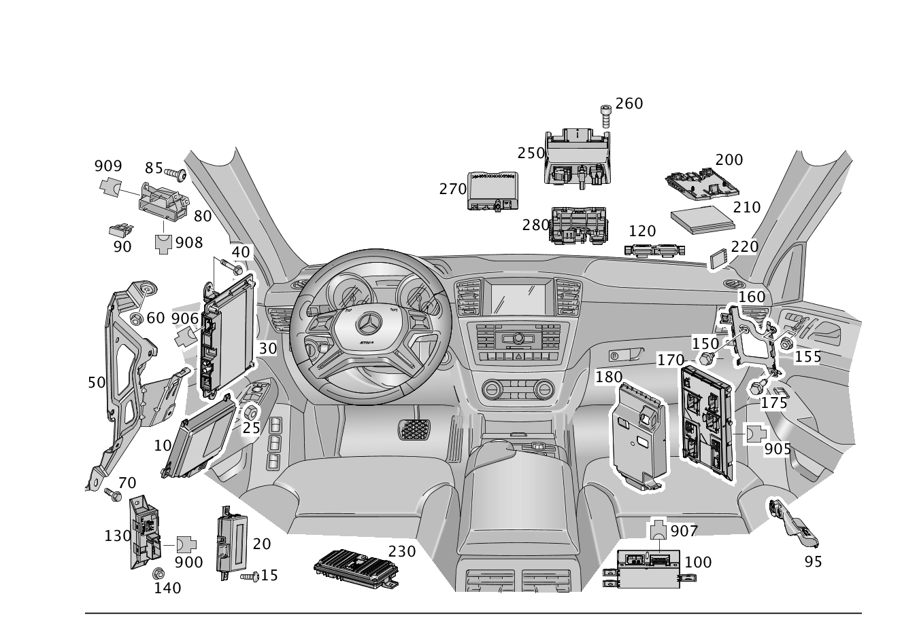

| № | Артикул | Название | Кол. | Примечание | Ограничение |
|---|---|---|---|---|---|
| 10 | A 000 900 46 01 | Блок управления (STEUERGERAET) | 1 | ВИДЕОДАТЧИКИ И РАДАРНЫЕ ДАТЧИКИ [672] ДЕТАЛЬ ПОСЛЕ УСТАН.ПРОВЕРИТЬ НА АКТУАЛЬНОСТЬ "ПРОШИВНОГО" ПО [697] ДЕТАЛЬ ПОСТАВЛЯЕТСЯ ТОЛЬКО/ИЛИ ТАКЖЕ КАК ЗАП.ЧАСТЬ | (233/237/238)+802 |
| 10 | A 000 900 01 02 | Блок управления (STEUERGERAET) | 1 | ВИДЕОДАТЧИКИ И РАДАРНЫЕ ДАТЧИКИ [672] ДЕТАЛЬ ПОСЛЕ УСТАН.ПРОВЕРИТЬ НА АКТУАЛЬНОСТЬ "ПРОШИВНОГО" ПО [697] ДЕТАЛЬ ПОСТАВЛЯЕТСЯ ТОЛЬКО/ИЛИ ТАКЖЕ КАК ЗАП.ЧАСТЬ | (233/237/238)+(803/804) |
| 10 | A 000 900 47 01 | Блок управления (STEUERGERAET) | 1 | ВИДЕОДАТЧИКИ И РАДАРНЫЕ ДАТЧИКИ [672] ДЕТАЛЬ ПОСЛЕ УСТАН.ПРОВЕРИТЬ НА АКТУАЛЬНОСТЬ "ПРОШИВНОГО" ПО | 803+053+(233/237/238) |
| 10 | A 000 900 47 01 | Блок управления (STEUERGERAET) | 1 | ВИДЕОДАТЧИКИ И РАДАРНЫЕ ДАТЧИКИ [672] ДЕТАЛЬ ПОСЛЕ УСТАН.ПРОВЕРИТЬ НА АКТУАЛЬНОСТЬ "ПРОШИВНОГО" ПО | (233/237/238)+(803/804) |
| 10 | A 000 900 27 06 | Блок управления (STEUERGERAET) | 1 | ВИДЕОДАТЧИКИ И РАДАРНЫЕ ДАТЧИКИ [672] ДЕТАЛЬ ПОСЛЕ УСТАН.ПРОВЕРИТЬ НА АКТУАЛЬНОСТЬ "ПРОШИВНОГО" ПО [697] ДЕТАЛЬ ПОСТАВЛЯЕТСЯ ТОЛЬКО/ИЛИ ТАКЖЕ КАК ЗАП.ЧАСТЬ | (233/237/238)+(803/804) |
| 10 | A 000 900 27 06 | Блок управления (STEUERGERAET) | 1 | ВИДЕОДАТЧИКИ И РАДАРНЫЕ ДАТЧИКИ [672] ДЕТАЛЬ ПОСЛЕ УСТАН.ПРОВЕРИТЬ НА АКТУАЛЬНОСТЬ "ПРОШИВНОГО" ПО [697] ДЕТАЛЬ ПОСТАВЛЯЕТСЯ ТОЛЬКО/ИЛИ ТАКЖЕ КАК ЗАП.ЧАСТЬ | (233/237/238)+(805+-055) |
| 10 | A 000 900 20 03 | Блок управления (STEUERGERAET) | 1 | ВИДЕОДАТЧИКИ И РАДАРНЫЕ ДАТЧИКИ [672] ДЕТАЛЬ ПОСЛЕ УСТАН.ПРОВЕРИТЬ НА АКТУАЛЬНОСТЬ "ПРОШИВНОГО" ПО [697] ДЕТАЛЬ ПОСТАВЛЯЕТСЯ ТОЛЬКО/ИЛИ ТАКЖЕ КАК ЗАП.ЧАСТЬ | 805+055+(233/237/238) |
| 10 | A 000 900 77 07 | Блок управления (STEUERGERAET) | 1 | ВИДЕОДАТЧИКИ И РАДАРНЫЕ ДАТЧИКИ [672] ДЕТАЛЬ ПОСЛЕ УСТАН.ПРОВЕРИТЬ НА АКТУАЛЬНОСТЬ "ПРОШИВНОГО" ПО [697] ДЕТАЛЬ ПОСТАВЛЯЕТСЯ ТОЛЬКО/ИЛИ ТАКЖЕ КАК ЗАП.ЧАСТЬ | (806+-056)+233 |
| 10 | A 000 900 02 06 | Блок управления (STEUERGERAET) | 1 | ВИДЕОДАТЧИКИ И РАДАРНЫЕ ДАТЧИКИ [672] ДЕТАЛЬ ПОСЛЕ УСТАН.ПРОВЕРИТЬ НА АКТУАЛЬНОСТЬ "ПРОШИВНОГО" ПО | (806+-056)+233 |
| 10 | A 000 900 19 07 | Блок управления (STEUERGERAET) | 1 | ВИДЕОДАТЧИКИ И РАДАРНЫЕ ДАТЧИКИ [672] ДЕТАЛЬ ПОСЛЕ УСТАН.ПРОВЕРИТЬ НА АКТУАЛЬНОСТЬ "ПРОШИВНОГО" ПО | (806+-056)+233 |
| 10 | A 000 900 17 09 | Блок управления (STEUERGERAET) | 1 | ВИДЕОДАТЧИКИ И РАДАРНЫЕ ДАТЧИКИ [672] ДЕТАЛЬ ПОСЛЕ УСТАН.ПРОВЕРИТЬ НА АКТУАЛЬНОСТЬ "ПРОШИВНОГО" ПО | (806+-056)+233 |
| 10 | A 000 900 29 09 | Блок управления (STEUERGERAET) | 1 | ВИДЕОДАТЧИКИ И РАДАРНЫЕ ДАТЧИКИ [672] ДЕТАЛЬ ПОСЛЕ УСТАН.ПРОВЕРИТЬ НА АКТУАЛЬНОСТЬ "ПРОШИВНОГО" ПО [697] ДЕТАЛЬ ПОСТАВЛЯЕТСЯ ТОЛЬКО/ИЛИ ТАКЖЕ КАК ЗАП.ЧАСТЬ | (806+-056)+233 |
| 10 | A 000 900 29 09 | Блок управления (STEUERGERAET) | 1 | ВИДЕОДАТЧИКИ И РАДАРНЫЕ ДАТЧИКИ [672] ДЕТАЛЬ ПОСЛЕ УСТАН.ПРОВЕРИТЬ НА АКТУАЛЬНОСТЬ "ПРОШИВНОГО" ПО [697] ДЕТАЛЬ ПОСТАВЛЯЕТСЯ ТОЛЬКО/ИЛИ ТАКЖЕ КАК ЗАП.ЧАСТЬ | (806+056/807)+233 |
| 10 | A 000 900 50 09 | Блок управления (STEUERGERAET) | 1 | ВИДЕОДАТЧИКИ И РАДАРНЫЕ ДАТЧИКИ [672] ДЕТАЛЬ ПОСЛЕ УСТАН.ПРОВЕРИТЬ НА АКТУАЛЬНОСТЬ "ПРОШИВНОГО" ПО [697] ДЕТАЛЬ ПОСТАВЛЯЕТСЯ ТОЛЬКО/ИЛИ ТАКЖЕ КАК ЗАП.ЧАСТЬ | (806+056/807)+233 |
| 10 | A 000 900 52 09 | Блок управления (STEUERGERAET) | 1 | ВИДЕОДАТЧИКИ И РАДАРНЫЕ ДАТЧИКИ [672] ДЕТАЛЬ ПОСЛЕ УСТАН.ПРОВЕРИТЬ НА АКТУАЛЬНОСТЬ "ПРОШИВНОГО" ПО [697] ДЕТАЛЬ ПОСТАВЛЯЕТСЯ ТОЛЬКО/ИЛИ ТАКЖЕ КАК ЗАП.ЧАСТЬ | (806+056/807/808/809/800)+233 |
| 10 | A 000 900 88 05 | Блок управления (STEUERGERAET) | 1 | ВИДЕОДАТЧИКИ И РАДАРНЫЕ ДАТЧИКИ [672] ДЕТАЛЬ ПОСЛЕ УСТАН.ПРОВЕРИТЬ НА АКТУАЛЬНОСТЬ "ПРОШИВНОГО" ПО | (806+-056)+233 |
| 15 | N 000000 004584 | Винт с 6-гр. глвк (SECHSRUNDSCHRAUBE) | 2 | Крепление блоков управления; M5X16 | (233/237/238)+(802/803/804/805) |
| 15 | N 000000 001935 | Винт с 6-гр. глвк (SECHSRUNDSCHRAUBE) | 4 | Крепление блоков управления; M5X16 | 233/237/238 |
| 15 | N 000000 004584 | Винт с 6-гр. глвк (SECHSRUNDSCHRAUBE) | 2 | Крепление блоков управления; M5X16 | 805+(233/237/238) |
| 15 | N 000000 004584 | Винт с 6-гр. глвк (SECHSRUNDSCHRAUBE) | 2 | Крепление блоков управления; M5X16 | (233/237/238)+(806+-056) |
| 15 | N 000000 004584 | Винт с 6-гр. глвк (SECHSRUNDSCHRAUBE) | 2 | Крепление блоков управления; M5X16 | (233/237/238)+(806/807/808/809/800) |
| 15 | N 000000 001935 | Винт с 6-гр. глвк (SECHSRUNDSCHRAUBE) | 2 | Крепление блоков управления; M5X16 | 806+(233/237/238) |
| 20 | A 212 900 96 13 | Блок управления (STEUERGERAET) | 1 | МЕЖСЕТЕВОЙ ИНТЕРФЕЙС ХОДОВОЙ ЧАСТИ [672] ДЕТАЛЬ ПОСЛЕ УСТАН.ПРОВЕРИТЬ НА АКТУАЛЬНОСТЬ "ПРОШИВНОГО" ПО | 233+(806/807/808/809/800) |
| 20 | A 212 900 98 29 | Блок управления (STEUERGERAET) | 1 | МЕЖСЕТЕВОЙ ИНТЕРФЕЙС ХОДОВОЙ ЧАСТИ [672] ДЕТАЛЬ ПОСЛЕ УСТАН.ПРОВЕРИТЬ НА АКТУАЛЬНОСТЬ "ПРОШИВНОГО" ПО [697] ДЕТАЛЬ ПОСТАВЛЯЕТСЯ ТОЛЬКО/ИЛИ ТАКЖЕ КАК ЗАП.ЧАСТЬ | 233+(806/807/808/809/800) |
| 25 | A 000 990 43 37 | Шестигранная гайка (SECHSKANTMUTTER) | 2 | КРЕПЛЕНИЕ БУ НА ДЕРЖАТ.; M6 | 805+055+233 |
| 25 | A 000 984 00 10 | Пластмассовая гайка (KUNSTSTOFFMUTTER) | 2 | КРЕПЛЕНИЕ БУ НА ДЕРЖАТ. | 233+(806/807/808/809/800) |
| 30 | A 166 900 33 02 | Блок управления (STEUERGERAET) | 1 | СИСТЕМА НОЧНОГО ВИДЕНИЯ [672] ДЕТАЛЬ ПОСЛЕ УСТАН.ПРОВЕРИТЬ НА АКТУАЛЬНОСТЬ "ПРОШИВНОГО" ПО [697] ДЕТАЛЬ ПОСТАВЛЯЕТСЯ ТОЛЬКО/ИЛИ ТАКЖЕ КАК ЗАП.ЧАСТЬ | 610 |
| 40 | N 000000 001475 | Винт с 6-гр. глвк (SECHSRUNDSCHRAUBE) | 3 | БЛОК УПРАВЛЕНИЯ К КРОНШТЕЙНУ; M6X12 Рулевое управление: Влево | 610 |
| 40 | A 000 990 43 37 | Шестигранная гайка (SECHSKANTMUTTER) | 3 | БЛОК УПРАВЛЕНИЯ К КРОНШТЕЙНУ; M6 Рулевое управление: Вправо | 610 |
| 50 | A 166 545 40 40 | Держатель (HALTER) | 1 | Блок управления Рулевое управление: Влево | 233/237/238/610 |
| 50 | A 166 545 40 40 | Держатель (HALTER) | 1 | Блок управления Рулевое управление: Влево | (233/237/238/610)+(802/803/804/805) |
| 50 | A 166 545 63 40 | Держатель (HALTER) | 1 | Блок управления Рулевое управление: Вправо | 233/237/238/610 |
| 50 | A 166 545 34 47 | Держатель (HALTER) | 1 | Блок управления Рулевое управление: Влево | (233/237/238)+(806+-056/807/808/809/800) |
| 50 | A 166 545 33 47 | Держатель (HALTER) | 1 | Блок управления Рулевое управление: Вправо | (233/237/238)+(806+-056/807/808/809/800) |
| 50 | A 166 545 63 40 | Держатель (HALTER) | 1 | Блок управления Рулевое управление: Вправо | (233/237/238/610)+(802/803/804/805) |
| 60 | N 910112 006003 | Шестигранная гайка (SECHSKANTMUTTER) | 1 | Крепление скобы; M6 Рулевое управление: Влево | 233/237/238/610 |
| 60 | A 000 990 43 37 | Шестигранная гайка (SECHSKANTMUTTER) | 2 | Крепление скобы; M6 Рулевое управление: Вправо | 233/237/238/610 |
| 70 | N 910143 006000 | Винт с 6-гр. глвк (SECHSRUNDSCHRAUBE) | 2 | КРЕПЛЕНИЕ ДЕРЖАТ. НА СТОЙКЕ А; M6X12 Рулевое управление: Влево | 233/237/238/610 |
| 70 | N 910143 006000 | Винт с 6-гр. глвк (SECHSRUNDSCHRAUBE) | 1 | КРЕПЛЕНИЕ ДЕРЖАТ. НА СТОЙКЕ А; M6X12 Рулевое управление: Вправо | 233/237/238/610 |
| 80 | A 166 545 68 40 | Держатель (HALTER) | 1 | БЛОК ПРЕДОХРАНИТЕЛЕЙ САЛОНА Рулевое управление: Влево | |
| 80 | A 166 545 93 40 | Держатель (HALTER) | 1 | БЛОК ПРЕДОХРАНИТЕЛЕЙ САЛОНА Рулевое управление: Вправо | |
| 85 | N 000000 006731 | Винт с 6-гр. глвк (SECHSRUNDSCHRAUBE) | 2 | КРЕПЛЕН. КРОНШТ. СЛЕВА; M6X20 Рулевое управление: Влево | |
| 85 | N 000000 006731 | Винт с 6-гр. глвк (SECHSRUNDSCHRAUBE) | 2 | КРЕПЛЕНИЕ КРОНШТ. СПРАВА; M6X20 Рулевое управление: Вправо | |
| 90 | N 000000 004202 | Плавкая вставка (SICHERUNGSEINSATZ) | 5 | C\-5 | |
| 90 | N 000000 004203 | Плавкая вставка (SICHERUNGSEINSATZ) | 1 | C\-7.5 | |
| 90 | N 000000 004204 | Плавкая вставка (SICHERUNGSEINSATZ) | 1 | C\-10 | |
| 90 | N 000000 004205 | Плавкая вставка (SICHERUNGSEINSATZ) | 2 | C\-15 | |
| 95 | A 166 546 00 45 | Крышка (ABDECKUNG) | 1 | ПРЕДОХРАНИТЕЛИ | |
| 100 | A 172 900 73 01 | Блок управления | 1 | МУЛЬТИМЕДИЙНЫЙ ИНТЕРФЕЙС [672] ДЕТАЛЬ ПОСЛЕ УСТАН.ПРОВЕРИТЬ НА АКТУАЛЬНОСТЬ "ПРОШИВНОГО" ПО | 518+802 |
| 100 | A 172 900 93 02 | Блок управления (STEUERGERAET) | 1 | МУЛЬТИМЕДИЙНЫЙ ИНТЕРФЕЙС [672] ДЕТАЛЬ ПОСЛЕ УСТАН.ПРОВЕРИТЬ НА АКТУАЛЬНОСТЬ "ПРОШИВНОГО" ПО | 518+802 |
| 100 | A 172 900 11 05 | Блок управления (STEUERGERAET) | 1 | МУЛЬТИМЕДИЙНЫЙ ИНТЕРФЕЙС [672] ДЕТАЛЬ ПОСЛЕ УСТАН.ПРОВЕРИТЬ НА АКТУАЛЬНОСТЬ "ПРОШИВНОГО" ПО | 518+803 |
| 100 | A 172 900 03 06 | Блок управления | 1 | МУЛЬТИМЕДИЙНЫЙ ИНТЕРФЕЙС [672] ДЕТАЛЬ ПОСЛЕ УСТАН.ПРОВЕРИТЬ НА АКТУАЛЬНОСТЬ "ПРОШИВНОГО" ПО | 518+803 |
| 100 | A 172 900 19 06 | Блок управления | 1 | МУЛЬТИМЕДИЙНЫЙ ИНТЕРФЕЙС [672] ДЕТАЛЬ ПОСЛЕ УСТАН.ПРОВЕРИТЬ НА АКТУАЛЬНОСТЬ "ПРОШИВНОГО" ПО | 518+803 |
| 100 | A 172 900 82 06 | Блок управления (STEUERGERAET) | 1 | МУЛЬТИМЕДИЙНЫЙ ИНТЕРФЕЙС [672] ДЕТАЛЬ ПОСЛЕ УСТАН.ПРОВЕРИТЬ НА АКТУАЛЬНОСТЬ "ПРОШИВНОГО" ПО | 518+803 |
| 100 | A 172 900 60 08 | Блок управления (STEUERGERAET) | 1 | МУЛЬТИМЕДИЙНЫЙ ИНТЕРФЕЙС [672] ДЕТАЛЬ ПОСЛЕ УСТАН.ПРОВЕРИТЬ НА АКТУАЛЬНОСТЬ "ПРОШИВНОГО" ПО | 518+803 |
| 100 | A 172 900 28 09 | Блок управления (STEUERGERAET) | 1 | МУЛЬТИМЕДИЙНЫЙ ИНТЕРФЕЙС [672] ДЕТАЛЬ ПОСЛЕ УСТАН.ПРОВЕРИТЬ НА АКТУАЛЬНОСТЬ "ПРОШИВНОГО" ПО [697] ДЕТАЛЬ ПОСТАВЛЯЕТСЯ ТОЛЬКО/ИЛИ ТАКЖЕ КАК ЗАП.ЧАСТЬ | 518+(804/805) |
| 120 | A 212 820 45 85 | CONNECTION UNIT (MULTIMEDIA-ANSCHL.EINHEIT) | 1 | СПЛИТТЕР [697] ДЕТАЛЬ ПОСТАВЛЯЕТСЯ ТОЛЬКО/ИЛИ ТАКЖЕ КАК ЗАП.ЧАСТЬ | ((B54+522)+806)+-830 |
| 120 | A 212 820 45 85 | CONNECTION UNIT (MULTIMEDIA-ANSCHL.EINHEIT) | 1 | СПЛИТТЕР [697] ДЕТАЛЬ ПОСТАВЛЯЕТСЯ ТОЛЬКО/ИЛИ ТАКЖЕ КАК ЗАП.ЧАСТЬ | ((367+360+522)+(807/808))+-830 |
| 120 | A 212 820 45 85 | CONNECTION UNIT (MULTIMEDIA-ANSCHL.EINHEIT) | 1 | СПЛИТТЕР [697] ДЕТАЛЬ ПОСТАВЛЯЕТСЯ ТОЛЬКО/ИЛИ ТАКЖЕ КАК ЗАП.ЧАСТЬ | (367+362+522+(809/800))+-830 |
| 130 | A 166 900 71 01 | Блок управления | 1 | СИСТЕМА РЕГУЛИРОВКИ УГЛА НАКЛОНА ФАР [672] ДЕТАЛЬ ПОСЛЕ УСТАН.ПРОВЕРИТЬ НА АКТУАЛЬНОСТЬ "ПРОШИВНОГО" ПО | 615/621/622 |
| 130 | A 166 900 34 01 | Блок управления (STEUERGERAET) | 1 | СИСТЕМА РЕГУЛИРОВКИ УГЛА НАКЛОНА ФАР [672] ДЕТАЛЬ ПОСЛЕ УСТАН.ПРОВЕРИТЬ НА АКТУАЛЬНОСТЬ "ПРОШИВНОГО" ПО | 615/621/622 |
| 130 | A 166 900 29 06 | Блок управления (STEUERGERAET) | 1 | СИСТЕМА РЕГУЛИРОВКИ УГЛА НАКЛОНА ФАР [672] ДЕТАЛЬ ПОСЛЕ УСТАН.ПРОВЕРИТЬ НА АКТУАЛЬНОСТЬ "ПРОШИВНОГО" ПО | 615/621/622 |
| 130 | A 166 900 33 09 | Блок управления (STEUERGERAET) | 1 | СИСТЕМА РЕГУЛИРОВКИ УГЛА НАКЛОНА ФАР [672] ДЕТАЛЬ ПОСЛЕ УСТАН.ПРОВЕРИТЬ НА АКТУАЛЬНОСТЬ "ПРОШИВНОГО" ПО [697] ДЕТАЛЬ ПОСТАВЛЯЕТСЯ ТОЛЬКО/ИЛИ ТАКЖЕ КАК ЗАП.ЧАСТЬ | 615/621/622 |
| 130 | A 166 900 29 06 | Блок управления (STEUERGERAET) | 1 | СИСТЕМА РЕГУЛИРОВКИ УГЛА НАКЛОНА ФАР [672] ДЕТАЛЬ ПОСЛЕ УСТАН.ПРОВЕРИТЬ НА АКТУАЛЬНОСТЬ "ПРОШИВНОГО" ПО | (614/615/618/621/622)+(804/805) |
| 140 | A 000 984 00 10 | Пластмассовая гайка (KUNSTSTOFFMUTTER) | 1 | КРЕПЛЕНИЕ БЛОКА УПРАВЛЕНИЯ | (614/618/615/621/622)+(802/803/804/805) |
| 150 | N 910143 006000 | Винт с 6-гр. глвк (SECHSRUNDSCHRAUBE) | 1 | КРЕПЛЕНИЕ ДЕРЖАТ. НА СТОЙКЕ А; M6X12 | |
| 155 | A 000 990 43 37 | Шестигранная гайка (SECHSKANTMUTTER) | 1 | КРЕПЛЕНИЕ ДЕРЖАТ. НА СТОЙКЕ А; M6 | |
| 160 | A 166 545 09 40 | Держатель (HALTER) | 1 | КРЕПЛЕНИЕ БЛОКА УПРАВЛЕНИЯ Рулевое управление: Влево | |
| 160 | A 166 545 62 40 | Держатель (HALTER) | 1 | КРЕПЛЕНИЕ БЛОКА УПРАВЛЕНИЯ Рулевое управление: Вправо | |
| 170 | A 166 900 89 03 | Блок управления (STEUERGERAET) | 1 | ЦЕНТР.КОММУТАЦ.БЛОК SAM [672] ДЕТАЛЬ ПОСЛЕ УСТАН.ПРОВЕРИТЬ НА АКТУАЛЬНОСТЬ "ПРОШИВНОГО" ПО | 802 |
| 170 | A 166 900 17 16 | Блок управления (STEUERGERAET) | 1 | ЦЕНТР.КОММУТАЦ.БЛОК SAM [672] ДЕТАЛЬ ПОСЛЕ УСТАН.ПРОВЕРИТЬ НА АКТУАЛЬНОСТЬ "ПРОШИВНОГО" ПО | 806 |
| 170 | A 166 900 16 08 | Блок управления (STEUERGERAET) | 1 | ЦЕНТР.КОММУТАЦ.БЛОК SAM [672] ДЕТАЛЬ ПОСЛЕ УСТАН.ПРОВЕРИТЬ НА АКТУАЛЬНОСТЬ "ПРОШИВНОГО" ПО | 803 |
| 170 | A 166 900 05 05 | Блок управления (STEUERGERAET) | 1 | ЦЕНТР.КОММУТАЦ.БЛОК SAM [672] ДЕТАЛЬ ПОСЛЕ УСТАН.ПРОВЕРИТЬ НА АКТУАЛЬНОСТЬ "ПРОШИВНОГО" ПО | 804/805 |
| 170 | A 166 900 35 08 | Блок управления | 1 | ЦЕНТР.КОММУТАЦ.БЛОК SAM [672] ДЕТАЛЬ ПОСЛЕ УСТАН.ПРОВЕРИТЬ НА АКТУАЛЬНОСТЬ "ПРОШИВНОГО" ПО | 804/805 |
| 170 | A 166 900 14 10 | Блок управления (STEUERGERAET) | 1 | ЦЕНТР.КОММУТАЦ.БЛОК SAM [672] ДЕТАЛЬ ПОСЛЕ УСТАН.ПРОВЕРИТЬ НА АКТУАЛЬНОСТЬ "ПРОШИВНОГО" ПО | 804/805 |
| 170 | A 166 900 93 11 | Блок управления (STEUERGERAET) | 1 | ЦЕНТР.КОММУТАЦ.БЛОК SAM [672] ДЕТАЛЬ ПОСЛЕ УСТАН.ПРОВЕРИТЬ НА АКТУАЛЬНОСТЬ "ПРОШИВНОГО" ПО | 804/805 |
| 170 | A 166 900 40 12 | Блок управления (STEUERGERAET) | 1 | ЦЕНТР.КОММУТАЦ.БЛОК SAM [672] ДЕТАЛЬ ПОСЛЕ УСТАН.ПРОВЕРИТЬ НА АКТУАЛЬНОСТЬ "ПРОШИВНОГО" ПО | 804/805 |
| 170 | A 166 900 17 14 | Блок управления (STEUERGERAET) | 1 | ЦЕНТР.КОММУТАЦ.БЛОК SAM [672] ДЕТАЛЬ ПОСЛЕ УСТАН.ПРОВЕРИТЬ НА АКТУАЛЬНОСТЬ "ПРОШИВНОГО" ПО [697] ДЕТАЛЬ ПОСТАВЛЯЕТСЯ ТОЛЬКО/ИЛИ ТАКЖЕ КАК ЗАП.ЧАСТЬ | 804/805 |
| 170 | A 166 900 58 07 | Блок управления | 1 | ЦЕНТР.КОММУТАЦ.БЛОК SAM [672] ДЕТАЛЬ ПОСЛЕ УСТАН.ПРОВЕРИТЬ НА АКТУАЛЬНОСТЬ "ПРОШИВНОГО" ПО | 806/806+ME05 |
| 170 | A 166 900 74 14 | Блок управления (STEUERGERAET) | 1 | ЦЕНТР.КОММУТАЦ.БЛОК SAM [672] ДЕТАЛЬ ПОСЛЕ УСТАН.ПРОВЕРИТЬ НА АКТУАЛЬНОСТЬ "ПРОШИВНОГО" ПО | 806/806+ME05 |
| 170 | A 166 900 55 15 | Блок управления (STEUERGERAET) | 1 | ЦЕНТР.КОММУТАЦ.БЛОК SAM [672] ДЕТАЛЬ ПОСЛЕ УСТАН.ПРОВЕРИТЬ НА АКТУАЛЬНОСТЬ "ПРОШИВНОГО" ПО | 806/806+ME05 |
| 170 | A 166 900 17 16 | Блок управления (STEUERGERAET) | 1 | ЦЕНТР.КОММУТАЦ.БЛОК SAM [672] ДЕТАЛЬ ПОСЛЕ УСТАН.ПРОВЕРИТЬ НА АКТУАЛЬНОСТЬ "ПРОШИВНОГО" ПО | 807 |
| 170 | A 166 900 60 20 | Блок управления (STEUERGERAET) | 1 | ЦЕНТР.КОММУТАЦ.БЛОК SAM [672] ДЕТАЛЬ ПОСЛЕ УСТАН.ПРОВЕРИТЬ НА АКТУАЛЬНОСТЬ "ПРОШИВНОГО" ПО [697] ДЕТАЛЬ ПОСТАВЛЯЕТСЯ ТОЛЬКО/ИЛИ ТАКЖЕ КАК ЗАП.ЧАСТЬ | (808/809/800) |
| 170 | A 166 900 90 03 | Блок управления (STEUERGERAET) | 1 | ЦЕНТР.КОММУТАЦ.БЛОК SAM [672] ДЕТАЛЬ ПОСЛЕ УСТАН.ПРОВЕРИТЬ НА АКТУАЛЬНОСТЬ "ПРОШИВНОГО" ПО | (600/615/621/622/460/494/496)+802 |
| 170 | A 166 900 17 08 | Блок управления (STEUERGERAET) | 1 | ЦЕНТР.КОММУТАЦ.БЛОК SAM [672] ДЕТАЛЬ ПОСЛЕ УСТАН.ПРОВЕРИТЬ НА АКТУАЛЬНОСТЬ "ПРОШИВНОГО" ПО | (600/615/621/622/460/494/496/Z04/Z05)+803 |
| 170 | A 166 900 06 05 | Блок управления (STEUERGERAET) | 1 | ЦЕНТР.КОММУТАЦ.БЛОК SAM [672] ДЕТАЛЬ ПОСЛЕ УСТАН.ПРОВЕРИТЬ НА АКТУАЛЬНОСТЬ "ПРОШИВНОГО" ПО | (600/615/621/622/460/494/496/Z04/Z05)+(804/805) |
| 170 | A 166 900 36 08 | Блок управления | 1 | ЦЕНТР.КОММУТАЦ.БЛОК SAM [672] ДЕТАЛЬ ПОСЛЕ УСТАН.ПРОВЕРИТЬ НА АКТУАЛЬНОСТЬ "ПРОШИВНОГО" ПО | (600/615/621/622/460/494/496/Z04/Z05)+(804/805) |
| 170 | A 166 900 15 10 | Блок управления (STEUERGERAET) | 1 | ЦЕНТР.КОММУТАЦ.БЛОК SAM [672] ДЕТАЛЬ ПОСЛЕ УСТАН.ПРОВЕРИТЬ НА АКТУАЛЬНОСТЬ "ПРОШИВНОГО" ПО | (600/615/621/622/460/494/496/Z04/Z05)+(804/805) |
| 170 | A 166 900 94 11 | Блок управления (STEUERGERAET) | 1 | ЦЕНТР.КОММУТАЦ.БЛОК SAM [672] ДЕТАЛЬ ПОСЛЕ УСТАН.ПРОВЕРИТЬ НА АКТУАЛЬНОСТЬ "ПРОШИВНОГО" ПО | (600/615/621/622/460/494/496/Z04/Z05)+(804/805) |
| 170 | A 166 900 41 12 | Блок управления (STEUERGERAET) | 1 | ЦЕНТР.КОММУТАЦ.БЛОК SAM [672] ДЕТАЛЬ ПОСЛЕ УСТАН.ПРОВЕРИТЬ НА АКТУАЛЬНОСТЬ "ПРОШИВНОГО" ПО | (600/615/621/622/460/494/496/Z04/Z05)+(804/805) |
| 170 | A 166 900 18 14 | Блок управления (STEUERGERAET) | 1 | ЦЕНТР.КОММУТАЦ.БЛОК SAM [672] ДЕТАЛЬ ПОСЛЕ УСТАН.ПРОВЕРИТЬ НА АКТУАЛЬНОСТЬ "ПРОШИВНОГО" ПО [697] ДЕТАЛЬ ПОСТАВЛЯЕТСЯ ТОЛЬКО/ИЛИ ТАКЖЕ КАК ЗАП.ЧАСТЬ | (600/615/621/622/460/494/496/Z04/Z05)+(804/805) |
| 170 | A 166 900 18 16 | Блок управления (STEUERGERAET) | 1 | ЦЕНТР.КОММУТАЦ.БЛОК SAM [672] ДЕТАЛЬ ПОСЛЕ УСТАН.ПРОВЕРИТЬ НА АКТУАЛЬНОСТЬ "ПРОШИВНОГО" ПО | 807+(460/494/496/Z04/Z05/874/835) |
| 170 | A 166 900 61 20 | Блок управления (STEUERGERAET) | 1 | ЦЕНТР.КОММУТАЦ.БЛОК SAM [672] ДЕТАЛЬ ПОСЛЕ УСТАН.ПРОВЕРИТЬ НА АКТУАЛЬНОСТЬ "ПРОШИВНОГО" ПО [697] ДЕТАЛЬ ПОСТАВЛЯЕТСЯ ТОЛЬКО/ИЛИ ТАКЖЕ КАК ЗАП.ЧАСТЬ | (460/494/496/Z04/Z05/835/874)+(808/809/800) |
| 170 | A 166 900 18 16 | Блок управления (STEUERGERAET) | 1 | ЦЕНТР.КОММУТАЦ.БЛОК SAM [672] ДЕТАЛЬ ПОСЛЕ УСТАН.ПРОВЕРИТЬ НА АКТУАЛЬНОСТЬ "ПРОШИВНОГО" ПО | 806+(460/494/496/Z04/Z05/874) |
| 170 | A 166 900 56 15 | Блок управления (STEUERGERAET) | 1 | ЦЕНТР.КОММУТАЦ.БЛОК SAM [672] ДЕТАЛЬ ПОСЛЕ УСТАН.ПРОВЕРИТЬ НА АКТУАЛЬНОСТЬ "ПРОШИВНОГО" ПО [697] ДЕТАЛЬ ПОСТАВЛЯЕТСЯ ТОЛЬКО/ИЛИ ТАКЖЕ КАК ЗАП.ЧАСТЬ | (806/806+ME05)+(600/615/621/622/460/494/496/Z04/Z05/874) |
| 175 | N 910143 006002 | Винт с 6-гр. глвк (SECHSRUNDSCHRAUBE) | 1 | КРЕПЛЕНИЕ БУ НА ДЕРЖАТ.; M6X20 | |
| 180 | A 166 540 00 80 | Крышка (ABDECKUNG) | 1 | ЦЕНТР.КОММУТАЦ.БЛОК SAM | |
| 200 | A 166 900 00 01 | Блок управления | 1 | НАВИГАЦИЯ [697] ДЕТАЛЬ ПОСТАВЛЯЕТСЯ ТОЛЬКО/ИЛИ ТАКЖЕ КАК ЗАП.ЧАСТЬ | 509 |
| 200 | A 166 900 95 08 | Блок управления | 1 | НАВИГАЦИЯ [697] ДЕТАЛЬ ПОСТАВЛЯЕТСЯ ТОЛЬКО/ИЛИ ТАКЖЕ КАК ЗАП.ЧАСТЬ | 509 |
| 200 | A 166 900 87 08 | Блок управления (STEUERGERAET) | 1 | НАВИГАЦИЯ [672] ДЕТАЛЬ ПОСЛЕ УСТАН.ПРОВЕРИТЬ НА АКТУАЛЬНОСТЬ "ПРОШИВНОГО" ПО [697] ДЕТАЛЬ ПОСТАВЛЯЕТСЯ ТОЛЬКО/ИЛИ ТАКЖЕ КАК ЗАП.ЧАСТЬ | 509 |
| 200 | A 166 900 87 12 | Блок управления (STEUERGERAET) | 1 | НАВИГАЦИЯ [697] ДЕТАЛЬ ПОСТАВЛЯЕТСЯ ТОЛЬКО/ИЛИ ТАКЖЕ КАК ЗАП.ЧАСТЬ | 509 |
| 200 | A 166 900 62 15 | Блок управления (STEUERGERAET) | 1 | НАВИГАЦИЯ [672] ДЕТАЛЬ ПОСЛЕ УСТАН.ПРОВЕРИТЬ НА АКТУАЛЬНОСТЬ "ПРОШИВНОГО" ПО [697] ДЕТАЛЬ ПОСТАВЛЯЕТСЯ ТОЛЬКО/ИЛИ ТАКЖЕ КАК ЗАП.ЧАСТЬ | 509 |
| 200 | A 166 900 82 07 | Блок управления | 1 | НАВИГАЦИЯ | 509+830 |
| 200 | A 166 900 97 08 | Блок управления | 1 | НАВИГАЦИЯ | 509+830 |
| 200 | A 166 900 24 09 | Блок управления (STEUERGERAET) | 1 | НАВИГАЦИЯ | 509+830 |
| 200 | A 166 900 90 08 | Блок управления (STEUERGERAET) | 1 | НАВИГАЦИЯ [672] ДЕТАЛЬ ПОСЛЕ УСТАН.ПРОВЕРИТЬ НА АКТУАЛЬНОСТЬ "ПРОШИВНОГО" ПО | 509+830 |
| 200 | A 166 900 91 12 | Блок управления (STEUERGERAET) | 1 | НАВИГАЦИЯ | 509+830 |
| 200 | A 166 900 64 15 | Блок управления (STEUERGERAET) | 1 | НАВИГАЦИЯ [672] ДЕТАЛЬ ПОСЛЕ УСТАН.ПРОВЕРИТЬ НА АКТУАЛЬНОСТЬ "ПРОШИВНОГО" ПО | 509+830 |
| 200 | A 166 900 87 08 | Блок управления (STEUERGERAET) | 1 | НАВИГАЦИЯ [672] ДЕТАЛЬ ПОСЛЕ УСТАН.ПРОВЕРИТЬ НА АКТУАЛЬНОСТЬ "ПРОШИВНОГО" ПО [697] ДЕТАЛЬ ПОСТАВЛЯЕТСЯ ТОЛЬКО/ИЛИ ТАКЖЕ КАК ЗАП.ЧАСТЬ | 508 |
| 200 | A 166 900 87 12 | Блок управления (STEUERGERAET) | 1 | НАВИГАЦИЯ [697] ДЕТАЛЬ ПОСТАВЛЯЕТСЯ ТОЛЬКО/ИЛИ ТАКЖЕ КАК ЗАП.ЧАСТЬ | 508 |
| 200 | A 166 900 62 15 | Блок управления (STEUERGERAET) | 1 | НАВИГАЦИЯ [672] ДЕТАЛЬ ПОСЛЕ УСТАН.ПРОВЕРИТЬ НА АКТУАЛЬНОСТЬ "ПРОШИВНОГО" ПО [697] ДЕТАЛЬ ПОСТАВЛЯЕТСЯ ТОЛЬКО/ИЛИ ТАКЖЕ КАК ЗАП.ЧАСТЬ | 508 |
| 200 | A 166 900 90 08 | Блок управления (STEUERGERAET) | 1 | НАВИГАЦИЯ [672] ДЕТАЛЬ ПОСЛЕ УСТАН.ПРОВЕРИТЬ НА АКТУАЛЬНОСТЬ "ПРОШИВНОГО" ПО | 508+830 |
| 200 | A 166 900 91 12 | Блок управления (STEUERGERAET) | 1 | НАВИГАЦИЯ | 508+830 |
| 200 | A 166 900 64 15 | Блок управления (STEUERGERAET) | 1 | НАВИГАЦИЯ [672] ДЕТАЛЬ ПОСЛЕ УСТАН.ПРОВЕРИТЬ НА АКТУАЛЬНОСТЬ "ПРОШИВНОГО" ПО | 508+830 |
| 200 | A 166 900 21 07 | Блок управления (STEUERGERAET) | 1 | НАВИГАЦИЯ [672] ДЕТАЛЬ ПОСЛЕ УСТАН.ПРОВЕРИТЬ НА АКТУАЛЬНОСТЬ "ПРОШИВНОГО" ПО | 509+(625/919L)+803+053 |
| 200 | A 166 900 21 07 | Блок управления (STEUERGERAET) | 1 | НАВИГАЦИЯ [672] ДЕТАЛЬ ПОСЛЕ УСТАН.ПРОВЕРИТЬ НА АКТУАЛЬНОСТЬ "ПРОШИВНОГО" ПО | 509+(625/919L) |
| 200 | A 166 900 30 09 | Блок управления (STEUERGERAET) | 1 | НАВИГАЦИЯ [672] ДЕТАЛЬ ПОСЛЕ УСТАН.ПРОВЕРИТЬ НА АКТУАЛЬНОСТЬ "ПРОШИВНОГО" ПО | 509+(625/919L) |
| 200 | A 166 900 93 12 | Блок управления (STEUERGERAET) | 1 | НАВИГАЦИЯ | 509+(625/919L) |
| 200 | A 166 900 65 15 | Блок управления (STEUERGERAET) | 1 | НАВИГАЦИЯ [672] ДЕТАЛЬ ПОСЛЕ УСТАН.ПРОВЕРИТЬ НА АКТУАЛЬНОСТЬ "ПРОШИВНОГО" ПО [697] ДЕТАЛЬ ПОСТАВЛЯЕТСЯ ТОЛЬКО/ИЛИ ТАКЖЕ КАК ЗАП.ЧАСТЬ [402] БОЛЬШЕ НЕ ПОСТАВЛЯЕТСЯ | 509+(625/919L) |
| 200 | A 166 900 31 03 | Блок управления (STEUERGERAET) | 1 | НАВИГАЦИЯ [672] ДЕТАЛЬ ПОСЛЕ УСТАН.ПРОВЕРИТЬ НА АКТУАЛЬНОСТЬ "ПРОШИВНОГО" ПО | 509+524L |
| 200 | A 166 900 66 15 | Блок управления (STEUERGERAET) | 1 | НАВИГАЦИЯ [402] БОЛЬШЕ НЕ ПОСТАВЛЯЕТСЯ | 509+524L |
| 200 | A 166 900 65 15 | Блок управления (STEUERGERAET) | 1 | НАВИГАЦИОННЫЙ МОДУЛЬ [672] ДЕТАЛЬ ПОСЛЕ УСТАН.ПРОВЕРИТЬ НА АКТУАЛЬНОСТЬ "ПРОШИВНОГО" ПО [697] ДЕТАЛЬ ПОСТАВЛЯЕТСЯ ТОЛЬКО/ИЛИ ТАКЖЕ КАК ЗАП.ЧАСТЬ [402] БОЛЬШЕ НЕ ПОСТАВЛЯЕТСЯ | 508+(625/919L) |
| 200 | A 166 900 31 03 | Блок управления (STEUERGERAET) | 1 | НАВИГАЦИОННЫЙ МОДУЛЬ [672] ДЕТАЛЬ ПОСЛЕ УСТАН.ПРОВЕРИТЬ НА АКТУАЛЬНОСТЬ "ПРОШИВНОГО" ПО | 508+524L |
| 200 | A 166 900 66 15 | Блок управления (STEUERGERAET) | 1 | НАВИГАЦИОННЫЙ МОДУЛЬ [402] БОЛЬШЕ НЕ ПОСТАВЛЯЕТСЯ | 508+524L |
| 210 | A 172 982 00 25 | - Литий-ионная АКБ (BATTERIEPACK) | 1 | БЛОК УПРАВЛЕНИЯ [697] ДЕТАЛЬ ПОСТАВЛЯЕТСЯ ТОЛЬКО/ИЛИ ТАКЖЕ КАК ЗАП.ЧАСТЬ | 509 |
| 220 | A 000 906 75 02 | Принадлежности навигации (NAVIGATION-ZUBEHOER) | 1 | НАВИГАЦИЯ [402] БОЛЬШЕ НЕ ПОСТАВЛЯЕТСЯ | 509+524L |
| 220 | A 000 906 30 04 | Устройство управления | 1 | НАВИГАЦИЯ | 509+524L |
| 230 | A 166 900 10 00 | Блок управления | 1 | СИСТЕМА КРУГОВОГО ОБЗОРА [672] ДЕТАЛЬ ПОСЛЕ УСТАН.ПРОВЕРИТЬ НА АКТУАЛЬНОСТЬ "ПРОШИВНОГО" ПО | (803/804/805)+501 |
| 230 | A 000 900 92 02 | Блок управления | 1 | СИСТЕМА КРУГОВОГО ОБЗОРА [672] ДЕТАЛЬ ПОСЛЕ УСТАН.ПРОВЕРИТЬ НА АКТУАЛЬНОСТЬ "ПРОШИВНОГО" ПО | (803/804/805)+501 |
| 230 | A 000 900 13 03 | Блок управления | 1 | СИСТЕМА КРУГОВОГО ОБЗОРА [672] ДЕТАЛЬ ПОСЛЕ УСТАН.ПРОВЕРИТЬ НА АКТУАЛЬНОСТЬ "ПРОШИВНОГО" ПО | (803/804/805)+501 |
| 230 | A 000 900 21 03 | Блок управления | 1 | СИСТЕМА КРУГОВОГО ОБЗОРА [672] ДЕТАЛЬ ПОСЛЕ УСТАН.ПРОВЕРИТЬ НА АКТУАЛЬНОСТЬ "ПРОШИВНОГО" ПО | (803/804/805)+501 |
| 230 | A 000 900 57 03 | Блок управления | 1 | СИСТЕМА КРУГОВОГО ОБЗОРА [672] ДЕТАЛЬ ПОСЛЕ УСТАН.ПРОВЕРИТЬ НА АКТУАЛЬНОСТЬ "ПРОШИВНОГО" ПО | (803/804/805)+501 |
| 230 | A 000 900 78 04 | Блок управления (STEUERGERAET) | 1 | СИСТЕМА КРУГОВОГО ОБЗОРА [672] ДЕТАЛЬ ПОСЛЕ УСТАН.ПРОВЕРИТЬ НА АКТУАЛЬНОСТЬ "ПРОШИВНОГО" ПО | (803/804/805)+501 |
| 230 | A 000 900 14 07 | Блок управления (STEUERGERAET) | 1 | СИСТЕМА КРУГОВОГО ОБЗОРА [672] ДЕТАЛЬ ПОСЛЕ УСТАН.ПРОВЕРИТЬ НА АКТУАЛЬНОСТЬ "ПРОШИВНОГО" ПО [697] ДЕТАЛЬ ПОСТАВЛЯЕТСЯ ТОЛЬКО/ИЛИ ТАКЖЕ КАК ЗАП.ЧАСТЬ | (803/804/805)+501 |
| 230 | A 207 900 64 00 | Блок управления (STEUERGERAET) | 1 | СИСТЕМА КРУГОВОГО ОБЗОРА [672] ДЕТАЛЬ ПОСЛЕ УСТАН.ПРОВЕРИТЬ НА АКТУАЛЬНОСТЬ "ПРОШИВНОГО" ПО | (806+-056)+501 |
| 230 | A 207 900 79 00 | Блок управления (STEUERGERAET) | 1 | СИСТЕМА КРУГОВОГО ОБЗОРА [672] ДЕТАЛЬ ПОСЛЕ УСТАН.ПРОВЕРИТЬ НА АКТУАЛЬНОСТЬ "ПРОШИВНОГО" ПО | (806+-056)+501 |
| 230 | A 207 900 80 00 | Блок управления (STEUERGERAET) | 1 | СИСТЕМА КРУГОВОГО ОБЗОРА [672] ДЕТАЛЬ ПОСЛЕ УСТАН.ПРОВЕРИТЬ НА АКТУАЛЬНОСТЬ "ПРОШИВНОГО" ПО | (806+-056)+501 |
| 230 | A 207 900 85 00 | Блок управления (STEUERGERAET) | 1 | СИСТЕМА КРУГОВОГО ОБЗОРА [672] ДЕТАЛЬ ПОСЛЕ УСТАН.ПРОВЕРИТЬ НА АКТУАЛЬНОСТЬ "ПРОШИВНОГО" ПО | 501+(806+056/807+-057) |
| 230 | A 156 900 08 03 | Блок управления (STEUERGERAET) | 1 | СИСТЕМА КРУГОВОГО ОБЗОРА [672] ДЕТАЛЬ ПОСЛЕ УСТАН.ПРОВЕРИТЬ НА АКТУАЛЬНОСТЬ "ПРОШИВНОГО" ПО | 501+(807+057) |
| 230 | A 156 900 33 03 | Блок управления (STEUERGERAET) | 1 | СИСТЕМА КРУГОВОГО ОБЗОРА [672] ДЕТАЛЬ ПОСЛЕ УСТАН.ПРОВЕРИТЬ НА АКТУАЛЬНОСТЬ "ПРОШИВНОГО" ПО | 501+(808/809/800) |
| 250 | A 172 810 00 11 | Контактная плата (KONTAKTPLATTE) | 1 | НАВИГАЦИЯ | 508/509 |
| 260 | A 001 984 62 29 | Болт с головкой торкс (SECHSRUNDSCHRAUBE) | 2 | КРЕПЛЕНИЕ КОНТАКТНОЙ ПЛАСТИНЫ; 5X10 | 508/509 |
| 270 | A 231 901 13 00 | Блок управл. | 1 | СИСТЕМА УЧЕТА И ВЗИМАНИЯ ДОРОЖНЫХ СБОРОВ | 498 |
| 280 | A 231 827 00 14 | Держатель (HALTER) | 1 | БЛОК УПРАВЛЕНИЯ СИСТЕМЫ УЧЁТА НАЛОГООБЛАГАЕМОГО ПРОБЕГА | 498 |
| 300 | A 166 540 17 50 | Закр. блок предохр. | 1 | ПОД СИД. СПЕРЕДИ СПРАВА F33 | |
| 300 | A 166 540 23 50 | Закр. блок предохр. (SICHERUNGSDOSE) | 1 | ПОД СИД. СПЕРЕДИ СПРАВА F33 | |
| 305 | N 000000 007648 | Плавкая вставка (SICHERUNGSEINSATZ) | 6 | ПОСЕРЕБРЁНН.; C\-5A\-S | |
| 305 | N 000000 007649 | Плавкая вставка (SICHERUNGSEINSATZ) | 5 | ПОСЕРЕБРЁНН.; C\-7,5A\-S | |
| 305 | N 000000 007650 | Плавкая вставка (SICHERUNGSEINSATZ) | 1 | ПОСЕРЕБРЁНН.; C\-10A\-S | |
| 305 | N 000000 007651 | Плавкая вставка (SICHERUNGSEINSATZ) | 3 | ПОСЕРЕБРЁНН.; C\-15A\-S | |
| 305 | N 000000 007652 | Плавкая вставка (SICHERUNGSEINSATZ) | 1 | ПОСЕРЕБРЁНН.; C\-20A\-S | |
| 305 | N 000000 007653 | Плавкая вставка (SICHERUNGSEINSATZ) | 2 | ПОСЕРЕБРЁНН.; C\-25A\-S | |
| 305 | N 000000 007654 | Плавкая вставка (SICHERUNGSEINSATZ) | 8 | ПОСЕРЕБРЁНН.; C\-30A\-S | |
| 305 | N 000000 007658 | Плавкая вставка (SICHERUNGSEINSATZ) | 1 | ПОСЕРЕБРЁНН.; E\-30A\-S | |
| 305 | N 000000 007659 | Плавкая вставка (SICHERUNGSEINSATZ) | 8 | ПОСЕРЕБРЁНН.; E\-40A\-S | |
| 305 | N 000000 007660 | Плавкая вставка (SICHERUNGSEINSATZ) | 1 | ПОСЕРЕБРЁНН.; E\-50A\-S | |
| 306 | N 000000 006465 | Плавкая вставка (SICHERUNGSEINSATZ) | 3 | 6\-СЕКЦИОН.; SK6\-1 \- 5 | |
| 307 | A 003 542 28 19 | Разъединительное реле АКБ (BATTERIETRENNRELAIS) | 1 | STECKPLATZ U | |
| 310 | A 166 546 00 43 | Держатель (HALTER) | 1 | БЛОК ПРЕДОХРАНИТЕЛЕЙ | |
| 310 | A 166 545 28 00 | Держатель (HALTER) | 1 | БЛОК ПРЕДОХРАНИТЕЛЕЙ | |
| 312 | A 000 990 36 62 | Пластмассовая гайка (KUNSTSTOFFMUTTER) | 1 | КРЕПЛЕНИЕ КРОНШТЕЙНА | |
| 315 | A 166 545 01 03 | Крышка корпуса (ABDECKUNG GEHAEUSE) | 1 | К КРОНШТЕЙНУ | |
| 320 | A 000 990 36 62 | Пластмассовая гайка (KUNSTSTOFFMUTTER) | 3 | БЛОК ПРЕДОХРАНИТЕЛЕЙ | |
| 325 | A 166 906 77 01 | Реле тока (STROMBEGRENZER) | 1 | НА ГНЕЗДЕ ПРЕДОХР. | 4U7 |
| 325 | A 000 982 01 23 | Реле (RELAIS) | 1 | ПРОСТР. ДЛЯ НОГ ПЕРЕДН. ПАСС. СПЕРЕДИ, СПРАВА | B03+-4U7 |
| 325 | A 000 982 01 23 | Реле (RELAIS) | 1 | ПРОСТР. ДЛЯ НОГ ПЕРЕДН. ПАСС. СПЕРЕДИ, СПРАВА | (Z04/Z05)+-4U7 |
| 330 | A 166 540 21 50 | Закр. блок предохр. (SICHERUNGSDOSE) | 1 | ГНЕЗДО СИЛ. ПРЕДОХРАН. F32/4 | |
| 330 | A 166 540 29 50 | Закр. блок предохр. (SICHERUNGSDOSE) | 1 | ГНЕЗДО СИЛ. ПРЕДОХРАН. F32/4 | |
| 330 | A 166 540 36 12 | Закр. блок предохр. (SICHERUNGSDOSE) | 1 | ГНЕЗДО СИЛ. ПРЕДОХРАН. F32/4 | |
| 330 | A 166 540 93 15 | Распределитель потенц. (POTENZIALVERTEILER) | 1 | ГНЕЗДО СИЛ. ПРЕДОХРАН. F32/4 | |
| 333 | N 000000 007658 | Плавкая вставка (SICHERUNGSEINSATZ) | 2 | СИЛОВ. ПРЕДОХРАНИТЕЛЬ; E\-30A\-S | |
| 333 | N 000000 007659 | Плавкая вставка (SICHERUNGSEINSATZ) | 3 | СИЛОВ. ПРЕДОХРАНИТЕЛЬ; E\-40A\-S | |
| 350 | A 166 900 42 12 | Блок управления (STEUERGERAET) | 1 | РАЗДАТОЧНАЯ КОРОБКА N15/7 [672] ДЕТАЛЬ ПОСЛЕ УСТАН.ПРОВЕРИТЬ НА АКТУАЛЬНОСТЬ "ПРОШИВНОГО" ПО | 430+(806/807/808/809/800) |
| 350 | A 166 900 20 16 | Блок управления (STEUERGERAET) | 1 | РАЗДАТОЧНАЯ КОРОБКА N15/7 [672] ДЕТАЛЬ ПОСЛЕ УСТАН.ПРОВЕРИТЬ НА АКТУАЛЬНОСТЬ "ПРОШИВНОГО" ПО [697] ДЕТАЛЬ ПОСТАВЛЯЕТСЯ ТОЛЬКО/ИЛИ ТАКЖЕ КАК ЗАП.ЧАСТЬ | 430+(806/807/808/809/800) |
| 350 | A 166 540 03 62 | ЭБУ раздаточной коробки | 1 | РАЗДАТОЧНАЯ КОРОБКА N15/7 [429] ДЕТАЛЬ, СВЯЗАННАЯ С ПРОТИВОУГОННОЙ БЕЗОПАСНОСТЬЮ [672] ДЕТАЛЬ ПОСЛЕ УСТАН.ПРОВЕРИТЬ НА АКТУАЛЬНОСТЬ "ПРОШИВНОГО" ПО | 430+(802/803/804/805) |
| 350 | A 166 540 04 62 | ЭБУ раздаточной коробки (STG VERTEILERGETRIEBE) | 1 | РАЗДАТОЧНАЯ КОРОБКА N15/7 [429] ДЕТАЛЬ, СВЯЗАННАЯ С ПРОТИВОУГОННОЙ БЕЗОПАСНОСТЬЮ [672] ДЕТАЛЬ ПОСЛЕ УСТАН.ПРОВЕРИТЬ НА АКТУАЛЬНОСТЬ "ПРОШИВНОГО" ПО | 430+(802/803/804/805) |
| 360 | A 000 990 43 37 | Шестигранная гайка (SECHSKANTMUTTER) | 4 | КРЕПЛЕНИЕ БУ НА ДЕРЖАТ.; M6 | 430 |
| 370 | A 166 545 17 40 | Держатель (HALTER) | 1 | БУ ПОЛН. ИНТЕГРИР. УПРАВЛ. КП | 430 |
| 380 | A 004 990 62 50 | Гайка с фланцем (SECHSKANTMUTTER M FLANSCH) | 1 | КРЕПЛЕНИЕ КРОНШТЕЙНА; M6 | 430 |
| 380 | A 000 990 43 37 | Шестигранная гайка (SECHSKANTMUTTER) | 1 | КРОНШТЕЙН К ОСТОВУ КУЗОВА; M6 | 430 |
| 400 | A 166 900 20 03 | Блок управления | 1 | ПОДУШКА БЕЗОПАСНОСТИ [672] ДЕТАЛЬ ПОСЛЕ УСТАН.ПРОВЕРИТЬ НА АКТУАЛЬНОСТЬ "ПРОШИВНОГО" ПО | (802/803/804) |
| 400 | A 166 900 16 09 | Блок управления (STEUERGERAET) | 1 | ПОДУШКА БЕЗОПАСНОСТИ [672] ДЕТАЛЬ ПОСЛЕ УСТАН.ПРОВЕРИТЬ НА АКТУАЛЬНОСТЬ "ПРОШИВНОГО" ПО | (802/803/804) |
| 400 | A 166 900 12 11 | Блок управления (STEUERGERAET) | 1 | ПОДУШКА БЕЗОПАСНОСТИ [672] ДЕТАЛЬ ПОСЛЕ УСТАН.ПРОВЕРИТЬ НА АКТУАЛЬНОСТЬ "ПРОШИВНОГО" ПО [697] ДЕТАЛЬ ПОСТАВЛЯЕТСЯ ТОЛЬКО/ИЛИ ТАКЖЕ КАК ЗАП.ЧАСТЬ | (802/803/804) |
| 400 | A 166 900 38 03 | Блок управления (STEUERGERAET) | 1 | ПОДУШКА БЕЗОПАСНОСТИ [672] ДЕТАЛЬ ПОСЛЕ УСТАН.ПРОВЕРИТЬ НА АКТУАЛЬНОСТЬ "ПРОШИВНОГО" ПО | 805 |
| 400 | A 166 900 26 13 | Блок управления (STEUERGERAET) | 1 | ПОДУШКА БЕЗОПАСНОСТИ [672] ДЕТАЛЬ ПОСЛЕ УСТАН.ПРОВЕРИТЬ НА АКТУАЛЬНОСТЬ "ПРОШИВНОГО" ПО | 806 |
| 400 | A 166 900 27 13 | Блок управления (STEUERGERAET) | 1 | ПОДУШКА БЕЗОПАСНОСТИ [672] ДЕТАЛЬ ПОСЛЕ УСТАН.ПРОВЕРИТЬ НА АКТУАЛЬНОСТЬ "ПРОШИВНОГО" ПО [697] ДЕТАЛЬ ПОСТАВЛЯЕТСЯ ТОЛЬКО/ИЛИ ТАКЖЕ КАК ЗАП.ЧАСТЬ | U60+806 |
| 400 | A 166 900 89 17 | Блок управления (STEUERGERAET) | 1 | ПОДУШКА БЕЗОПАСНОСТИ [672] ДЕТАЛЬ ПОСЛЕ УСТАН.ПРОВЕРИТЬ НА АКТУАЛЬНОСТЬ "ПРОШИВНОГО" ПО | 807+-U60 |
| 400 | A 166 900 03 20 | Блок управления (STEUERGERAET) | 1 | ПОДУШКА БЕЗОПАСНОСТИ [672] ДЕТАЛЬ ПОСЛЕ УСТАН.ПРОВЕРИТЬ НА АКТУАЛЬНОСТЬ "ПРОШИВНОГО" ПО [697] ДЕТАЛЬ ПОСТАВЛЯЕТСЯ ТОЛЬКО/ИЛИ ТАКЖЕ КАК ЗАП.ЧАСТЬ | (807/808/809/800)+-U60 |
| 400 | A 166 900 21 03 | Блок управления (STEUERGERAET) | 1 | ПОДУШКА БЕЗОПАСНОСТИ [672] ДЕТАЛЬ ПОСЛЕ УСТАН.ПРОВЕРИТЬ НА АКТУАЛЬНОСТЬ "ПРОШИВНОГО" ПО | U60+(802/803/804) |
| 400 | A 166 900 17 09 | Блок управления (STEUERGERAET) | 1 | ПОДУШКА БЕЗОПАСНОСТИ [672] ДЕТАЛЬ ПОСЛЕ УСТАН.ПРОВЕРИТЬ НА АКТУАЛЬНОСТЬ "ПРОШИВНОГО" ПО | U60+(802/803/804) |
| 400 | A 166 900 13 11 | Блок управления (STEUERGERAET) | 1 | ПОДУШКА БЕЗОПАСНОСТИ [672] ДЕТАЛЬ ПОСЛЕ УСТАН.ПРОВЕРИТЬ НА АКТУАЛЬНОСТЬ "ПРОШИВНОГО" ПО | U60+(802/803/804) |
| 400 | A 166 900 39 03 | Блок управления (STEUERGERAET) | 1 | ПОДУШКА БЕЗОПАСНОСТИ [672] ДЕТАЛЬ ПОСЛЕ УСТАН.ПРОВЕРИТЬ НА АКТУАЛЬНОСТЬ "ПРОШИВНОГО" ПО [697] ДЕТАЛЬ ПОСТАВЛЯЕТСЯ ТОЛЬКО/ИЛИ ТАКЖЕ КАК ЗАП.ЧАСТЬ | U60+805 |
| 400 | A 166 900 19 16 | Блок управления (STEUERGERAET) | 1 | ПОДУШКА БЕЗОПАСНОСТИ [672] ДЕТАЛЬ ПОСЛЕ УСТАН.ПРОВЕРИТЬ НА АКТУАЛЬНОСТЬ "ПРОШИВНОГО" ПО | U60+806 |
| 400 | A 166 900 85 17 | Блок управления (STEUERGERAET) | 1 | ПОДУШКА БЕЗОПАСНОСТИ [672] ДЕТАЛЬ ПОСЛЕ УСТАН.ПРОВЕРИТЬ НА АКТУАЛЬНОСТЬ "ПРОШИВНОГО" ПО | U60+807 |
| 400 | A 166 900 02 20 | Блок управления (STEUERGERAET) | 1 | ПОДУШКА БЕЗОПАСНОСТИ [672] ДЕТАЛЬ ПОСЛЕ УСТАН.ПРОВЕРИТЬ НА АКТУАЛЬНОСТЬ "ПРОШИВНОГО" ПО [697] ДЕТАЛЬ ПОСТАВЛЯЕТСЯ ТОЛЬКО/ИЛИ ТАКЖЕ КАК ЗАП.ЧАСТЬ | (U60/2U8+(M157/M276/M278))+(807/808/809/800) |
| 410 | A 166 900 79 03 | Блок управления | 1 | АКУСТИЧЕСКАЯ СИСТЕМА N40/3 [672] ДЕТАЛЬ ПОСЛЕ УСТАН.ПРОВЕРИТЬ НА АКТУАЛЬНОСТЬ "ПРОШИВНОГО" ПО | 810+(802/803/804/805)/FV+(806+-056) |
| 410 | A 166 900 80 03 | Блок управления (STEUERGERAET) | 1 | АКУСТИЧЕСКАЯ СИСТЕМА N40/3 [672] ДЕТАЛЬ ПОСЛЕ УСТАН.ПРОВЕРИТЬ НА АКТУАЛЬНОСТЬ "ПРОШИВНОГО" ПО | 810+(802/803/804/805)/FV+(806+-056) |
| 410 | A 166 900 67 10 | Блок управления (STEUERGERAET) | 1 | АКУСТИЧЕСКАЯ СИСТЕМА N40/3 [672] ДЕТАЛЬ ПОСЛЕ УСТАН.ПРОВЕРИТЬ НА АКТУАЛЬНОСТЬ "ПРОШИВНОГО" ПО | 810+(802/803/804/805)/FV+(806+-056) |
| 410 | A 166 900 86 12 | Блок управления (STEUERGERAET) | 1 | АКУСТИЧЕСКАЯ СИСТЕМА N40/3 [672] ДЕТАЛЬ ПОСЛЕ УСТАН.ПРОВЕРИТЬ НА АКТУАЛЬНОСТЬ "ПРОШИВНОГО" ПО [697] ДЕТАЛЬ ПОСТАВЛЯЕТСЯ ТОЛЬКО/ИЛИ ТАКЖЕ КАК ЗАП.ЧАСТЬ | 810+(802/803/804/805)/FV+(806+-056) |
| 410 | A 166 900 40 04 | Блок управления | 1 | АКУСТИЧЕСКАЯ СИСТЕМА N40/3 [672] ДЕТАЛЬ ПОСЛЕ УСТАН.ПРОВЕРИТЬ НА АКТУАЛЬНОСТЬ "ПРОШИВНОГО" ПО | 810+806 |
| 410 | A 166 900 91 15 | Блок управления (STEUERGERAET) | 1 | АКУСТИЧЕСКАЯ СИСТЕМА N40/3 [672] ДЕТАЛЬ ПОСЛЕ УСТАН.ПРОВЕРИТЬ НА АКТУАЛЬНОСТЬ "ПРОШИВНОГО" ПО | 810+806 |
| 410 | A 166 900 16 16 | Блок управления (STEUERGERAET) | 1 | АКУСТИЧЕСКАЯ СИСТЕМА N40/3 [672] ДЕТАЛЬ ПОСЛЕ УСТАН.ПРОВЕРИТЬ НА АКТУАЛЬНОСТЬ "ПРОШИВНОГО" ПО [697] ДЕТАЛЬ ПОСТАВЛЯЕТСЯ ТОЛЬКО/ИЛИ ТАКЖЕ КАК ЗАП.ЧАСТЬ | 810+806 |
| 410 | A 166 900 82 17 | Блок управления (STEUERGERAET) | 1 | АКУСТИЧЕСКАЯ СИСТЕМА N40/3 [672] ДЕТАЛЬ ПОСЛЕ УСТАН.ПРОВЕРИТЬ НА АКТУАЛЬНОСТЬ "ПРОШИВНОГО" ПО | 810+806 |
| 410 | A 166 900 47 19 | Блок управления (STEUERGERAET) | 1 | АКУСТИЧЕСКАЯ СИСТЕМА N40/3 [672] ДЕТАЛЬ ПОСЛЕ УСТАН.ПРОВЕРИТЬ НА АКТУАЛЬНОСТЬ "ПРОШИВНОГО" ПО [697] ДЕТАЛЬ ПОСТАВЛЯЕТСЯ ТОЛЬКО/ИЛИ ТАКЖЕ КАК ЗАП.ЧАСТЬ | 810+806 |
| 410 | A 166 900 47 19 | Блок управления (STEUERGERAET) | 1 | АКУСТИЧЕСКАЯ СИСТЕМА [672] ДЕТАЛЬ ПОСЛЕ УСТАН.ПРОВЕРИТЬ НА АКТУАЛЬНОСТЬ "ПРОШИВНОГО" ПО [697] ДЕТАЛЬ ПОСТАВЛЯЕТСЯ ТОЛЬКО/ИЛИ ТАКЖЕ КАК ЗАП.ЧАСТЬ | 810+(807/808/809/800) |
| 420 | A 166 900 82 01 | Блок управления (STEUERGERAET) | 1 | ПОД ВОДИТ. СИДЕНЬЕМ СЛЕВА N51/6 [672] ДЕТАЛЬ ПОСЛЕ УСТАН.ПРОВЕРИТЬ НА АКТУАЛЬНОСТЬ "ПРОШИВНОГО" ПО | 468+(802/803/804/805)/468+(806+-056)+FV |
| 420 | A 166 900 21 04 | Блок управления | 1 | ПОД ВОДИТ. СИДЕНЬЕМ СЛЕВА N51/6 [672] ДЕТАЛЬ ПОСЛЕ УСТАН.ПРОВЕРИТЬ НА АКТУАЛЬНОСТЬ "ПРОШИВНОГО" ПО | 468+(802/803/804/805)/468+(806+-056)+FV |
| 420 | A 166 900 98 05 | Блок управления (STEUERGERAET) | 1 | ПОД ВОДИТ. СИДЕНЬЕМ СЛЕВА N51/6 [672] ДЕТАЛЬ ПОСЛЕ УСТАН.ПРОВЕРИТЬ НА АКТУАЛЬНОСТЬ "ПРОШИВНОГО" ПО | 468+(802/803/804/805)/468+(806+-056)+FV |
| 420 | A 166 900 66 08 | Блок управления (STEUERGERAET) | 1 | ПОД ВОДИТ. СИДЕНЬЕМ СЛЕВА N51/6 [672] ДЕТАЛЬ ПОСЛЕ УСТАН.ПРОВЕРИТЬ НА АКТУАЛЬНОСТЬ "ПРОШИВНОГО" ПО | 468+(802/803/804/805)/468+(806+-056)+FV |
| 420 | A 166 900 37 09 | Блок управления | 1 | ПОД ВОДИТ. СИДЕНЬЕМ СЛЕВА N51/6 [672] ДЕТАЛЬ ПОСЛЕ УСТАН.ПРОВЕРИТЬ НА АКТУАЛЬНОСТЬ "ПРОШИВНОГО" ПО | 468+(802/803/804/805)/468+(806+-056)+FV |
| 420 | A 166 900 48 11 | Блок управления (STEUERGERAET) | 1 | ПОД ВОДИТ. СИДЕНЬЕМ СЛЕВА N51/6 [672] ДЕТАЛЬ ПОСЛЕ УСТАН.ПРОВЕРИТЬ НА АКТУАЛЬНОСТЬ "ПРОШИВНОГО" ПО [697] ДЕТАЛЬ ПОСТАВЛЯЕТСЯ ТОЛЬКО/ИЛИ ТАКЖЕ КАК ЗАП.ЧАСТЬ | 468+(802/803/804/805) |
| 420 | A 292 900 00 00 | Блок управления | 1 | ПОД ВОДИТ. СИДЕНЬЕМ СЛЕВА N51/6 [672] ДЕТАЛЬ ПОСЛЕ УСТАН.ПРОВЕРИТЬ НА АКТУАЛЬНОСТЬ "ПРОШИВНОГО" ПО | (806/807/808/809/800)+468+-M157 |
| 420 | A 166 900 94 14 | Блок управления (STEUERGERAET) | 1 | ПОД ВОДИТ. СИДЕНЬЕМ СЛЕВА N51/6 [672] ДЕТАЛЬ ПОСЛЕ УСТАН.ПРОВЕРИТЬ НА АКТУАЛЬНОСТЬ "ПРОШИВНОГО" ПО [697] ДЕТАЛЬ ПОСТАВЛЯЕТСЯ ТОЛЬКО/ИЛИ ТАКЖЕ КАК ЗАП.ЧАСТЬ | (806/807/808/809/800)+468+-M157 |
| 430 | A 000 990 36 62 | Пластмассовая гайка (KUNSTSTOFFMUTTER) | 2 | КРЕПЛЕНИЕ БЛОКА УПРАВЛЕНИЯ | 489+214 |
| 430 | A 000 990 43 37 | Шестигранная гайка (SECHSKANTMUTTER) | 4 | КРЕПЛЕНИЕ БЛОКА УПРАВЛЕНИЯ; M6 | 489+214+P84+(806/807/808/809/800) |
| 430 | A 000 990 43 37 | Шестигранная гайка (SECHSKANTMUTTER) | 4 | КРЕПЛЕНИЕ БЛОКА УПРАВЛЕНИЯ; M6 | 489+215+P84+(806/807/808/809/800) |
| 440 | A 212 900 62 06 | Блок управления | 1 | TВ\-ТЮНЕР A2/42 [672] ДЕТАЛЬ ПОСЛЕ УСТАН.ПРОВЕРИТЬ НА АКТУАЛЬНОСТЬ "ПРОШИВНОГО" ПО | 865+803 |
| 440 | A 212 900 19 16 | Блок управления | 1 | TВ\-ТЮНЕР A2/42 [672] ДЕТАЛЬ ПОСЛЕ УСТАН.ПРОВЕРИТЬ НА АКТУАЛЬНОСТЬ "ПРОШИВНОГО" ПО | 865+803 |
| 440 | A 212 900 72 16 | Блок управления | 1 | TВ\-ТЮНЕР A2/42 [672] ДЕТАЛЬ ПОСЛЕ УСТАН.ПРОВЕРИТЬ НА АКТУАЛЬНОСТЬ "ПРОШИВНОГО" ПО | 865+803 |
| 440 | A 212 900 01 17 | ТВ-тюнер (TV-TUNER) | 1 | TВ\-ТЮНЕР A2/42 [672] ДЕТАЛЬ ПОСЛЕ УСТАН.ПРОВЕРИТЬ НА АКТУАЛЬНОСТЬ "ПРОШИВНОГО" ПО | 865+803 |
| 440 | A 212 900 01 17 | ТВ-тюнер (TV-TUNER) | 1 | TВ\-ТЮНЕР A2/42 [672] ДЕТАЛЬ ПОСЛЕ УСТАН.ПРОВЕРИТЬ НА АКТУАЛЬНОСТЬ "ПРОШИВНОГО" ПО | 865+803 |
| 440 | A 212 900 92 22 | Блок управления (STEUERGERAET) | 1 | TВ\-ТЮНЕР A2/42 [672] ДЕТАЛЬ ПОСЛЕ УСТАН.ПРОВЕРИТЬ НА АКТУАЛЬНОСТЬ "ПРОШИВНОГО" ПО | 865+(804/805) |
| 440 | A 212 900 78 27 | Блок управления (STEUERGERAET) | 1 | ТЮНЕР, ТВ A2/42 [672] ДЕТАЛЬ ПОСЛЕ УСТАН.ПРОВЕРИТЬ НА АКТУАЛЬНОСТЬ "ПРОШИВНОГО" ПО | 865+(804/805) |
| 440 | A 212 900 63 06 | Блок управления | 1 | TВ\-ТЮНЕР A2/42 [672] ДЕТАЛЬ ПОСЛЕ УСТАН.ПРОВЕРИТЬ НА АКТУАЛЬНОСТЬ "ПРОШИВНОГО" ПО | 865+498+803 |
| 440 | A 212 900 20 16 | Блок управления | 1 | TВ\-ТЮНЕР A2/42 [672] ДЕТАЛЬ ПОСЛЕ УСТАН.ПРОВЕРИТЬ НА АКТУАЛЬНОСТЬ "ПРОШИВНОГО" ПО | 865+498+803 |
| 440 | A 212 900 74 16 | Блок управления | 1 | TВ\-ТЮНЕР A2/42 [672] ДЕТАЛЬ ПОСЛЕ УСТАН.ПРОВЕРИТЬ НА АКТУАЛЬНОСТЬ "ПРОШИВНОГО" ПО | 865+498+803 |
| 440 | A 212 900 00 17 | ТВ-тюнер (TV-TUNER) | 1 | TВ\-ТЮНЕР A2/42 [672] ДЕТАЛЬ ПОСЛЕ УСТАН.ПРОВЕРИТЬ НА АКТУАЛЬНОСТЬ "ПРОШИВНОГО" ПО | 865+498+803 |
| 440 | A 212 900 00 17 | ТВ-тюнер (TV-TUNER) | 1 | TВ\-ТЮНЕР A2/42 [672] ДЕТАЛЬ ПОСЛЕ УСТАН.ПРОВЕРИТЬ НА АКТУАЛЬНОСТЬ "ПРОШИВНОГО" ПО | 865+498+803 |
| 440 | A 212 900 93 22 | Блок управления (STEUERGERAET) | 1 | TВ\-ТЮНЕР A2/42 [672] ДЕТАЛЬ ПОСЛЕ УСТАН.ПРОВЕРИТЬ НА АКТУАЛЬНОСТЬ "ПРОШИВНОГО" ПО | 865+498+(804/805) |
| 440 | A 212 900 80 27 | Блок управления (STEUERGERAET) | 1 | TВ\-ТЮНЕР A2/42 [672] ДЕТАЛЬ ПОСЛЕ УСТАН.ПРОВЕРИТЬ НА АКТУАЛЬНОСТЬ "ПРОШИВНОГО" ПО [697] ДЕТАЛЬ ПОСТАВЛЯЕТСЯ ТОЛЬКО/ИЛИ ТАКЖЕ КАК ЗАП.ЧАСТЬ | 865+498+(804/805) |
| 440 | A 221 900 24 04 | Блок управления | 1 | TВ\-ТЮНЕР A2/42 [672] ДЕТАЛЬ ПОСЛЕ УСТАН.ПРОВЕРИТЬ НА АКТУАЛЬНОСТЬ "ПРОШИВНОГО" ПО | 863+(830/858)+803 |
| 440 | A 221 900 68 04 | Блок управления (STEUERGERAET) | 1 | TВ\-ТЮНЕР A2/42 [672] ДЕТАЛЬ ПОСЛЕ УСТАН.ПРОВЕРИТЬ НА АКТУАЛЬНОСТЬ "ПРОШИВНОГО" ПО [697] ДЕТАЛЬ ПОСТАВЛЯЕТСЯ ТОЛЬКО/ИЛИ ТАКЖЕ КАК ЗАП.ЧАСТЬ | 863+(830/858)+(803/804) |
| 440 | A 212 900 73 16 | Блок управления (STEUERGERAET) | 1 | TВ\-ТЮНЕР [672] ДЕТАЛЬ ПОСЛЕ УСТАН.ПРОВЕРИТЬ НА АКТУАЛЬНОСТЬ "ПРОШИВНОГО" ПО | 865+(830/858)+(804/805) |
| 440 | A 212 900 79 27 | Блок управления (STEUERGERAET) | 1 | TВ\-ТЮНЕР [672] ДЕТАЛЬ ПОСЛЕ УСТАН.ПРОВЕРИТЬ НА АКТУАЛЬНОСТЬ "ПРОШИВНОГО" ПО | 865+(830/858)+(804/805) |
| 440 | A 212 900 75 16 | Блок управления | 1 | TВ\-ТЮНЕР [672] ДЕТАЛЬ ПОСЛЕ УСТАН.ПРОВЕРИТЬ НА АКТУАЛЬНОСТЬ "ПРОШИВНОГО" ПО | 865+835+(804/805) |
| 440 | A 212 900 80 22 | Блок управления (STEUERGERAET) | 1 | TВ\-ТЮНЕР [672] ДЕТАЛЬ ПОСЛЕ УСТАН.ПРОВЕРИТЬ НА АКТУАЛЬНОСТЬ "ПРОШИВНОГО" ПО | 865+835+(804/805) |
| 440 | A 212 900 26 23 | Блок управления (STEUERGERAET) | 1 | TВ\-ТЮНЕР [672] ДЕТАЛЬ ПОСЛЕ УСТАН.ПРОВЕРИТЬ НА АКТУАЛЬНОСТЬ "ПРОШИВНОГО" ПО | 865+835+(804/805) |
| 440 | A 212 900 19 25 | Блок управления (STEUERGERAET) | 1 | TВ\-ТЮНЕР [672] ДЕТАЛЬ ПОСЛЕ УСТАН.ПРОВЕРИТЬ НА АКТУАЛЬНОСТЬ "ПРОШИВНОГО" ПО | 865+835+(804/805) |
| 440 | A 212 900 81 27 | Блок управления (STEUERGERAET) | 1 | ТЮНЕР, ТВ [672] ДЕТАЛЬ ПОСЛЕ УСТАН.ПРОВЕРИТЬ НА АКТУАЛЬНОСТЬ "ПРОШИВНОГО" ПО | 865+835+(804/805) |
| 440 | A 222 900 97 10 | Блок управления (STEUERGERAET) | 1 | DAB\-ТЮНЕР [672] ДЕТАЛЬ ПОСЛЕ УСТАН.ПРОВЕРИТЬ НА АКТУАЛЬНОСТЬ "ПРОШИВНОГО" ПО | 537+(806/807) |
| 440 | A 222 900 27 10 | Блок управления (STEUERGERAET) | 1 | DAB\-ТЮНЕР [672] ДЕТАЛЬ ПОСЛЕ УСТАН.ПРОВЕРИТЬ НА АКТУАЛЬНОСТЬ "ПРОШИВНОГО" ПО | 537+(806/807) |
| 440 | A 222 900 92 11 | Блок управления (STEUERGERAET) | 1 | DAB\-ТЮНЕР [672] ДЕТАЛЬ ПОСЛЕ УСТАН.ПРОВЕРИТЬ НА АКТУАЛЬНОСТЬ "ПРОШИВНОГО" ПО | 537+(806/807/808/809/800) |
| 440 | A 222 900 51 17 | Блок управления (STEUERGERAET) | 1 | DAB\-ТЮНЕР [672] ДЕТАЛЬ ПОСЛЕ УСТАН.ПРОВЕРИТЬ НА АКТУАЛЬНОСТЬ "ПРОШИВНОГО" ПО [697] ДЕТАЛЬ ПОСТАВЛЯЕТСЯ ТОЛЬКО/ИЛИ ТАКЖЕ КАК ЗАП.ЧАСТЬ | 537+(806/807/808/809/800) |
| 440 | A 222 820 54 89 | Тюнер (TUNER) | 1 | TВ\-ТЮНЕР [672] ДЕТАЛЬ ПОСЛЕ УСТАН.ПРОВЕРИТЬ НА АКТУАЛЬНОСТЬ "ПРОШИВНОГО" ПО | 865+(806/807) |
| 440 | A 222 900 26 10 | Блок управления (STEUERGERAET) | 1 | TВ\-ТЮНЕР [672] ДЕТАЛЬ ПОСЛЕ УСТАН.ПРОВЕРИТЬ НА АКТУАЛЬНОСТЬ "ПРОШИВНОГО" ПО | 865+(806/807/808/809/800) |
| 440 | A 222 900 98 10 | Блок управления (STEUERGERAET) | 1 | TВ\-ТЮНЕР [672] ДЕТАЛЬ ПОСЛЕ УСТАН.ПРОВЕРИТЬ НА АКТУАЛЬНОСТЬ "ПРОШИВНОГО" ПО | 537+865+(806/807) |
| 440 | A 222 900 28 10 | Блок управления (STEUERGERAET) | 1 | TВ\-ТЮНЕР [672] ДЕТАЛЬ ПОСЛЕ УСТАН.ПРОВЕРИТЬ НА АКТУАЛЬНОСТЬ "ПРОШИВНОГО" ПО | 537+865+(806/807) |
| 440 | A 222 900 91 11 | Блок управления (STEUERGERAET) | 1 | TВ\-ТЮНЕР [672] ДЕТАЛЬ ПОСЛЕ УСТАН.ПРОВЕРИТЬ НА АКТУАЛЬНОСТЬ "ПРОШИВНОГО" ПО | 537+865+(806/807/808/809/800) |
| 440 | A 222 900 52 17 | Блок управления (STEUERGERAET) | 1 | TВ\-ТЮНЕР [672] ДЕТАЛЬ ПОСЛЕ УСТАН.ПРОВЕРИТЬ НА АКТУАЛЬНОСТЬ "ПРОШИВНОГО" ПО | 537+865+(806/807/808/809/800) |
| 440 | A 222 820 56 89 | Тюнер (TUNER) | 1 | СПУТНИКОВОЕ РАДИО [672] ДЕТАЛЬ ПОСЛЕ УСТАН.ПРОВЕРИТЬ НА АКТУАЛЬНОСТЬ "ПРОШИВНОГО" ПО | 536+(806/807) |
| 440 | A 222 900 86 10 | Блок управления (STEUERGERAET) | 1 | СПУТНИКОВОЕ РАДИО [672] ДЕТАЛЬ ПОСЛЕ УСТАН.ПРОВЕРИТЬ НА АКТУАЛЬНОСТЬ "ПРОШИВНОГО" ПО | 536+(806/807) |
| 440 | A 222 900 50 11 | Блок управления (STEUERGERAET) | 1 | СПУТНИКОВОЕ РАДИО [672] ДЕТАЛЬ ПОСЛЕ УСТАН.ПРОВЕРИТЬ НА АКТУАЛЬНОСТЬ "ПРОШИВНОГО" ПО [697] ДЕТАЛЬ ПОСТАВЛЯЕТСЯ ТОЛЬКО/ИЛИ ТАКЖЕ КАК ЗАП.ЧАСТЬ | 536+(806/807/808/809/800) |
| 440 | A 222 820 57 89 | Тюнер (TUNER) | 1 | TВ\-ТЮНЕР [672] ДЕТАЛЬ ПОСЛЕ УСТАН.ПРОВЕРИТЬ НА АКТУАЛЬНОСТЬ "ПРОШИВНОГО" ПО | 865+498+(806/807) |
| 440 | A 222 900 31 10 | Блок управления (STEUERGERAET) | 1 | TВ\-ТЮНЕР [672] ДЕТАЛЬ ПОСЛЕ УСТАН.ПРОВЕРИТЬ НА АКТУАЛЬНОСТЬ "ПРОШИВНОГО" ПО [697] ДЕТАЛЬ ПОСТАВЛЯЕТСЯ ТОЛЬКО/ИЛИ ТАКЖЕ КАК ЗАП.ЧАСТЬ | 865+498+(806/807/808/809/800) |
| 440 | A 222 900 46 13 | Блок управления (STEUERGERAET) | 1 | TВ\-ТЮНЕР [697] ДЕТАЛЬ ПОСТАВЛЯЕТСЯ ТОЛЬКО/ИЛИ ТАКЖЕ КАК ЗАП.ЧАСТЬ | 865+498+(806/807/808/809/800) |
| 440 | A 222 900 56 09 | Блок управления (STEUERGERAET) | 1 | TВ\-ТЮНЕР [672] ДЕТАЛЬ ПОСЛЕ УСТАН.ПРОВЕРИТЬ НА АКТУАЛЬНОСТЬ "ПРОШИВНОГО" ПО | 865+(830/858)+(806/807) |
| 440 | A 222 900 29 10 | Блок управления (STEUERGERAET) | 1 | TВ\-ТЮНЕР [672] ДЕТАЛЬ ПОСЛЕ УСТАН.ПРОВЕРИТЬ НА АКТУАЛЬНОСТЬ "ПРОШИВНОГО" ПО | 865+(830/858)+(806/807/808/809/800) |
| 440 | A 222 900 61 12 | Блок управления (STEUERGERAET) | 1 | TВ\-ТЮНЕР [672] ДЕТАЛЬ ПОСЛЕ УСТАН.ПРОВЕРИТЬ НА АКТУАЛЬНОСТЬ "ПРОШИВНОГО" ПО | 865+(830/858)+(806/807/808/809/800) |
| 440 | A 222 820 59 89 | Тюнер (TUNER) | 1 | TВ\-ТЮНЕР [672] ДЕТАЛЬ ПОСЛЕ УСТАН.ПРОВЕРИТЬ НА АКТУАЛЬНОСТЬ "ПРОШИВНОГО" ПО | 865+835+(806/807) |
| 440 | A 222 900 57 09 | Блок управления (STEUERGERAET) | 1 | TВ\-ТЮНЕР [672] ДЕТАЛЬ ПОСЛЕ УСТАН.ПРОВЕРИТЬ НА АКТУАЛЬНОСТЬ "ПРОШИВНОГО" ПО | 865+835+(806/807) |
| 440 | A 222 900 30 10 | Блок управления (STEUERGERAET) | 1 | TВ\-ТЮНЕР [672] ДЕТАЛЬ ПОСЛЕ УСТАН.ПРОВЕРИТЬ НА АКТУАЛЬНОСТЬ "ПРОШИВНОГО" ПО | 865+835+(806/807/808/809/800) |
| 440 | A 222 900 84 14 | Блок управления (STEUERGERAET) | 1 | TВ\-ТЮНЕР [672] ДЕТАЛЬ ПОСЛЕ УСТАН.ПРОВЕРИТЬ НА АКТУАЛЬНОСТЬ "ПРОШИВНОГО" ПО [697] ДЕТАЛЬ ПОСТАВЛЯЕТСЯ ТОЛЬКО/ИЛИ ТАКЖЕ КАК ЗАП.ЧАСТЬ | 865+835+(806/807/808/809/800) |
| 440 | A 213 820 06 89 | Тюнер (TUNER) | 1 | TВ\-ТЮНЕР [672] ДЕТАЛЬ ПОСЛЕ УСТАН.ПРОВЕРИТЬ НА АКТУАЛЬНОСТЬ "ПРОШИВНОГО" ПО | 865+835+197+(806/807/808/809/800) |
| 440 | A 213 900 93 19 | Блок управления (STEUERGERAET) | 1 | TВ\-ТЮНЕР [672] ДЕТАЛЬ ПОСЛЕ УСТАН.ПРОВЕРИТЬ НА АКТУАЛЬНОСТЬ "ПРОШИВНОГО" ПО | 865+835+197+(806/807/808/809/800) |
| 440 | A 213 900 95 20 | Блок управления (STEUERGERAET) | 1 | TВ\-ТЮНЕР [672] ДЕТАЛЬ ПОСЛЕ УСТАН.ПРОВЕРИТЬ НА АКТУАЛЬНОСТЬ "ПРОШИВНОГО" ПО | 865+835+197+(806/807/808/809/800) |
| 440 | A 213 900 18 14 | Блок управления | 1 | TВ\-ТЮНЕР [672] ДЕТАЛЬ ПОСЛЕ УСТАН.ПРОВЕРИТЬ НА АКТУАЛЬНОСТЬ "ПРОШИВНОГО" ПО | 865+197+(806/807/808/809/800) |
| 440 | A 213 900 95 16 | Блок управления (STEUERGERAET) | 1 | TВ\-ТЮНЕР [672] ДЕТАЛЬ ПОСЛЕ УСТАН.ПРОВЕРИТЬ НА АКТУАЛЬНОСТЬ "ПРОШИВНОГО" ПО | 865+197+(806/807/808/809/800) |
| 440 | A 213 900 96 20 | Блок управления (STEUERGERAET) | 1 | TВ\-ТЮНЕР [672] ДЕТАЛЬ ПОСЛЕ УСТАН.ПРОВЕРИТЬ НА АКТУАЛЬНОСТЬ "ПРОШИВНОГО" ПО | 865+197+(806/807/808/809/800) |
| 440 | A 213 900 33 21 | Блок управления (STEUERGERAET) | 1 | TВ\-ТЮНЕР [672] ДЕТАЛЬ ПОСЛЕ УСТАН.ПРОВЕРИТЬ НА АКТУАЛЬНОСТЬ "ПРОШИВНОГО" ПО [697] ДЕТАЛЬ ПОСТАВЛЯЕТСЯ ТОЛЬКО/ИЛИ ТАКЖЕ КАК ЗАП.ЧАСТЬ | 865+197+(806/807/808/809/800) |
| 440 | A 222 900 50 11 | Блок управления (STEUERGERAET) | 1 | СПУТНИКОВОЕ РАДИО [672] ДЕТАЛЬ ПОСЛЕ УСТАН.ПРОВЕРИТЬ НА АКТУАЛЬНОСТЬ "ПРОШИВНОГО" ПО [697] ДЕТАЛЬ ПОСТАВЛЯЕТСЯ ТОЛЬКО/ИЛИ ТАКЖЕ КАК ЗАП.ЧАСТЬ | 536+(FC/FW+(806/807/808/809/800)/FV+(806+056/807/808/809/800)) |
| 440 | A 222 900 30 15 | Блок управления (STEUERGERAET) | 1 | СПУТНИКОВОЕ РАДИО [672] ДЕТАЛЬ ПОСЛЕ УСТАН.ПРОВЕРИТЬ НА АКТУАЛЬНОСТЬ "ПРОШИВНОГО" ПО [402] БОЛЬШЕ НЕ ПОСТАВЛЯЕТСЯ | 536+(FC/FW+(806/807/808/809/800)/FV+(806+056/807/808/809/800)) |
| 445 | A 099 827 03 00 | Держатель (HALTER) | 1 | TВ\-ТЮНЕР | 865+197 |
| 450 | A 212 870 55 89 | Приемник SDARS (EMPFAENGER SDARS) | 1 | СПУТНИКОВОЕ РАДИО [672] ДЕТАЛЬ ПОСЛЕ УСТАН.ПРОВЕРИТЬ НА АКТУАЛЬНОСТЬ "ПРОШИВНОГО" ПО | 536+(802/803) |
| 450 | A 212 870 58 89 | Приемник SDARS (EMPFAENGER SDARS) | 1 | СПУТНИКОВОЕ РАДИО [672] ДЕТАЛЬ ПОСЛЕ УСТАН.ПРОВЕРИТЬ НА АКТУАЛЬНОСТЬ "ПРОШИВНОГО" ПО | 536+(804/805) |
| 450 | A 212 900 02 29 | Блок управления (STEUERGERAET) | 1 | СПУТНИКОВОЕ РАДИО [672] ДЕТАЛЬ ПОСЛЕ УСТАН.ПРОВЕРИТЬ НА АКТУАЛЬНОСТЬ "ПРОШИВНОГО" ПО [697] ДЕТАЛЬ ПОСТАВЛЯЕТСЯ ТОЛЬКО/ИЛИ ТАКЖЕ КАК ЗАП.ЧАСТЬ | 536+(804/805/FV+806+-056) |
| 450 | A 166 900 76 16 | Блок управления (STEUERGERAET) | 1 | DAB\-ТЮНЕР [672] ДЕТАЛЬ ПОСЛЕ УСТАН.ПРОВЕРИТЬ НА АКТУАЛЬНОСТЬ "ПРОШИВНОГО" ПО [697] ДЕТАЛЬ ПОСТАВЛЯЕТСЯ ТОЛЬКО/ИЛИ ТАКЖЕ КАК ЗАП.ЧАСТЬ [402] БОЛЬШЕ НЕ ПОСТАВЛЯЕТСЯ | 537+(803/804/805/(FV+(806+-056))) |
| 450 | A 166 900 36 02 | Блок управления | 1 | DAB\-ТЮНЕР [672] ДЕТАЛЬ ПОСЛЕ УСТАН.ПРОВЕРИТЬ НА АКТУАЛЬНОСТЬ "ПРОШИВНОГО" ПО | 537+(802/803) |
| 450 | A 166 900 11 05 | Блок управления | 1 | DAB\-ТЮНЕР [672] ДЕТАЛЬ ПОСЛЕ УСТАН.ПРОВЕРИТЬ НА АКТУАЛЬНОСТЬ "ПРОШИВНОГО" ПО | 537+(802/803) |
| 450 | A 166 900 34 07 | Блок управления (STEUERGERAET) | 1 | DAB\-ТЮНЕР [672] ДЕТАЛЬ ПОСЛЕ УСТАН.ПРОВЕРИТЬ НА АКТУАЛЬНОСТЬ "ПРОШИВНОГО" ПО | 537+(803/804/805) |
| 450 | A 166 900 95 13 | Блок управления (STEUERGERAET) | 1 | DAB\-ТЮНЕР [672] ДЕТАЛЬ ПОСЛЕ УСТАН.ПРОВЕРИТЬ НА АКТУАЛЬНОСТЬ "ПРОШИВНОГО" ПО | 537+(803/804/805) |
| 460 | A 166 540 00 24 | Приборный короб (GERAETEKASTEN) | 1 | ПОД ВОДИТ. СИДЕНЬЕМ СЛЕВА | (810/863/865/501/218+498/468/536/537)+(802/803/804/805) |
| 460 | A 166 540 00 24 | Приборный короб (GERAETEKASTEN) | 1 | ПОД ВОДИТ. СИДЕНЬЕМ СЛЕВА | ((ME05/810/863/865/501/468/536/537)+(806/807/808/809/800))+-(832+703) |
| 460 | A 166 540 00 24 | Приборный короб (GERAETEKASTEN) | 1 | ПОД ВОДИТ. СИДЕНЬЕМ СЛЕВА | 832+703 |
| 470 | A 166 545 08 40 | Держатель (HALTER) | 1 | В КОРОБЕ БУ | (ME05/501/218+498/468/536/537)+(802/803/804/805) |
| 470 | A 166 545 08 40 | Держатель (HALTER) | 1 | В КОРОБЕ БУ | (ME05/501/468)+(806/807/808/809/800) |
| 472 | A 221 900 54 03 | Блок управления (STEUERGERAET) | 1 | АКУСТИЧЕСКАЯ СИСТЕМА 16\-КАНАЛЬНАЯ [672] ДЕТАЛЬ ПОСЛЕ УСТАН.ПРОВЕРИТЬ НА АКТУАЛЬНОСТЬ "ПРОШИВНОГО" ПО | 811+802 |
| 472 | A 221 900 38 04 | Блок управления | 1 | АКУСТИЧЕСКАЯ СИСТЕМА 16\-КАНАЛЬНАЯ [672] ДЕТАЛЬ ПОСЛЕ УСТАН.ПРОВЕРИТЬ НА АКТУАЛЬНОСТЬ "ПРОШИВНОГО" ПО | 811+(802/803) |
| 472 | A 221 900 60 04 | Блок управления (STEUERGERAET) | 1 | АКУСТИЧЕСКАЯ СИСТЕМА 16\-КАНАЛЬНАЯ [672] ДЕТАЛЬ ПОСЛЕ УСТАН.ПРОВЕРИТЬ НА АКТУАЛЬНОСТЬ "ПРОШИВНОГО" ПО | 811+(804/805) |
| 472 | A 221 900 72 04 | Блок управления (STEUERGERAET) | 1 | АКУСТИЧЕСКАЯ СИСТЕМА / ПАНЕЛЬ УПРАВЛЕНИЯ [672] ДЕТАЛЬ ПОСЛЕ УСТАН.ПРОВЕРИТЬ НА АКТУАЛЬНОСТЬ "ПРОШИВНОГО" ПО | 811+(804/805) |
| 472 | A 221 900 76 04 | Блок управления (STEUERGERAET) | 1 | АКУСТИЧЕСКАЯ СИСТЕМА [672] ДЕТАЛЬ ПОСЛЕ УСТАН.ПРОВЕРИТЬ НА АКТУАЛЬНОСТЬ "ПРОШИВНОГО" ПО | 811+(804/805) |
| 472 | A 000 900 17 06 | Блок управления | 1 | АКУСТИЧЕСКАЯ СИСТЕМА 16\-КАНАЛЬНАЯ [429] ДЕТАЛЬ, СВЯЗАННАЯ С ПРОТИВОУГОННОЙ БЕЗОПАСНОСТЬЮ [672] ДЕТАЛЬ ПОСЛЕ УСТАН.ПРОВЕРИТЬ НА АКТУАЛЬНОСТЬ "ПРОШИВНОГО" ПО | (806/807)+811 |
| 472 | A 000 900 53 07 | Блок управления (STEUERGERAET) | 1 | АКУСТИЧЕСКАЯ СИСТЕМА 16\-КАНАЛЬНАЯ [672] ДЕТАЛЬ ПОСЛЕ УСТАН.ПРОВЕРИТЬ НА АКТУАЛЬНОСТЬ "ПРОШИВНОГО" ПО | (806/807)+811 |
| 472 | A 000 900 03 09 | Блок управления (STEUERGERAET) | 1 | АКУСТИЧЕСКАЯ СИСТЕМА 16\-КАНАЛЬНАЯ [672] ДЕТАЛЬ ПОСЛЕ УСТАН.ПРОВЕРИТЬ НА АКТУАЛЬНОСТЬ "ПРОШИВНОГО" ПО | (806/807)+811 |
| 472 | A 000 900 26 09 | Блок управления (STEUERGERAET) | 1 | АКУСТИЧЕСКАЯ СИСТЕМА 16\-КАНАЛЬНАЯ [672] ДЕТАЛЬ ПОСЛЕ УСТАН.ПРОВЕРИТЬ НА АКТУАЛЬНОСТЬ "ПРОШИВНОГО" ПО | (806/807/808/809/800)+811 |
| 472 | A 000 900 68 09 | Блок управления (STEUERGERAET) | 1 | АКУСТИЧЕСКАЯ СИСТЕМА 16\-КАНАЛЬНАЯ [672] ДЕТАЛЬ ПОСЛЕ УСТАН.ПРОВЕРИТЬ НА АКТУАЛЬНОСТЬ "ПРОШИВНОГО" ПО | (806/807/808/809/800)+811 |
| 472 | A 000 900 25 10 | Блок управления (STEUERGERAET) | 1 | АКУСТИЧЕСКАЯ СИСТЕМА 16\-КАНАЛЬНАЯ [672] ДЕТАЛЬ ПОСЛЕ УСТАН.ПРОВЕРИТЬ НА АКТУАЛЬНОСТЬ "ПРОШИВНОГО" ПО | (806/807/808/809/800)+811 |
| 473 | A 000 987 07 72 | Защита кромок (KANTENSCHUTZ) | NB | К ЛОНЖЕРОНУ СЗАДИ СЛЕВА [404] ЗАКАЗЫВАТЬ ПОГОННЫМИ МЕТРАМИ | 811+(806/807/808/809/800) |
| 474 | A 166 545 97 40 | Держатель (HALTER) | 1 | КРЕПЛЕНИЕ УСИЛИТЕЛЯ; SND [402] БОЛЬШЕ НЕ ПОСТАВЛЯЕТСЯ | 811+(802/803/804/805) |
| 474 | A 166 545 21 47 | Держатель (HALTER) | 1 | КРЕПЛЕНИЕ УСИЛИТЕЛЯ | 811+(806/807/808/809/800) |
| 476 | A 000 990 43 37 | Шестигранная гайка (SECHSKANTMUTTER) | 3 | КРОНШТЕЙН К ОСТОВУ КУЗОВА; M6 | 811 |
| 480 | A 221 900 95 03 | Блок управления | 1 | АКУСТИЧЕСКАЯ СИСТЕМА 6\-КАНАЛЬНАЯ | 811+(802/803/804/805) |
| 480 | A 221 900 73 04 | Блок управления (STEUERGERAET) | 1 | АКУСТИЧЕСКАЯ СИСТЕМА 6\-КАНАЛЬНАЯ [672] ДЕТАЛЬ ПОСЛЕ УСТАН.ПРОВЕРИТЬ НА АКТУАЛЬНОСТЬ "ПРОШИВНОГО" ПО | 811+(802/803/804/805) |
| 480 | A 221 900 77 04 | Блок управления (STEUERGERAET) | 1 | АКУСТИЧЕСКАЯ СИСТЕМА 6\-КАНАЛЬНАЯ [672] ДЕТАЛЬ ПОСЛЕ УСТАН.ПРОВЕРИТЬ НА АКТУАЛЬНОСТЬ "ПРОШИВНОГО" ПО | 811+(802/803/804/805) |
| 482 | N 910112 005000 | Шестигранная гайка (SECHSKANTMUTTER) | 8 | КРЕПЛЕНИЕ УСИЛИТЕЛЯ; M5 | 811+(802/803/804/805) |
| 482 | N 000000 001475 | Винт с 6-гр. глвк (SECHSRUNDSCHRAUBE) | 4 | КРЕПЛЕНИЕ УСИЛИТЕЛЯ; M6X12 | 811+(806/807/808/809/800) |
| 484 | A 166 545 98 40 | Держатель (HALTER) | 1 | КРЕПЛЕНИЕ УСИЛИТЕЛЯ | 811 |
| 486 | A 000 990 43 37 | Шестигранная гайка (SECHSKANTMUTTER) | 2 | КРОНШТЕЙН К ОСТОВУ КУЗОВА; M6 | 811 |
| 488 | A 166 545 30 47 | Держатель (HALTER) | 1 | КРЕПЛЕНИЕ УСИЛИТЕЛЯ | 811+(802/803/804/805) |
| 490 | A 166 545 26 40 | Держатель (HALTER) | 1 | В КОРОБЕ БУ | (810/863/865)+(802/803/804/805) |
| 490 | A 166 545 26 40 | Держатель (HALTER) | 1 | В КОРОБЕ БУ | (537/536/810/863/865)+(806/807/808/809/800) |
| 500 | A 166 900 27 00 | Блок управления (STEUERGERAET) | 1 | ЭЛЕКТРОН. СТОЯН. ТОРМОЗ N128 [672] ДЕТАЛЬ ПОСЛЕ УСТАН.ПРОВЕРИТЬ НА АКТУАЛЬНОСТЬ "ПРОШИВНОГО" ПО | (802/803/804+-054) |
| 500 | A 246 900 75 10 | Блок управления (STEUERGERAET) | 1 | ЭЛЕКТРОН. СТОЯН. ТОРМОЗ N128 [672] ДЕТАЛЬ ПОСЛЕ УСТАН.ПРОВЕРИТЬ НА АКТУАЛЬНОСТЬ "ПРОШИВНОГО" ПО | (802/803/804+-054) |
| 500 | A 246 900 75 10 | Блок управления (STEUERGERAET) | 1 | ЭЛЕКТРОН. СТОЯН. ТОРМОЗ N128 [672] ДЕТАЛЬ ПОСЛЕ УСТАН.ПРОВЕРИТЬ НА АКТУАЛЬНОСТЬ "ПРОШИВНОГО" ПО | 804+054 |
| 500 | A 246 900 45 12 | Блок управления (STEUERGERAET) | 1 | ЭЛЕКТРОН. СТОЯН. ТОРМОЗ N128 [672] ДЕТАЛЬ ПОСЛЕ УСТАН.ПРОВЕРИТЬ НА АКТУАЛЬНОСТЬ "ПРОШИВНОГО" ПО | 804+054 |
| 500 | A 246 900 45 12 | Блок управления (STEUERGERAET) | 1 | ЭЛЕКТРОН. СТОЯН. ТОРМОЗ N128 [672] ДЕТАЛЬ ПОСЛЕ УСТАН.ПРОВЕРИТЬ НА АКТУАЛЬНОСТЬ "ПРОШИВНОГО" ПО | (805/806/807+-057) |
| 500 | A 246 900 30 14 | Блок управления (STEUERGERAET) | 1 | ЭЛЕКТРОН. СТОЯН. ТОРМОЗ N128 [672] ДЕТАЛЬ ПОСЛЕ УСТАН.ПРОВЕРИТЬ НА АКТУАЛЬНОСТЬ "ПРОШИВНОГО" ПО | (805/806/807+-057) |
| 500 | A 246 900 68 16 | Блок управления (STEUERGERAET) | 1 | ЭЛЕКТРОН. СТОЯН. ТОРМОЗ N128 [672] ДЕТАЛЬ ПОСЛЕ УСТАН.ПРОВЕРИТЬ НА АКТУАЛЬНОСТЬ "ПРОШИВНОГО" ПО | (805/806/807+-057) |
| 500 | A 246 900 85 16 | Блок управления (STEUERGERAET) | 1 | ЭЛЕКТРОН. СТОЯН. ТОРМОЗ N128 [672] ДЕТАЛЬ ПОСЛЕ УСТАН.ПРОВЕРИТЬ НА АКТУАЛЬНОСТЬ "ПРОШИВНОГО" ПО | (805/806/807+-057) |
| 500 | A 246 900 34 17 | Блок управления (STEUERGERAET) | 1 | ЭЛЕКТРОН. СТОЯН. ТОРМОЗ N128 [672] ДЕТАЛЬ ПОСЛЕ УСТАН.ПРОВЕРИТЬ НА АКТУАЛЬНОСТЬ "ПРОШИВНОГО" ПО [697] ДЕТАЛЬ ПОСТАВЛЯЕТСЯ ТОЛЬКО/ИЛИ ТАКЖЕ КАК ЗАП.ЧАСТЬ | (807+057/808/809/800) |
| 510 | A 166 906 25 01 | Блок реле (RELAISEINHEIT) | 1 | ПОД ЗАДНИМ СИДЕНЬЕМ СПРАВА F4 | (802/803/804/805) |
| 510 | A 166 906 39 01 | Блок реле (RELAISEINHEIT) | 1 | ПОД ЗАДНИМ СИДЕНЬЕМ СПРАВА F4 | (802/803/804/805) |
| 510 | A 166 906 12 02 | Блок реле (RELAISEINHEIT) | 1 | ПОД ЗАДНИМ СИДЕНЬЕМ СПРАВА F4 | (806/807/808/809/800) |
| 515 | A 000 982 96 04 | Реле (RELAIS) | 1 | ГНЕЗДО A | |
| 515 | A 003 542 16 19 | Реле (RELAIS) | 1 | ГНЕЗДО A | |
| 515 | A 000 982 95 04 | Реле (RELAIS) | 1 | ГНЕЗДО A | |
| 515 | A 002 542 94 19 | Реле (RELAIS) | 1 | ГНЕЗДО A | |
| 515 | A 003 542 08 19 | Реле (RELAIS) | 1 | ГНЕЗДО: A, B | |
| 515 | A 002 542 72 19 | Контактор (SCHALTSCHUETZ) | 1 | ГНЕЗДО: A, B | |
| 515 | A 000 982 80 23 | Реле (RELAIS) | 1 | ГНЕЗДО: A, B | |
| 515 | A 002 542 93 19 | Реле (RELAIS) | 1 | ГНЕЗДО: A, B | |
| 515 | A 000 982 82 23 | Реле (RELAIS) | 1 | ГНЕЗДО: A, B | |
| 515 | A 002 542 84 19 | Реле | 1 | ГНЕЗДО C | |
| 515 | A 000 982 77 23 | Реле (RELAIS) | 1 | ГНЕЗДО C | |
| 515 | A 003 542 04 19 | Реле (RELAIS) | 1 | ГНЕЗДО C | |
| 515 | A 002 542 83 19 | Реле (RELAIS) | 1 | ГНЕЗДО C | |
| 515 | A 000 982 76 23 | Реле (RELAIS) | 1 | ГНЕЗДО C | |
| 515 | A 002 542 92 19 | Реле (RELAIS) | 1 | ГНЕЗДО C | |
| 515 | A 003 542 08 19 | Реле (RELAIS) | 1 | ГНЕЗДО D | |
| 515 | A 002 542 72 19 | Контактор (SCHALTSCHUETZ) | 1 | ГНЕЗДО D | |
| 515 | A 000 982 80 23 | Реле (RELAIS) | 1 | ГНЕЗДО D | |
| 515 | A 002 542 93 19 | Реле (RELAIS) | 1 | ГНЕЗДО D | |
| 515 | A 000 982 82 23 | Реле (RELAIS) | 1 | ГНЕЗДО D | |
| 515 | A 003 542 08 19 | Реле (RELAIS) | 1 | ГНЕЗДО E | |
| 515 | A 002 542 72 19 | Контактор (SCHALTSCHUETZ) | 1 | ГНЕЗДО E | |
| 515 | A 000 982 80 23 | Реле (RELAIS) | 1 | ГНЕЗДО E | |
| 515 | A 002 542 93 19 | Реле (RELAIS) | 1 | ГНЕЗДО E | |
| 515 | A 000 982 82 23 | Реле (RELAIS) | 1 | ГНЕЗДО E | |
| 515 | A 002 542 89 19 | Реле (RELAIS) | 1 | ГНЕЗДО F | |
| 515 | A 000 982 83 23 | Реле (RELAIS) | 1 | ГНЕЗДО F | |
| 515 | A 003 542 10 19 | Реле (RELAIS) | 1 | ГНЕЗДО F | |
| 515 | A 002 542 74 19 | Реле (RELAIS) | 1 | ГНЕЗДО F | |
| 515 | A 002 542 96 19 | Реле (RELAIS) | 1 | ГНЕЗДО F | |
| 515 | A 003 542 08 19 | Реле (RELAIS) | 1 | ГНЕЗДО G | |
| 515 | A 002 542 72 19 | Контактор (SCHALTSCHUETZ) | 1 | ГНЕЗДО G | |
| 515 | A 000 982 80 23 | Реле (RELAIS) | 1 | ГНЕЗДО G | |
| 515 | A 002 542 93 19 | Реле (RELAIS) | 1 | ГНЕЗДО G | |
| 515 | A 000 982 82 23 | Реле (RELAIS) | 1 | ГНЕЗДО G | |
| 515 | A 002 542 84 19 | Реле | 1 | ГНЕЗДО H | |
| 515 | A 000 982 77 23 | Реле (RELAIS) | 1 | ГНЕЗДО H | |
| 515 | A 003 542 04 19 | Реле (RELAIS) | 1 | ГНЕЗДО H | |
| 515 | A 002 542 83 19 | Реле (RELAIS) | 1 | ГНЕЗДО H | |
| 515 | A 000 982 76 23 | Реле (RELAIS) | 1 | ГНЕЗДО H | |
| 515 | A 002 542 92 19 | Реле (RELAIS) | 1 | ГНЕЗДО H | |
| 515 | A 002 542 84 19 | Реле | 1 | ГНЕЗДО I | |
| 515 | A 000 982 77 23 | Реле (RELAIS) | 1 | ГНЕЗДО I | |
| 515 | A 003 542 04 19 | Реле (RELAIS) | 1 | ГНЕЗДО I | |
| 515 | A 002 542 83 19 | Реле (RELAIS) | 1 | ГНЕЗДО I | |
| 515 | A 000 982 76 23 | Реле (RELAIS) | 1 | ГНЕЗДО I | |
| 515 | A 002 542 92 19 | Реле (RELAIS) | 1 | ГНЕЗДО I | |
| 517 | N 000000 007648 | Плавкая вставка (SICHERUNGSEINSATZ) | 19 | ПОСЕРЕБРЁНН.; C\-5A\-S | |
| 517 | N 000000 007649 | Плавкая вставка (SICHERUNGSEINSATZ) | 5 | ПОСЕРЕБРЁНН.; C\-7,5A\-S | |
| 517 | N 000000 007650 | Плавкая вставка (SICHERUNGSEINSATZ) | 4 | ПОСЕРЕБРЁНН.; C\-10A\-S | |
| 517 | N 000000 007651 | Плавкая вставка (SICHERUNGSEINSATZ) | 6 | ПОСЕРЕБРЁНН.; C\-15A\-S | |
| 517 | N 000000 007652 | Плавкая вставка (SICHERUNGSEINSATZ) | 7 | ПОСЕРЕБРЁНН.; C\-20A\-S | |
| 517 | N 000000 007653 | Плавкая вставка (SICHERUNGSEINSATZ) | 2 | ПОСЕРЕБРЁНН.; C\-25A\-S | |
| 517 | N 000000 007654 | Плавкая вставка (SICHERUNGSEINSATZ) | 8 | ПОСЕРЕБРЁНН.; C\-30A\-S | |
| 517 | N 000000 007659 | Плавкая вставка (SICHERUNGSEINSATZ) | 1 | ПОСЕРЕБРЁНН.; E\-40A\-S | |
| 520 | A 166 900 87 03 | Блок управления (STEUERGERAET) | 1 | МОД.ОБР.СИГН. И УПР. С МОД.ПРЕДОХР. И РЕЛЕ СЗАДИ [672] ДЕТАЛЬ ПОСЛЕ УСТАН.ПРОВЕРИТЬ НА АКТУАЛЬНОСТЬ "ПРОШИВНОГО" ПО | 802 |
| 520 | A 166 900 07 04 | Блок управления | 1 | МОД.ОБР.СИГН. И УПР. С МОД.ПРЕДОХР. И РЕЛЕ СЗАДИ [672] ДЕТАЛЬ ПОСЛЕ УСТАН.ПРОВЕРИТЬ НА АКТУАЛЬНОСТЬ "ПРОШИВНОГО" ПО | 803 |
| 520 | A 166 900 07 05 | Блок управления | 1 | МОД.ОБР.СИГН. И УПР. С МОД.ПРЕДОХР. И РЕЛЕ СЗАДИ [672] ДЕТАЛЬ ПОСЛЕ УСТАН.ПРОВЕРИТЬ НА АКТУАЛЬНОСТЬ "ПРОШИВНОГО" ПО | 803 |
| 520 | A 166 900 32 08 | Блок управления (STEUERGERAET) | 1 | МОД.ОБР.СИГН. И УПР. С МОД.ПРЕДОХР. И РЕЛЕ СЗАДИ [672] ДЕТАЛЬ ПОСЛЕ УСТАН.ПРОВЕРИТЬ НА АКТУАЛЬНОСТЬ "ПРОШИВНОГО" ПО | 803+053 |
| 520 | A 166 900 32 08 | Блок управления (STEUERGERAET) | 1 | МОД.ОБР.СИГН. И УПР. С МОД.ПРЕДОХР. И РЕЛЕ СЗАДИ [672] ДЕТАЛЬ ПОСЛЕ УСТАН.ПРОВЕРИТЬ НА АКТУАЛЬНОСТЬ "ПРОШИВНОГО" ПО | 804+-054 |
| 520 | A 166 900 40 09 | Блок управления (STEUERGERAET) | 1 | МОД.ОБР.СИГН. И УПР. С МОД.ПРЕДОХР. И РЕЛЕ СЗАДИ [672] ДЕТАЛЬ ПОСЛЕ УСТАН.ПРОВЕРИТЬ НА АКТУАЛЬНОСТЬ "ПРОШИВНОГО" ПО | 804+054/805+-055 |
| 520 | A 166 900 37 12 | Блок управления (STEUERGERAET) | 1 | МОД.ОБР.СИГН. И УПР. С МОД.ПРЕДОХР. И РЕЛЕ СЗАДИ [672] ДЕТАЛЬ ПОСЛЕ УСТАН.ПРОВЕРИТЬ НА АКТУАЛЬНОСТЬ "ПРОШИВНОГО" ПО [697] ДЕТАЛЬ ПОСТАВЛЯЕТСЯ ТОЛЬКО/ИЛИ ТАКЖЕ КАК ЗАП.ЧАСТЬ | 804+054/805+-055 |
| 520 | A 166 900 88 03 | Блок управления (STEUERGERAET) | 1 | МОД.ОБР.СИГН. И УПР. С МОД.ПРЕДОХР. И РЕЛЕ СЗАДИ [672] ДЕТАЛЬ ПОСЛЕ УСТАН.ПРОВЕРИТЬ НА АКТУАЛЬНОСТЬ "ПРОШИВНОГО" ПО | (872/876)+802 |
| 520 | A 166 900 08 04 | Блок управления | 1 | МОД.ОБР.СИГН. И УПР. С МОД.ПРЕДОХР. И РЕЛЕ СЗАДИ; SAM\-H [672] ДЕТАЛЬ ПОСЛЕ УСТАН.ПРОВЕРИТЬ НА АКТУАЛЬНОСТЬ "ПРОШИВНОГО" ПО | (872/876/U25)+(803+-053) |
| 520 | A 166 900 08 05 | Блок управления (STEUERGERAET) | 1 | МОД.ОБР.СИГН. И УПР. С МОД.ПРЕДОХР. И РЕЛЕ СЗАДИ [672] ДЕТАЛЬ ПОСЛЕ УСТАН.ПРОВЕРИТЬ НА АКТУАЛЬНОСТЬ "ПРОШИВНОГО" ПО | (872/876/U25)+(803+-053) |
| 520 | A 166 900 33 08 | Блок управления (STEUERGERAET) | 1 | МОД.ОБР.СИГН. И УПР. С МОД.ПРЕДОХР. И РЕЛЕ СЗАДИ [672] ДЕТАЛЬ ПОСЛЕ УСТАН.ПРОВЕРИТЬ НА АКТУАЛЬНОСТЬ "ПРОШИВНОГО" ПО | 803+053+(872/876/501/218) |
| 520 | A 166 900 33 08 | Блок управления (STEUERGERAET) | 1 | МОД.ОБР.СИГН. И УПР. С МОД.ПРЕДОХР. И РЕЛЕ СЗАДИ [672] ДЕТАЛЬ ПОСЛЕ УСТАН.ПРОВЕРИТЬ НА АКТУАЛЬНОСТЬ "ПРОШИВНОГО" ПО | (872/876/501/218)+(804+-054) |
| 520 | A 166 900 41 09 | Блок управления (STEUERGERAET) | 1 | МОД.ОБР.СИГН. И УПР. С МОД.ПРЕДОХР. И РЕЛЕ СЗАДИ [672] ДЕТАЛЬ ПОСЛЕ УСТАН.ПРОВЕРИТЬ НА АКТУАЛЬНОСТЬ "ПРОШИВНОГО" ПО | (804+054/805+-055)+(872/876/501) |
| 520 | A 166 900 38 12 | Блок управления (STEUERGERAET) | 1 | МОД.ОБР.СИГН. И УПР. С МОД.ПРЕДОХР. И РЕЛЕ СЗАДИ [672] ДЕТАЛЬ ПОСЛЕ УСТАН.ПРОВЕРИТЬ НА АКТУАЛЬНОСТЬ "ПРОШИВНОГО" ПО | (804+054/805+-055)+(872/876/501) |
| 520 | A 166 900 46 12 | Блок управления (STEUERGERAET) | 1 | МОД.ОБР.СИГН. И УПР. С МОД.ПРЕДОХР. И РЕЛЕ СЗАДИ [672] ДЕТАЛЬ ПОСЛЕ УСТАН.ПРОВЕРИТЬ НА АКТУАЛЬНОСТЬ "ПРОШИВНОГО" ПО [697] ДЕТАЛЬ ПОСТАВЛЯЕТСЯ ТОЛЬКО/ИЛИ ТАКЖЕ КАК ЗАП.ЧАСТЬ | (805+055/806+-056) |
| 520 | A 166 900 79 17 | Блок управления (STEUERGERAET) | 1 | МОД.ОБР.СИГН. И УПР. С МОД.ПРЕДОХР. И РЕЛЕ СЗАДИ [672] ДЕТАЛЬ ПОСЛЕ УСТАН.ПРОВЕРИТЬ НА АКТУАЛЬНОСТЬ "ПРОШИВНОГО" ПО | 806+056/807+-057 |
| 520 | A 166 900 44 19 | Блок управления (STEUERGERAET) | 1 | МОД.ОБР.СИГН. И УПР. С МОД.ПРЕДОХР. И РЕЛЕ СЗАДИ [672] ДЕТАЛЬ ПОСЛЕ УСТАН.ПРОВЕРИТЬ НА АКТУАЛЬНОСТЬ "ПРОШИВНОГО" ПО | (807+057/808/809/800) |
| 520 | A 166 900 47 12 | Блок управления (STEUERGERAET) | 1 | МОД.ОБР.СИГН. И УПР. С МОД.ПРЕДОХР. И РЕЛЕ СЗАДИ [672] ДЕТАЛЬ ПОСЛЕ УСТАН.ПРОВЕРИТЬ НА АКТУАЛЬНОСТЬ "ПРОШИВНОГО" ПО [697] ДЕТАЛЬ ПОСТАВЛЯЕТСЯ ТОЛЬКО/ИЛИ ТАКЖЕ КАК ЗАП.ЧАСТЬ | (872/876/501/218)+(805+055/806+-056) |
| 520 | A 166 900 80 17 | Блок управления (STEUERGERAET) | 1 | МОД.ОБР.СИГН. И УПР. С МОД.ПРЕДОХР. И РЕЛЕ СЗАДИ [672] ДЕТАЛЬ ПОСЛЕ УСТАН.ПРОВЕРИТЬ НА АКТУАЛЬНОСТЬ "ПРОШИВНОГО" ПО [697] ДЕТАЛЬ ПОСТАВЛЯЕТСЯ ТОЛЬКО/ИЛИ ТАКЖЕ КАК ЗАП.ЧАСТЬ | (872/876/501/218)+(806+056/807+-057) |
| 520 | A 166 900 45 19 | Блок управления (STEUERGERAET) | 1 | МОД.ОБР.СИГН. И УПР. С МОД.ПРЕДОХР. И РЕЛЕ СЗАДИ [672] ДЕТАЛЬ ПОСЛЕ УСТАН.ПРОВЕРИТЬ НА АКТУАЛЬНОСТЬ "ПРОШИВНОГО" ПО [697] ДЕТАЛЬ ПОСТАВЛЯЕТСЯ ТОЛЬКО/ИЛИ ТАКЖЕ КАК ЗАП.ЧАСТЬ | (807+057/808/809/800)+(872/876/501/218) |
| 530 | A 000 990 36 62 | Пластмассовая гайка (KUNSTSTOFFMUTTER) | 3 | КРЕПЛЕНИЕ SAM, ЗАДН. | |
| 540 | A 166 540 01 80 | Крышка кабель-канала (KABELABDECKUNG) | 1 | SAM, СЗАДИ | |
| 550 | A 166 546 01 43 | Держатель (HALTER) | 1 | ПРЕДОХРАНИТЕЛИ | (802/803/804/805) |
| 550 | A 166 541 01 40 | Держатель | 1 | ПРЕДОХРАНИТЕЛИ | (806/807/808/809/800) |
| 550 | A 166 545 29 00 | Держатель (HALTER) | 1 | ПРЕДОХРАНИТЕЛИ | (806/807/808/809/800) |
| 560 | A 166 540 02 82 | Предохранительная крышка (SICHERUNGSDECKEL) | 1 | БЛОК ПРЕДОХРАНИТЕЛЕЙ | (806/807/808/809/800) |
| 560 | A 166 540 44 16 | Предохранительная крышка (SICHERUNGSDECKEL) | 1 | БЛОК ПРЕДОХРАНИТЕЛЕЙ | (806/807/808/809/800) |
| 570 | A 166 900 04 01 | Блок управления (STEUERGERAET) | 1 | СИСТЕМА PARKTRONIC [672] ДЕТАЛЬ ПОСЛЕ УСТАН.ПРОВЕРИТЬ НА АКТУАЛЬНОСТЬ "ПРОШИВНОГО" ПО | (220/235)+802+-(772/M157) |
| 570 | A 166 900 75 07 | Блок управления (STEUERGERAET) | 1 | СИСТЕМА PARKTRONIC [672] ДЕТАЛЬ ПОСЛЕ УСТАН.ПРОВЕРИТЬ НА АКТУАЛЬНОСТЬ "ПРОШИВНОГО" ПО | (220/235)+(803/804/805)+-(772/M157) |
| 570 | A 000 900 37 06 | Блок управления (STEUERGERAET) | 1 | СИСТЕМА PARKTRONIC [672] ДЕТАЛЬ ПОСЛЕ УСТАН.ПРОВЕРИТЬ НА АКТУАЛЬНОСТЬ "ПРОШИВНОГО" ПО | 235+(806+-056) |
| 570 | A 000 900 17 08 | Блок управления (STEUERGERAET) | 1 | СИСТЕМА PARKTRONIC [672] ДЕТАЛЬ ПОСЛЕ УСТАН.ПРОВЕРИТЬ НА АКТУАЛЬНОСТЬ "ПРОШИВНОГО" ПО | 235+806+056 |
| 570 | A 000 900 32 10 | Блок управления (STEUERGERAET) | 1 | СИСТЕМА PARKTRONIC [672] ДЕТАЛЬ ПОСЛЕ УСТАН.ПРОВЕРИТЬ НА АКТУАЛЬНОСТЬ "ПРОШИВНОГО" ПО | 235+(807/808/809/800) |
| 570 | A 000 900 67 13 | Блок управления (STEUERGERAET) | 1 | СИСТЕМА PARKTRONIC [672] ДЕТАЛЬ ПОСЛЕ УСТАН.ПРОВЕРИТЬ НА АКТУАЛЬНОСТЬ "ПРОШИВНОГО" ПО [697] ДЕТАЛЬ ПОСТАВЛЯЕТСЯ ТОЛЬКО/ИЛИ ТАКЖЕ КАК ЗАП.ЧАСТЬ | 235+(807/808/809/800) |
| 570 | A 166 900 17 03 | Блок управления (STEUERGERAET) | 1 | СИСТЕМА PARKTRONIC [672] ДЕТАЛЬ ПОСЛЕ УСТАН.ПРОВЕРИТЬ НА АКТУАЛЬНОСТЬ "ПРОШИВНОГО" ПО | (772+(220/235))+802 |
| 570 | A 166 900 46 00 | Блок управления | 1 | СИСТЕМА PARKTRONIC [672] ДЕТАЛЬ ПОСЛЕ УСТАН.ПРОВЕРИТЬ НА АКТУАЛЬНОСТЬ "ПРОШИВНОГО" ПО | (772+(220/235))+803 |
| 570 | A 166 900 60 06 | Блок управления | 1 | СИСТЕМА PARKTRONIC [672] ДЕТАЛЬ ПОСЛЕ УСТАН.ПРОВЕРИТЬ НА АКТУАЛЬНОСТЬ "ПРОШИВНОГО" ПО | (772+(220/235))+803 |
| 570 | A 166 900 23 07 | Блок управления (STEUERGERAET) | 1 | СИСТЕМА PARKTRONIC [672] ДЕТАЛЬ ПОСЛЕ УСТАН.ПРОВЕРИТЬ НА АКТУАЛЬНОСТЬ "ПРОШИВНОГО" ПО | (M157+M55/772)+(220/235)+(803/804/805) |
| 580 | A 000 990 36 62 | Пластмассовая гайка (KUNSTSTOFFMUTTER) | 2 | КРЕПЛЕНИЕ БЛОКА УПРАВЛЕНИЯ | 220/235 |
| 590 | A 166 982 00 20 | Инвертор (WECHSELRICHTER) | 1 | U80 | |
| 600 | A 000 901 97 00 | Блок управл. (STEUERGERAET) | 1 | КАМЕРА ЗАДНЕГО ХОДА N66/2 [672] ДЕТАЛЬ ПОСЛЕ УСТАН.ПРОВЕРИТЬ НА АКТУАЛЬНОСТЬ "ПРОШИВНОГО" ПО | 218+498 |
| 620 | A 166 900 15 01 | Блок управления | 1 | KEYLESS \- GO N69/5 [672] ДЕТАЛЬ ПОСЛЕ УСТАН.ПРОВЕРИТЬ НА АКТУАЛЬНОСТЬ "ПРОШИВНОГО" ПО | (889+(802/803))+-(494/460/762/763) |
| 620 | A 166 900 61 08 | Блок управления (STEUERGERAET) | 1 | KEYLESS \- GO N69/5 [672] ДЕТАЛЬ ПОСЛЕ УСТАН.ПРОВЕРИТЬ НА АКТУАЛЬНОСТЬ "ПРОШИВНОГО" ПО [697] ДЕТАЛЬ ПОСТАВЛЯЕТСЯ ТОЛЬКО/ИЛИ ТАКЖЕ КАК ЗАП.ЧАСТЬ | (889+(802/803))+-(494/460/762/763) |
| 620 | A 212 900 99 09 | Блок управления | 1 | KEYLESS \- GO N69/5 [672] ДЕТАЛЬ ПОСЛЕ УСТАН.ПРОВЕРИТЬ НА АКТУАЛЬНОСТЬ "ПРОШИВНОГО" ПО | 889+(804/805) |
| 620 | A 212 900 88 18 | Блок управления (STEUERGERAET) | 1 | KEYLESS \- GO N69/5 [672] ДЕТАЛЬ ПОСЛЕ УСТАН.ПРОВЕРИТЬ НА АКТУАЛЬНОСТЬ "ПРОШИВНОГО" ПО | 889+(804/805) |
| 620 | A 212 900 19 29 | Блок управления (STEUERGERAET) | 1 | KEYLESS \- GO N69/5 [672] ДЕТАЛЬ ПОСЛЕ УСТАН.ПРОВЕРИТЬ НА АКТУАЛЬНОСТЬ "ПРОШИВНОГО" ПО | 889+(804/805) |
| 620 | A 212 900 87 29 | Блок управления (STEUERGERAET) | 1 | KEYLESS \- GO N69/5 [672] ДЕТАЛЬ ПОСЛЕ УСТАН.ПРОВЕРИТЬ НА АКТУАЛЬНОСТЬ "ПРОШИВНОГО" ПО | 889+(806+-056) |
| 620 | A 212 900 87 29 | Блок управления (STEUERGERAET) | 1 | KEYLESS \- GO N69/5 [672] ДЕТАЛЬ ПОСЛЕ УСТАН.ПРОВЕРИТЬ НА АКТУАЛЬНОСТЬ "ПРОШИВНОГО" ПО | (889/893)+(806/807/808/809/800) |
| 620 | A 212 900 97 29 | Блок управления (STEUERGERAET) | 1 | KEYLESS \- GO N69/5 [672] ДЕТАЛЬ ПОСЛЕ УСТАН.ПРОВЕРИТЬ НА АКТУАЛЬНОСТЬ "ПРОШИВНОГО" ПО [697] ДЕТАЛЬ ПОСТАВЛЯЕТСЯ ТОЛЬКО/ИЛИ ТАКЖЕ КАК ЗАП.ЧАСТЬ | (889/893)+(806/807/808/809/800) |
| 620 | A 166 900 16 01 | Блок управления (STEUERGERAET) | 1 | KEYLESS \- GO N69/5 [672] ДЕТАЛЬ ПОСЛЕ УСТАН.ПРОВЕРИТЬ НА АКТУАЛЬНОСТЬ "ПРОШИВНОГО" ПО | (889+(494/460/762/763))+(802/803) |
| 620 | A 166 900 62 08 | Блок управления (STEUERGERAET) | 1 | KEYLESS \- GO N69/5 [672] ДЕТАЛЬ ПОСЛЕ УСТАН.ПРОВЕРИТЬ НА АКТУАЛЬНОСТЬ "ПРОШИВНОГО" ПО [697] ДЕТАЛЬ ПОСТАВЛЯЕТСЯ ТОЛЬКО/ИЛИ ТАКЖЕ КАК ЗАП.ЧАСТЬ | (889+(494/460/762/763))+(802/803) |
| 630 | A 242 900 41 01 | Блок управления (STEUERGERAET) | 1 | ТЕЛЕКОММУНИКАЦИОННЫЕ ДАННЫЕ [672] ДЕТАЛЬ ПОСЛЕ УСТАН.ПРОВЕРИТЬ НА АКТУАЛЬНОСТЬ "ПРОШИВНОГО" ПО | B54+(804+054) |
| 630 | A 242 900 41 01 | Блок управления (STEUERGERAET) | 1 | ТЕЛЕКОММУНИКАЦИОННЫЕ ДАННЫЕ [672] ДЕТАЛЬ ПОСЛЕ УСТАН.ПРОВЕРИТЬ НА АКТУАЛЬНОСТЬ "ПРОШИВНОГО" ПО | (B54+(805/806))+-(057/350/0U6) |
| 630 | A 242 900 48 01 | Блок управления (STEUERGERAET) | 1 | ТЕЛЕКОММУНИКАЦИОННЫЕ ДАННЫЕ [672] ДЕТАЛЬ ПОСЛЕ УСТАН.ПРОВЕРИТЬ НА АКТУАЛЬНОСТЬ "ПРОШИВНОГО" ПО | (B54+(805/806))+-(057/350/0U6) |
| 630 | A 242 900 70 01 | Блок управления (STEUERGERAET) | 1 | ТЕЛЕКОММУНИКАЦИОННЫЕ ДАННЫЕ [672] ДЕТАЛЬ ПОСЛЕ УСТАН.ПРОВЕРИТЬ НА АКТУАЛЬНОСТЬ "ПРОШИВНОГО" ПО [697] ДЕТАЛЬ ПОСТАВЛЯЕТСЯ ТОЛЬКО/ИЛИ ТАКЖЕ КАК ЗАП.ЧАСТЬ | (B54+(805/806))+-(057/350/0U6) |
| 630 | A 242 900 70 01 | Блок управления (STEUERGERAET) | 1 | ТЕЛЕМАТИКА [672] ДЕТАЛЬ ПОСЛЕ УСТАН.ПРОВЕРИТЬ НА АКТУАЛЬНОСТЬ "ПРОШИВНОГО" ПО [697] ДЕТАЛЬ ПОСТАВЛЯЕТСЯ ТОЛЬКО/ИЛИ ТАКЖЕ КАК ЗАП.ЧАСТЬ | B54+806+056 |
| 630 | A 205 900 83 18 | Блок управления (STEUERGERAET) | 1 | ТЕЛЕМАТИКА [672] ДЕТАЛЬ ПОСЛЕ УСТАН.ПРОВЕРИТЬ НА АКТУАЛЬНОСТЬ "ПРОШИВНОГО" ПО | ((B57/B57+(B54/06U/350)/B57+B54+(06U/350))+806)+(806+-056) |
| 630 | A 166 900 56 17 | Блок управления (STEUERGERAET) | 1 | ТЕЛЕМАТИКА [672] ДЕТАЛЬ ПОСЛЕ УСТАН.ПРОВЕРИТЬ НА АКТУАЛЬНОСТЬ "ПРОШИВНОГО" ПО | ((B57/B57+(B54/06U/350)/B57+B54+(06U/350))+806)+(806+-056) |
| 630 | A 205 900 72 23 | Блок управления (STEUERGERAET) | 1 | ТЕЛЕМАТИКА [672] ДЕТАЛЬ ПОСЛЕ УСТАН.ПРОВЕРИТЬ НА АКТУАЛЬНОСТЬ "ПРОШИВНОГО" ПО [697] ДЕТАЛЬ ПОСТАВЛЯЕТСЯ ТОЛЬКО/ИЛИ ТАКЖЕ КАК ЗАП.ЧАСТЬ | ((B57/B57+(B54/06U/350)/B57+B54+(06U/350))+806)+(806+-056) |
| 630 | A 205 900 26 22 | Блок управления (STEUERGERAET) | 1 | ТЕЛЕМАТИКА [672] ДЕТАЛЬ ПОСЛЕ УСТАН.ПРОВЕРИТЬ НА АКТУАЛЬНОСТЬ "ПРОШИВНОГО" ПО | (B57/B57+(B54/06U/350)/B57+B54+(06U/350))+806+056 |
| 630 | A 205 900 06 24 | Блок управления (STEUERGERAET) | 1 | ТЕЛЕМАТИКА [672] ДЕТАЛЬ ПОСЛЕ УСТАН.ПРОВЕРИТЬ НА АКТУАЛЬНОСТЬ "ПРОШИВНОГО" ПО [697] ДЕТАЛЬ ПОСТАВЛЯЕТСЯ ТОЛЬКО/ИЛИ ТАКЖЕ КАК ЗАП.ЧАСТЬ | (B57/B57+(B54/06U/350)/B57+B54+(06U/350))+806+056 |
| 630 | A 205 900 82 18 | Блок управления (STEUERGERAET) | 1 | ТЕЛЕМАТИКА [672] ДЕТАЛЬ ПОСЛЕ УСТАН.ПРОВЕРИТЬ НА АКТУАЛЬНОСТЬ "ПРОШИВНОГО" ПО | B54+(350/06U)+806+-056 |
| 630 | A 166 900 55 17 | Блок управления (STEUERGERAET) | 1 | ТЕЛЕМАТИКА [672] ДЕТАЛЬ ПОСЛЕ УСТАН.ПРОВЕРИТЬ НА АКТУАЛЬНОСТЬ "ПРОШИВНОГО" ПО | B54+(350/06U)+806+-056 |
| 630 | A 205 900 71 23 | Блок управления (STEUERGERAET) | 1 | ТЕЛЕМАТИКА [672] ДЕТАЛЬ ПОСЛЕ УСТАН.ПРОВЕРИТЬ НА АКТУАЛЬНОСТЬ "ПРОШИВНОГО" ПО [697] ДЕТАЛЬ ПОСТАВЛЯЕТСЯ ТОЛЬКО/ИЛИ ТАКЖЕ КАК ЗАП.ЧАСТЬ | B54+(350/06U)+806+-056 |
| 630 | A 205 900 25 22 | Блок управления (STEUERGERAET) | 1 | ТЕЛЕМАТИКА [672] ДЕТАЛЬ ПОСЛЕ УСТАН.ПРОВЕРИТЬ НА АКТУАЛЬНОСТЬ "ПРОШИВНОГО" ПО | B54+(350/06U)+806+056 |
| 630 | A 205 900 05 24 | Блок управления (STEUERGERAET) | 1 | ТЕЛЕМАТИКА [672] ДЕТАЛЬ ПОСЛЕ УСТАН.ПРОВЕРИТЬ НА АКТУАЛЬНОСТЬ "ПРОШИВНОГО" ПО [697] ДЕТАЛЬ ПОСТАВЛЯЕТСЯ ТОЛЬКО/ИЛИ ТАКЖЕ КАК ЗАП.ЧАСТЬ | B54+(350/06U)+806+056 |
| 630 | A 205 900 81 18 | Блок управления (STEUERGERAET) | 1 | ТЕЛЕМАТИКА [672] ДЕТАЛЬ ПОСЛЕ УСТАН.ПРОВЕРИТЬ НА АКТУАЛЬНОСТЬ "ПРОШИВНОГО" ПО | (350/06U)+806+-(056/B54/B57) |
| 630 | A 166 900 54 17 | Блок управления (STEUERGERAET) | 1 | ТЕЛЕМАТИКА [672] ДЕТАЛЬ ПОСЛЕ УСТАН.ПРОВЕРИТЬ НА АКТУАЛЬНОСТЬ "ПРОШИВНОГО" ПО | (350/06U)+806+-(056/B54/B57) |
| 630 | A 205 900 70 23 | Блок управления (STEUERGERAET) | 1 | ТЕЛЕМАТИКА [672] ДЕТАЛЬ ПОСЛЕ УСТАН.ПРОВЕРИТЬ НА АКТУАЛЬНОСТЬ "ПРОШИВНОГО" ПО [697] ДЕТАЛЬ ПОСТАВЛЯЕТСЯ ТОЛЬКО/ИЛИ ТАКЖЕ КАК ЗАП.ЧАСТЬ | (350/06U)+806+-(056/B54/B57) |
| 630 | A 205 900 24 22 | Блок управления (STEUERGERAET) | 1 | ТЕЛЕМАТИКА [672] ДЕТАЛЬ ПОСЛЕ УСТАН.ПРОВЕРИТЬ НА АКТУАЛЬНОСТЬ "ПРОШИВНОГО" ПО | (350/06U)+806+056 |
| 630 | A 205 900 04 24 | Блок управления (STEUERGERAET) | 1 | ТЕЛЕМАТИКА [672] ДЕТАЛЬ ПОСЛЕ УСТАН.ПРОВЕРИТЬ НА АКТУАЛЬНОСТЬ "ПРОШИВНОГО" ПО [697] ДЕТАЛЬ ПОСТАВЛЯЕТСЯ ТОЛЬКО/ИЛИ ТАКЖЕ КАК ЗАП.ЧАСТЬ | (350/06U)+806+056 |
| 630 | A 213 900 50 05 | Блок управления (STEUERGERAET) | 1 | Коммуникация [672] ДЕТАЛЬ ПОСЛЕ УСТАН.ПРОВЕРИТЬ НА АКТУАЛЬНОСТЬ "ПРОШИВНОГО" ПО | 360+(807/808+-058) |
| 630 | A 213 900 31 09 | Блок управления (STEUERGERAET) | 1 | Коммуникация [672] ДЕТАЛЬ ПОСЛЕ УСТАН.ПРОВЕРИТЬ НА АКТУАЛЬНОСТЬ "ПРОШИВНОГО" ПО | 360+(807/808+-058) |
| 630 | A 213 900 22 10 | Блок управления (STEUERGERAET) | 1 | Коммуникация [672] ДЕТАЛЬ ПОСЛЕ УСТАН.ПРОВЕРИТЬ НА АКТУАЛЬНОСТЬ "ПРОШИВНОГО" ПО | 360+(807/808+-058) |
| 630 | A 213 900 80 13 | Блок управления (STEUERGERAET) | 1 | Коммуникация [672] ДЕТАЛЬ ПОСЛЕ УСТАН.ПРОВЕРИТЬ НА АКТУАЛЬНОСТЬ "ПРОШИВНОГО" ПО | 360+(807/808+-058) |
| 630 | A 213 900 36 17 | Блок управления (STEUERGERAET) | 1 | Коммуникация [672] ДЕТАЛЬ ПОСЛЕ УСТАН.ПРОВЕРИТЬ НА АКТУАЛЬНОСТЬ "ПРОШИВНОГО" ПО | 360+(807/808+-058) |
| 630 | A 222 900 53 15 | Блок управления (STEUERGERAET) | 1 | Коммуникация [672] ДЕТАЛЬ ПОСЛЕ УСТАН.ПРОВЕРИТЬ НА АКТУАЛЬНОСТЬ "ПРОШИВНОГО" ПО [697] ДЕТАЛЬ ПОСТАВЛЯЕТСЯ ТОЛЬКО/ИЛИ ТАКЖЕ КАК ЗАП.ЧАСТЬ | 360+(808+058) |
| 630 | A 213 900 55 01 | Блок управления (STEUERGERAET) | 1 | Коммуникация [672] ДЕТАЛЬ ПОСЛЕ УСТАН.ПРОВЕРИТЬ НА АКТУАЛЬНОСТЬ "ПРОШИВНОГО" ПО | 362+(807/808) |
| 630 | A 222 900 22 18 | Блок управления (STEUERGERAET) | 1 | Коммуникация [672] ДЕТАЛЬ ПОСЛЕ УСТАН.ПРОВЕРИТЬ НА АКТУАЛЬНОСТЬ "ПРОШИВНОГО" ПО [697] ДЕТАЛЬ ПОСТАВЛЯЕТСЯ ТОЛЬКО/ИЛИ ТАКЖЕ КАК ЗАП.ЧАСТЬ | 362+809 |
| 630 | A 222 900 45 19 | Блок управления (STEUERGERAET) | 1 | Коммуникация [672] ДЕТАЛЬ ПОСЛЕ УСТАН.ПРОВЕРИТЬ НА АКТУАЛЬНОСТЬ "ПРОШИВНОГО" ПО [697] ДЕТАЛЬ ПОСТАВЛЯЕТСЯ ТОЛЬКО/ИЛИ ТАКЖЕ КАК ЗАП.ЧАСТЬ | 362+809 |
| 630 | A 213 900 19 01 | Блок управления (STEUERGERAET) | 1 | Коммуникация [672] ДЕТАЛЬ ПОСЛЕ УСТАН.ПРОВЕРИТЬ НА АКТУАЛЬНОСТЬ "ПРОШИВНОГО" ПО | 362+(460/494)+807 |
| 630 | A 213 900 34 09 | Блок управления (STEUERGERAET) | 1 | Коммуникация [672] ДЕТАЛЬ ПОСЛЕ УСТАН.ПРОВЕРИТЬ НА АКТУАЛЬНОСТЬ "ПРОШИВНОГО" ПО | 362+(460/494)+807 |
| 630 | A 213 900 25 10 | Блок управления (STEUERGERAET) | 1 | Коммуникация [672] ДЕТАЛЬ ПОСЛЕ УСТАН.ПРОВЕРИТЬ НА АКТУАЛЬНОСТЬ "ПРОШИВНОГО" ПО | 362+494+807 |
| 630 | A 213 900 83 13 | Блок управления (STEUERGERAET) | 1 | Коммуникация [672] ДЕТАЛЬ ПОСЛЕ УСТАН.ПРОВЕРИТЬ НА АКТУАЛЬНОСТЬ "ПРОШИВНОГО" ПО | 362+494+807 |
| 630 | A 213 900 47 15 | Блок управления (STEUERGERAET) | 1 | Коммуникация [672] ДЕТАЛЬ ПОСЛЕ УСТАН.ПРОВЕРИТЬ НА АКТУАЛЬНОСТЬ "ПРОШИВНОГО" ПО | 362+494+807 |
| 630 | A 213 900 39 17 | Блок управления (STEUERGERAET) | 1 | Коммуникация [672] ДЕТАЛЬ ПОСЛЕ УСТАН.ПРОВЕРИТЬ НА АКТУАЛЬНОСТЬ "ПРОШИВНОГО" ПО | 362+494+807 |
| 630 | A 213 900 47 15 | Блок управления (STEUERGERAET) | 1 | Коммуникация [672] ДЕТАЛЬ ПОСЛЕ УСТАН.ПРОВЕРИТЬ НА АКТУАЛЬНОСТЬ "ПРОШИВНОГО" ПО | 362+494+808 |
| 630 | A 213 900 39 17 | Блок управления (STEUERGERAET) | 1 | Коммуникация [672] ДЕТАЛЬ ПОСЛЕ УСТАН.ПРОВЕРИТЬ НА АКТУАЛЬНОСТЬ "ПРОШИВНОГО" ПО | 362+494+808 |
| 630 | A 213 900 39 17 | Блок управления (STEUERGERAET) | 1 | Коммуникация [672] ДЕТАЛЬ ПОСЛЕ УСТАН.ПРОВЕРИТЬ НА АКТУАЛЬНОСТЬ "ПРОШИВНОГО" ПО | 362+494+808 |
| 630 | A 213 900 17 23 | Блок управления (STEUERGERAET) | 1 | Коммуникация [672] ДЕТАЛЬ ПОСЛЕ УСТАН.ПРОВЕРИТЬ НА АКТУАЛЬНОСТЬ "ПРОШИВНОГО" ПО | 362+494+808+-04I |
| 630 | A 222 900 69 14 | Блок управления (STEUERGERAET) | 1 | Коммуникация [672] ДЕТАЛЬ ПОСЛЕ УСТАН.ПРОВЕРИТЬ НА АКТУАЛЬНОСТЬ "ПРОШИВНОГО" ПО | 362+(460/494)+809+-059 |
| 630 | A 222 900 64 15 | Блок управления (STEUERGERAET) | 1 | Коммуникация [672] ДЕТАЛЬ ПОСЛЕ УСТАН.ПРОВЕРИТЬ НА АКТУАЛЬНОСТЬ "ПРОШИВНОГО" ПО | 362+(460/494)+809+-059 |
| 630 | A 222 900 48 19 | Блок управления (STEUERGERAET) | 1 | Коммуникация [672] ДЕТАЛЬ ПОСЛЕ УСТАН.ПРОВЕРИТЬ НА АКТУАЛЬНОСТЬ "ПРОШИВНОГО" ПО | 362+(460/494)+809+-059 |
| 630 | A 222 900 45 20 | Блок управления (STEUERGERAET) | 1 | Коммуникация [672] ДЕТАЛЬ ПОСЛЕ УСТАН.ПРОВЕРИТЬ НА АКТУАЛЬНОСТЬ "ПРОШИВНОГО" ПО | 362+(460/494)+809+-059 |
| 630 | A 213 900 68 29 | Блок управления (STEUERGERAET) | 1 | Коммуникация [672] ДЕТАЛЬ ПОСЛЕ УСТАН.ПРОВЕРИТЬ НА АКТУАЛЬНОСТЬ "ПРОШИВНОГО" ПО | 362+830+-(807/808/809/800) |
| 630 | A 213 900 31 25 | Блок управления (STEUERGERAET) | 1 | Коммуникация [672] ДЕТАЛЬ ПОСЛЕ УСТАН.ПРОВЕРИТЬ НА АКТУАЛЬНОСТЬ "ПРОШИВНОГО" ПО [697] ДЕТАЛЬ ПОСТАВЛЯЕТСЯ ТОЛЬКО/ИЛИ ТАКЖЕ КАК ЗАП.ЧАСТЬ | 362+494+(807/808)+-04I |
| 630 | A 213 900 81 28 | Блок управления (STEUERGERAET) | 1 | Коммуникация [672] ДЕТАЛЬ ПОСЛЕ УСТАН.ПРОВЕРИТЬ НА АКТУАЛЬНОСТЬ "ПРОШИВНОГО" ПО | 362+494+(807/808)+-04I |
| 630 | A 213 900 95 31 | Блок управления (STEUERGERAET) | 1 | Коммуникация [672] ДЕТАЛЬ ПОСЛЕ УСТАН.ПРОВЕРИТЬ НА АКТУАЛЬНОСТЬ "ПРОШИВНОГО" ПО | 362+494+(807/808)+-04I |
| 630 | A 222 900 71 21 | Блок управления (STEUERGERAET) | 1 | Коммуникация [672] ДЕТАЛЬ ПОСЛЕ УСТАН.ПРОВЕРИТЬ НА АКТУАЛЬНОСТЬ "ПРОШИВНОГО" ПО [697] ДЕТАЛЬ ПОСТАВЛЯЕТСЯ ТОЛЬКО/ИЛИ ТАКЖЕ КАК ЗАП.ЧАСТЬ | 362+(800) |
| 630 | A 222 900 00 21 | Блок управления (STEUERGERAET) | 1 | Коммуникация [672] ДЕТАЛЬ ПОСЛЕ УСТАН.ПРОВЕРИТЬ НА АКТУАЛЬНОСТЬ "ПРОШИВНОГО" ПО | 362+830+(800) |
| 630 | A 222 900 64 21 | Блок управления (STEUERGERAET) | 1 | Коммуникация [672] ДЕТАЛЬ ПОСЛЕ УСТАН.ПРОВЕРИТЬ НА АКТУАЛЬНОСТЬ "ПРОШИВНОГО" ПО [697] ДЕТАЛЬ ПОСТАВЛЯЕТСЯ ТОЛЬКО/ИЛИ ТАКЖЕ КАК ЗАП.ЧАСТЬ | 362+830+(800) |
| 630 | A 222 900 73 21 | Блок управления (STEUERGERAET) | 1 | Коммуникация [672] ДЕТАЛЬ ПОСЛЕ УСТАН.ПРОВЕРИТЬ НА АКТУАЛЬНОСТЬ "ПРОШИВНОГО" ПО [697] ДЕТАЛЬ ПОСТАВЛЯЕТСЯ ТОЛЬКО/ИЛИ ТАКЖЕ КАК ЗАП.ЧАСТЬ | 362+830+(800) |
| 630 | A 222 900 01 21 | Блок управления (STEUERGERAET) | 1 | Коммуникация [672] ДЕТАЛЬ ПОСЛЕ УСТАН.ПРОВЕРИТЬ НА АКТУАЛЬНОСТЬ "ПРОШИВНОГО" ПО [697] ДЕТАЛЬ ПОСТАВЛЯЕТСЯ ТОЛЬКО/ИЛИ ТАКЖЕ КАК ЗАП.ЧАСТЬ | 362+(460/494)+809 |
| 630 | A 222 900 65 21 | Блок управления (STEUERGERAET) | 1 | Коммуникация [672] ДЕТАЛЬ ПОСЛЕ УСТАН.ПРОВЕРИТЬ НА АКТУАЛЬНОСТЬ "ПРОШИВНОГО" ПО [697] ДЕТАЛЬ ПОСТАВЛЯЕТСЯ ТОЛЬКО/ИЛИ ТАКЖЕ КАК ЗАП.ЧАСТЬ | 362+(460/494)+809 |
| 630 | A 222 900 90 21 | Блок управления (STEUERGERAET) | 1 | Коммуникация [672] ДЕТАЛЬ ПОСЛЕ УСТАН.ПРОВЕРИТЬ НА АКТУАЛЬНОСТЬ "ПРОШИВНОГО" ПО [697] ДЕТАЛЬ ПОСТАВЛЯЕТСЯ ТОЛЬКО/ИЛИ ТАКЖЕ КАК ЗАП.ЧАСТЬ | 362+(460/494)+809 |
| 630 | A 222 900 65 21 | Блок управления (STEUERGERAET) | 1 | Коммуникация [672] ДЕТАЛЬ ПОСЛЕ УСТАН.ПРОВЕРИТЬ НА АКТУАЛЬНОСТЬ "ПРОШИВНОГО" ПО [697] ДЕТАЛЬ ПОСТАВЛЯЕТСЯ ТОЛЬКО/ИЛИ ТАКЖЕ КАК ЗАП.ЧАСТЬ | 362+498 |
| 630 | A 222 900 75 21 | Блок управления (STEUERGERAET) | 1 | Коммуникация [672] ДЕТАЛЬ ПОСЛЕ УСТАН.ПРОВЕРИТЬ НА АКТУАЛЬНОСТЬ "ПРОШИВНОГО" ПО [697] ДЕТАЛЬ ПОСТАВЛЯЕТСЯ ТОЛЬКО/ИЛИ ТАКЖЕ КАК ЗАП.ЧАСТЬ | 362+498 |
| 630 | A 238 900 12 05 | Блок управления (STEUERGERAET) | 1 | Коммуникация [672] ДЕТАЛЬ ПОСЛЕ УСТАН.ПРОВЕРИТЬ НА АКТУАЛЬНОСТЬ "ПРОШИВНОГО" ПО | 362+(1B4/460/494)+531 |
| 630 | A 213 900 14 01 | Блок управления | 1 | Коммуникация [672] ДЕТАЛЬ ПОСЛЕ УСТАН.ПРОВЕРИТЬ НА АКТУАЛЬНОСТЬ "ПРОШИВНОГО" ПО | (362+830+(807/808+-058)) |
| 630 | A 213 900 33 09 | Блок управления (STEUERGERAET) | 1 | Коммуникация [672] ДЕТАЛЬ ПОСЛЕ УСТАН.ПРОВЕРИТЬ НА АКТУАЛЬНОСТЬ "ПРОШИВНОГО" ПО | (362+830+(807/808+-058)) |
| 630 | A 213 900 24 10 | Блок управления (STEUERGERAET) | 1 | Коммуникация [672] ДЕТАЛЬ ПОСЛЕ УСТАН.ПРОВЕРИТЬ НА АКТУАЛЬНОСТЬ "ПРОШИВНОГО" ПО | (362+830+(807/808+-058)) |
| 630 | A 213 900 82 13 | Блок управления (STEUERGERAET) | 1 | Коммуникация [672] ДЕТАЛЬ ПОСЛЕ УСТАН.ПРОВЕРИТЬ НА АКТУАЛЬНОСТЬ "ПРОШИВНОГО" ПО | (362+830+(807/808+-058)) |
| 630 | A 213 900 46 15 | Блок управления (STEUERGERAET) | 1 | Коммуникация [672] ДЕТАЛЬ ПОСЛЕ УСТАН.ПРОВЕРИТЬ НА АКТУАЛЬНОСТЬ "ПРОШИВНОГО" ПО | (362+830+(807/808+-058)) |
| 630 | A 213 900 38 17 | Блок управления (STEUERGERAET) | 1 | Коммуникация [672] ДЕТАЛЬ ПОСЛЕ УСТАН.ПРОВЕРИТЬ НА АКТУАЛЬНОСТЬ "ПРОШИВНОГО" ПО | (362+830+(807/808+-058)) |
| 630 | A 222 900 52 15 | Блок управления (STEUERGERAET) | 1 | Коммуникация [672] ДЕТАЛЬ ПОСЛЕ УСТАН.ПРОВЕРИТЬ НА АКТУАЛЬНОСТЬ "ПРОШИВНОГО" ПО [697] ДЕТАЛЬ ПОСТАВЛЯЕТСЯ ТОЛЬКО/ИЛИ ТАКЖЕ КАК ЗАП.ЧАСТЬ | 362+830+(808+058) |
| 630 | A 222 900 12 18 | Блок управления (STEUERGERAET) | 1 | Коммуникация [672] ДЕТАЛЬ ПОСЛЕ УСТАН.ПРОВЕРИТЬ НА АКТУАЛЬНОСТЬ "ПРОШИВНОГО" ПО | 362+830+809 |
| 630 | A 222 900 47 19 | Блок управления (STEUERGERAET) | 1 | Коммуникация [672] ДЕТАЛЬ ПОСЛЕ УСТАН.ПРОВЕРИТЬ НА АКТУАЛЬНОСТЬ "ПРОШИВНОГО" ПО | 362+830+809 |
| 630 | A 222 900 44 20 | Блок управления (STEUERGERAET) | 1 | Коммуникация [672] ДЕТАЛЬ ПОСЛЕ УСТАН.ПРОВЕРИТЬ НА АКТУАЛЬНОСТЬ "ПРОШИВНОГО" ПО | 362+830+(809) |
| 635 | N 000000 002349 | Винт с 6-гр. глвк (SECHSRUNDSCHRAUBE) | 1 | БЛОК УПРАВЛЕНИЯ К КРОНШТЕЙНУ; 6X16 | (350/B54/B57/05U/06U)+(805/806) |
| 635 | A 001 984 65 29 | Болт с головкой торкс (SECHSRUNDSCHRAUBE) | 1 | КРЕПЛЕНИЕ БУ НА ДЕРЖАТ.; 5X20 | (360/362) |
| 640 | A 166 900 34 00 | Блок управления (STEUERGERAET) | 1 | СИСТЕМА АВАРИЙНОГО ВЫЗОВА [697] ДЕТАЛЬ ПОСТАВЛЯЕТСЯ ТОЛЬКО/ИЛИ ТАКЖЕ КАК ЗАП.ЧАСТЬ | 359+802 |
| 640 | A 231 900 85 00 | Блок управления | 1 | АВАРИЙНЫЙ ВЫЗОВ | 348+(802/803) |
| 640 | A 231 900 30 02 | Блок управления (STEUERGERAET) | 1 | АВАРИЙНЫЙ ВЫЗОВ [672] ДЕТАЛЬ ПОСЛЕ УСТАН.ПРОВЕРИТЬ НА АКТУАЛЬНОСТЬ "ПРОШИВНОГО" ПО | 348+(802/803)/(348+(460/494)+(802/803)) |
| 640 | A 231 900 22 03 | Блок управления (STEUERGERAET) | 1 | АВАРИЙНЫЙ ВЫЗОВ [672] ДЕТАЛЬ ПОСЛЕ УСТАН.ПРОВЕРИТЬ НА АКТУАЛЬНОСТЬ "ПРОШИВНОГО" ПО | 348+(802/803)/(348+(460/494)+(802/803)) |
| 640 | A 231 900 22 03 | Блок управления (STEUERGERAET) | 1 | АВАРИЙНЫЙ ВЫЗОВ [672] ДЕТАЛЬ ПОСЛЕ УСТАН.ПРОВЕРИТЬ НА АКТУАЛЬНОСТЬ "ПРОШИВНОГО" ПО | 348+(460/494)+803 |
| 640 | A 231 900 09 04 | Блок управления (STEUERGERAET) | 1 | АВАРИЙНЫЙ ВЫЗОВ [672] ДЕТАЛЬ ПОСЛЕ УСТАН.ПРОВЕРИТЬ НА АКТУАЛЬНОСТЬ "ПРОШИВНОГО" ПО | 348+(460/494)+803 |
| 640 | A 222 900 60 03 | Блок управления (STEUERGERAET) | 1 | АВАРИЙНЫЙ ВЫЗОВ [672] ДЕТАЛЬ ПОСЛЕ УСТАН.ПРОВЕРИТЬ НА АКТУАЛЬНОСТЬ "ПРОШИВНОГО" ПО [697] ДЕТАЛЬ ПОСТАВЛЯЕТСЯ ТОЛЬКО/ИЛИ ТАКЖЕ КАК ЗАП.ЧАСТЬ | 348+(460/494)+(804/805) |
| 640 | A 222 900 64 01 | Блок управления | 1 | АВАРИЙНЫЙ ВЫЗОВ [672] ДЕТАЛЬ ПОСЛЕ УСТАН.ПРОВЕРИТЬ НА АКТУАЛЬНОСТЬ "ПРОШИВНОГО" ПО [402] БОЛЬШЕ НЕ ПОСТАВЛЯЕТСЯ | (348+830)+(802/803) |
| 640 | A 222 900 61 03 | Блок управления (STEUERGERAET) | 1 | АВАРИЙНЫЙ ВЫЗОВ [672] ДЕТАЛЬ ПОСЛЕ УСТАН.ПРОВЕРИТЬ НА АКТУАЛЬНОСТЬ "ПРОШИВНОГО" ПО | 348+830+514+(804/805) |
| 640 | A 222 900 48 08 | Блок управления (STEUERGERAET) | 1 | АВАРИЙНЫЙ ВЫЗОВ [672] ДЕТАЛЬ ПОСЛЕ УСТАН.ПРОВЕРИТЬ НА АКТУАЛЬНОСТЬ "ПРОШИВНОГО" ПО | 348+830+514+(804/805) |
| 640 | A 217 900 26 00 | Блок управления (STEUERGERAET) | 1 | АВАРИЙНЫЙ ВЫЗОВ [672] ДЕТАЛЬ ПОСЛЕ УСТАН.ПРОВЕРИТЬ НА АКТУАЛЬНОСТЬ "ПРОШИВНОГО" ПО [697] ДЕТАЛЬ ПОСТАВЛЯЕТСЯ ТОЛЬКО/ИЛИ ТАКЖЕ КАК ЗАП.ЧАСТЬ | 348+(494/460)+806 |
| 640 | A 253 900 44 00 | Блок управления (STEUERGERAET) | 1 | АВАРИЙНЫЙ ВЫЗОВ [672] ДЕТАЛЬ ПОСЛЕ УСТАН.ПРОВЕРИТЬ НА АКТУАЛЬНОСТЬ "ПРОШИВНОГО" ПО [697] ДЕТАЛЬ ПОСТАВЛЯЕТСЯ ТОЛЬКО/ИЛИ ТАКЖЕ КАК ЗАП.ЧАСТЬ | 348+(494/460)+806 |
| 640 | A 217 900 27 00 | Блок управления (STEUERGERAET) | 1 | АВАРИЙНЫЙ ВЫЗОВ [672] ДЕТАЛЬ ПОСЛЕ УСТАН.ПРОВЕРИТЬ НА АКТУАЛЬНОСТЬ "ПРОШИВНОГО" ПО | 348+(494/460)+531+806 |
| 640 | A 253 900 45 00 | Блок управления (STEUERGERAET) | 1 | АВАРИЙНЫЙ ВЫЗОВ [672] ДЕТАЛЬ ПОСЛЕ УСТАН.ПРОВЕРИТЬ НА АКТУАЛЬНОСТЬ "ПРОШИВНОГО" ПО [697] ДЕТАЛЬ ПОСТАВЛЯЕТСЯ ТОЛЬКО/ИЛИ ТАКЖЕ КАК ЗАП.ЧАСТЬ | 348+(494/460)+531+806 |
| 640 | A 217 900 29 00 | Блок управления (STEUERGERAET) | 1 | АВАРИЙНЫЙ ВЫЗОВ [672] ДЕТАЛЬ ПОСЛЕ УСТАН.ПРОВЕРИТЬ НА АКТУАЛЬНОСТЬ "ПРОШИВНОГО" ПО | 348+830+806 |
| 640 | A 253 900 46 00 | Блок управления (STEUERGERAET) | 1 | АВАРИЙНЫЙ ВЫЗОВ [672] ДЕТАЛЬ ПОСЛЕ УСТАН.ПРОВЕРИТЬ НА АКТУАЛЬНОСТЬ "ПРОШИВНОГО" ПО [697] ДЕТАЛЬ ПОСТАВЛЯЕТСЯ ТОЛЬКО/ИЛИ ТАКЖЕ КАК ЗАП.ЧАСТЬ | 348+830+806 |
| 640 | A 217 900 28 00 | Блок управления (STEUERGERAET) | 1 | АВАРИЙНЫЙ ВЫЗОВ [672] ДЕТАЛЬ ПОСЛЕ УСТАН.ПРОВЕРИТЬ НА АКТУАЛЬНОСТЬ "ПРОШИВНОГО" ПО | 348+830+531+806 |
| 640 | A 253 900 47 00 | Блок управления (STEUERGERAET) | 1 | АВАРИЙНЫЙ ВЫЗОВ [672] ДЕТАЛЬ ПОСЛЕ УСТАН.ПРОВЕРИТЬ НА АКТУАЛЬНОСТЬ "ПРОШИВНОГО" ПО [697] ДЕТАЛЬ ПОСТАВЛЯЕТСЯ ТОЛЬКО/ИЛИ ТАКЖЕ КАК ЗАП.ЧАСТЬ | 348+830+531+806 |
| 650 | N 000000 002349 | Винт с 6-гр. глвк (SECHSRUNDSCHRAUBE) | 2 | КРЕПЛЕНИЕ БУ НА ДЕРЖАТ.; 6X16 | (348/359) |
| 660 | A 166 545 39 40 | Держатель (HALTER) | 1 | БУ ПОД ЗАДН. СИД. | (889/(863/865)+537/348/359/228)+(802/803/804+-054/805) |
| 660 | A 166 545 18 47 | Держатель | 1 | БУ ПОД ЗАДН. СИД. | (889/(863/865)+537/348/359/228)+(802/803/804+-054/805) |
| 660 | A 166 545 43 47 | Держатель (HALTER) | 1 | БУ ПОД ЗАДН. СИД. | (Z22/889/(863/865)+537/348/359/228/B54)+(802/803/804+-054/805) |
| 660 | A 166 545 43 47 | Держатель (HALTER) | 1 | БУ ПОД ЗАДН. СИД. | (Z22/386/893/889/(863/865)+537/348/359/228/B54/B57/350/06U/05U)+806 |
| 660 | A 166 545 24 00 | Держатель (HALTER) | 1 | БУ ПОД ЗАДН. СИД. | (Z22/386/893/889/(863/865)+537/348/359/228/B54/B57/350/06U/05U)+806 |
| 660 | A 166 545 43 47 | Держатель (HALTER) | 1 | БУ ПОД ЗАДН. СИД. | 806+(889/(863/865)+537/348/359/228/B54/B57/350/06U/05U) |
| 660 | A 166 545 24 00 | Держатель (HALTER) | 1 | Блок управления под задним сиденьем | (U80/228/360/362/386/893/889/(863/865)+537)+(807/808) |
| 660 | A 166 545 24 00 | Держатель (HALTER) | 1 | Блок управления под задним сиденьем | (U80/228/362/386/893/889/(863/865)+537)+(809/800) |
| 660 | A 166 545 43 47 | Держатель (HALTER) | 1 | БУ ПОД ЗАДН. СИД. | (889/(863/865)+537/348/359/228/B54)+(804+054) |
| 670 | A 000 990 36 62 | Пластмассовая гайка (KUNSTSTOFFMUTTER) | 3 | КРЕПЛЕНИЕ КРОНШТЕЙНА | ((Z22/889/(863/865)+537/348/359/B24/228/B54)+(802/803/804/805))+-379 |
| 670 | A 000 990 36 62 | Пластмассовая гайка (KUNSTSTOFFMUTTER) | 3 | КРЕПЛЕНИЕ КРОНШТЕЙНА | (806+(Z22/386/889/893/(863/865)+537/348/359/228/B54/B57/350/06U/05U))+-379 |
| 670 | A 000 990 36 62 | Пластмассовая гайка (KUNSTSTOFFMUTTER) | 3 | КРЕПЛЕНИЕ КРОНШТЕЙНА | ((807/808)+(228/360/362/386/889/893/(863/865)+537))+-379 |
| 670 | A 000 990 36 62 | Пластмассовая гайка (KUNSTSTOFFMUTTER) | 3 | КРЕПЛЕНИЕ КРОНШТЕЙНА | ((809/800)+(228/362/386/889/893/(863/865)+537))+-379 |
| 680 | A 221 900 85 02 | Блок управления (STEUERGERAET) | 1 | TВ\-ТЮНЕР [672] ДЕТАЛЬ ПОСЛЕ УСТАН.ПРОВЕРИТЬ НА АКТУАЛЬНОСТЬ "ПРОШИВНОГО" ПО | 863+802 |
| 680 | A 221 900 26 04 | Блок управления (STEUERGERAET) | 1 | TВ\-ТЮНЕР [672] ДЕТАЛЬ ПОСЛЕ УСТАН.ПРОВЕРИТЬ НА АКТУАЛЬНОСТЬ "ПРОШИВНОГО" ПО [697] ДЕТАЛЬ ПОСТАВЛЯЕТСЯ ТОЛЬКО/ИЛИ ТАКЖЕ КАК ЗАП.ЧАСТЬ | 863+802 |
| 680 | A 212 900 82 12 | Блок управления (STEUERGERAET) | 1 | TВ\-ТЮНЕР [672] ДЕТАЛЬ ПОСЛЕ УСТАН.ПРОВЕРИТЬ НА АКТУАЛЬНОСТЬ "ПРОШИВНОГО" ПО | 865+498+802 |
| 680 | A 212 900 06 28 | Блок управления (STEUERGERAET) | 1 | TВ\-ТЮНЕР [672] ДЕТАЛЬ ПОСЛЕ УСТАН.ПРОВЕРИТЬ НА АКТУАЛЬНОСТЬ "ПРОШИВНОГО" ПО | 865+498+802 |
| 680 | A 221 900 24 04 | Блок управления | 1 | TВ\-ТЮНЕР [672] ДЕТАЛЬ ПОСЛЕ УСТАН.ПРОВЕРИТЬ НА АКТУАЛЬНОСТЬ "ПРОШИВНОГО" ПО | 863+(830/858)+802 |
| 690 | A 292 545 00 00 | Держатель (HALTER) | 1 | КРЕПЛЕНИЕ БЛОКА УПРАВЛЕНИЯ | (386+(806/807/808/809/800))+-379 |
| 700 | A 166 900 64 05 | Блок управления | 1 | АВТОМАТИЧЕСКОЕ ЗАКРЫВАНИЕ ДВЕРИ БАГАЖНОГО ОТДЕЛ. N121/1 [672] ДЕТАЛЬ ПОСЛЕ УСТАН.ПРОВЕРИТЬ НА АКТУАЛЬНОСТЬ "ПРОШИВНОГО" ПО | 890+(802/803/804/805) |
| 700 | A 166 900 37 08 | Блок управления (STEUERGERAET) | 1 | АВТОМАТИЧЕСКОЕ ЗАКРЫВАНИЕ ДВЕРИ БАГАЖНОГО ОТДЕЛ. N121/1 [672] ДЕТАЛЬ ПОСЛЕ УСТАН.ПРОВЕРИТЬ НА АКТУАЛЬНОСТЬ "ПРОШИВНОГО" ПО | 890+(802/803/804/805) |
| 700 | A 166 900 63 11 | Блок управления (STEUERGERAET) | 1 | АВТОМАТИЧЕСКОЕ ЗАКРЫВАНИЕ ДВЕРИ БАГАЖНОГО ОТДЕЛ. N121/1 [672] ДЕТАЛЬ ПОСЛЕ УСТАН.ПРОВЕРИТЬ НА АКТУАЛЬНОСТЬ "ПРОШИВНОГО" ПО | 890+(802/803/804/805) |
| 700 | A 166 900 35 13 | Блок управления (STEUERGERAET) | 1 | АВТОМАТИЧЕСКОЕ ЗАКРЫВАНИЕ ДВЕРИ БАГАЖНОГО ОТДЕЛ. N121/1 [672] ДЕТАЛЬ ПОСЛЕ УСТАН.ПРОВЕРИТЬ НА АКТУАЛЬНОСТЬ "ПРОШИВНОГО" ПО | 890+(802/803/804/805) |
| 700 | A 166 900 85 12 | Блок управления (STEUERGERAET) | 1 | АВТОМАТИЧЕСКОЕ ЗАКРЫВАНИЕ ДВЕРИ БАГАЖНОГО ОТДЕЛ. N121/1 [672] ДЕТАЛЬ ПОСЛЕ УСТАН.ПРОВЕРИТЬ НА АКТУАЛЬНОСТЬ "ПРОШИВНОГО" ПО [697] ДЕТАЛЬ ПОСТАВЛЯЕТСЯ ТОЛЬКО/ИЛИ ТАКЖЕ КАК ЗАП.ЧАСТЬ | 890+(806/807/808/809/800) |
| 710 | A 000 990 36 62 | Пластмассовая гайка (KUNSTSTOFFMUTTER) | 1 | КРЕПЛЕНИЕ БЛОКА УПРАВЛЕНИЯ | 890 |
| 740 | A 242 900 70 01 | Блок управления (STEUERGERAET) | 1 | ТЕЛЕКОММУНИКАЦИОННЫЕ ДАННЫЕ [672] ДЕТАЛЬ ПОСЛЕ УСТАН.ПРОВЕРИТЬ НА АКТУАЛЬНОСТЬ "ПРОШИВНОГО" ПО [697] ДЕТАЛЬ ПОСТАВЛЯЕТСЯ ТОЛЬКО/ИЛИ ТАКЖЕ КАК ЗАП.ЧАСТЬ | (B54+(805/806))+-(057/350/0U6) |
| 750 | A 000 982 20 23 | Реле (RELAIS) | 1 | ДЛЯ ПОДДЕРЖ. АКБ | B03+-4U7 |
| 760 | A 000 990 43 37 | Шестигранная гайка (SECHSKANTMUTTER) | 2 | КРЕПЛЕНИЕ РЕЛЕ; M6 | B03+-4U7 |
| 770 | A 642 900 37 01 | Блок управления (STEUERGERAET) | 1 | СИСТЕМА НЕЙТРАЛИЗАЦИИ ОГ [672] ДЕТАЛЬ ПОСЛЕ УСТАН.ПРОВЕРИТЬ НА АКТУАЛЬНОСТЬ "ПРОШИВНОГО" ПО [697] ДЕТАЛЬ ПОСТАВЛЯЕТСЯ ТОЛЬКО/ИЛИ ТАКЖЕ КАК ЗАП.ЧАСТЬ | U42+802 |
| 770 | A 642 900 53 01 | Блок управления (STEUERGERAET) | 1 | СИСТЕМА НЕЙТРАЛИЗАЦИИ ОГ [672] ДЕТАЛЬ ПОСЛЕ УСТАН.ПРОВЕРИТЬ НА АКТУАЛЬНОСТЬ "ПРОШИВНОГО" ПО [697] ДЕТАЛЬ ПОСТАВЛЯЕТСЯ ТОЛЬКО/ИЛИ ТАКЖЕ КАК ЗАП.ЧАСТЬ | U42+802 |
| 770 | A 642 900 51 01 | Блок управления (STEUERGERAET) | 1 | СИСТЕМА НЕЙТРАЛИЗАЦИИ ОГ [672] ДЕТАЛЬ ПОСЛЕ УСТАН.ПРОВЕРИТЬ НА АКТУАЛЬНОСТЬ "ПРОШИВНОГО" ПО | M642+U42 |
| 770 | A 642 900 63 01 | Блок управления (STEUERGERAET) | 1 | СИСТЕМА НЕЙТРАЛИЗАЦИИ ОГ [672] ДЕТАЛЬ ПОСЛЕ УСТАН.ПРОВЕРИТЬ НА АКТУАЛЬНОСТЬ "ПРОШИВНОГО" ПО | M642+U42 |
| 770 | A 642 900 59 01 | Блок управления (STEUERGERAET) | 1 | СИСТЕМА НЕЙТРАЛИЗАЦИИ ОГ [672] ДЕТАЛЬ ПОСЛЕ УСТАН.ПРОВЕРИТЬ НА АКТУАЛЬНОСТЬ "ПРОШИВНОГО" ПО | (M651/M642)+U42+804 |
| 770 | A 642 900 65 01 | Блок управления (STEUERGERAET) | 1 | СИСТЕМА НЕЙТРАЛИЗАЦИИ ОГ [672] ДЕТАЛЬ ПОСЛЕ УСТАН.ПРОВЕРИТЬ НА АКТУАЛЬНОСТЬ "ПРОШИВНОГО" ПО | U42 |
| 770 | A 642 900 72 01 | Блок управления (STEUERGERAET) | 1 | СИСТЕМА НЕЙТРАЛИЗАЦИИ ОГ [672] ДЕТАЛЬ ПОСЛЕ УСТАН.ПРОВЕРИТЬ НА АКТУАЛЬНОСТЬ "ПРОШИВНОГО" ПО [697] ДЕТАЛЬ ПОСТАВЛЯЕТСЯ ТОЛЬКО/ИЛИ ТАКЖЕ КАК ЗАП.ЧАСТЬ | U42 |
| 770 | A 642 900 81 01 | Блок управления (STEUERGERAET) | 1 | СИСТЕМА НЕЙТРАЛИЗАЦИИ ОГ [672] ДЕТАЛЬ ПОСЛЕ УСТАН.ПРОВЕРИТЬ НА АКТУАЛЬНОСТЬ "ПРОШИВНОГО" ПО [697] ДЕТАЛЬ ПОСТАВЛЯЕТСЯ ТОЛЬКО/ИЛИ ТАКЖЕ КАК ЗАП.ЧАСТЬ | U42 |
| 770 | A 000 900 71 04 | Блок управления (STEUERGERAET) | 1 | СИСТЕМА НЕЙТРАЛИЗАЦИИ ОГ [672] ДЕТАЛЬ ПОСЛЕ УСТАН.ПРОВЕРИТЬ НА АКТУАЛЬНОСТЬ "ПРОШИВНОГО" ПО | U77+(805/806) |
| 770 | A 000 900 15 08 | Блок управления (STEUERGERAET) | 1 | СИСТЕМА НЕЙТРАЛИЗАЦИИ ОГ [672] ДЕТАЛЬ ПОСЛЕ УСТАН.ПРОВЕРИТЬ НА АКТУАЛЬНОСТЬ "ПРОШИВНОГО" ПО | U77+(805/806) |
| 770 | A 000 900 26 08 | Блок управления (STEUERGERAET) | 1 | СИСТЕМА НЕЙТРАЛИЗАЦИИ ОГ [672] ДЕТАЛЬ ПОСЛЕ УСТАН.ПРОВЕРИТЬ НА АКТУАЛЬНОСТЬ "ПРОШИВНОГО" ПО | U77+(805/806) |
| 770 | A 000 900 19 08 | Блок управления (STEUERGERAET) | 1 | СИСТЕМА НЕЙТРАЛИЗАЦИИ ОГ [672] ДЕТАЛЬ ПОСЛЕ УСТАН.ПРОВЕРИТЬ НА АКТУАЛЬНОСТЬ "ПРОШИВНОГО" ПО | U77+(805/806) |
| 770 | A 000 900 91 09 | Блок управления (STEUERGERAET) | 1 | СИСТЕМА НЕЙТРАЛИЗАЦИИ ОГ [672] ДЕТАЛЬ ПОСЛЕ УСТАН.ПРОВЕРИТЬ НА АКТУАЛЬНОСТЬ "ПРОШИВНОГО" ПО [697] ДЕТАЛЬ ПОСТАВЛЯЕТСЯ ТОЛЬКО/ИЛИ ТАКЖЕ КАК ЗАП.ЧАСТЬ | U77+(805/806) |
| 770 | A 000 900 22 10 | Блок управления | 1 | СИСТЕМА НЕЙТРАЛИЗАЦИИ ОГ [672] ДЕТАЛЬ ПОСЛЕ УСТАН.ПРОВЕРИТЬ НА АКТУАЛЬНОСТЬ "ПРОШИВНОГО" ПО | U77+(807+-057) |
| 770 | A 000 900 71 10 | Блок управления (STEUERGERAET) | 1 | СИСТЕМА НЕЙТРАЛИЗАЦИИ ОГ [672] ДЕТАЛЬ ПОСЛЕ УСТАН.ПРОВЕРИТЬ НА АКТУАЛЬНОСТЬ "ПРОШИВНОГО" ПО | U77+(807+-057) |
| 770 | A 000 900 32 13 | Блок управления (STEUERGERAET) | 1 | СИСТЕМА НЕЙТРАЛИЗАЦИИ ОГ [672] ДЕТАЛЬ ПОСЛЕ УСТАН.ПРОВЕРИТЬ НА АКТУАЛЬНОСТЬ "ПРОШИВНОГО" ПО [697] ДЕТАЛЬ ПОСТАВЛЯЕТСЯ ТОЛЬКО/ИЛИ ТАКЖЕ КАК ЗАП.ЧАСТЬ | U77+(807+057) |
| 770 | A 000 900 32 13 | Блок управления (STEUERGERAET) | 1 | СИСТЕМА НЕЙТРАЛИЗАЦИИ ОГ [672] ДЕТАЛЬ ПОСЛЕ УСТАН.ПРОВЕРИТЬ НА АКТУАЛЬНОСТЬ "ПРОШИВНОГО" ПО [697] ДЕТАЛЬ ПОСТАВЛЯЕТСЯ ТОЛЬКО/ИЛИ ТАКЖЕ КАК ЗАП.ЧАСТЬ | U77+(808/809/800) |
| 780 | A 000 990 58 37 | Винт с 6-гр. глвк (SECHSRUNDSCHRAUBE) | 2 | КРЕПЛЕНИЕ БЛОКА УПРАВЛЕНИЯ; M6X20 | U42 |
| 780 | N 910142 005000 | Винт с 6-гр. глвк (SECHSRUNDSCHRAUBE) | 2 | КРЕПЛЕНИЕ БЛОКА УПРАВЛЕНИЯ; M5X10 | U77 |
| 790 | A 166 545 00 52 | Крышка (ABDECKUNG) | 1 | БЛОК УПРАВЛЕНИЯ ТОПЛИВА | M276/M278/M642/M651/M157 |
| 800 | A 000 900 38 00 | Блок управления | 1 | ТОПЛИВО [672] ДЕТАЛЬ ПОСЛЕ УСТАН.ПРОВЕРИТЬ НА АКТУАЛЬНОСТЬ "ПРОШИВНОГО" ПО | M642/M651 |
| 800 | A 000 900 31 01 | Блок управления (STEUERGERAET) | 1 | ТОПЛИВО; TDS [672] ДЕТАЛЬ ПОСЛЕ УСТАН.ПРОВЕРИТЬ НА АКТУАЛЬНОСТЬ "ПРОШИВНОГО" ПО [697] ДЕТАЛЬ ПОСТАВЛЯЕТСЯ ТОЛЬКО/ИЛИ ТАКЖЕ КАК ЗАП.ЧАСТЬ | M642/M651 |
| 810 | A 000 990 36 62 | Пластмассовая гайка (KUNSTSTOFFMUTTER) | 2 | КРЕПЛЕНИЕ БЛОКА УПРАВЛЕНИЯ | M276/M278/M642/M651/M157 |
| 820 | A 166 900 35 02 | Блок управления (STEUERGERAET) | 1 | ПНЕВМАТИЧЕСКАЯ ПОДВЕСКА [672] ДЕТАЛЬ ПОСЛЕ УСТАН.ПРОВЕРИТЬ НА АКТУАЛЬНОСТЬ "ПРОШИВНОГО" ПО | 489+214+802+-M157 |
| 820 | A 166 900 04 05 | Блок управления | 1 | ПНЕВМАТИЧЕСКАЯ ПОДВЕСКА [672] ДЕТАЛЬ ПОСЛЕ УСТАН.ПРОВЕРИТЬ НА АКТУАЛЬНОСТЬ "ПРОШИВНОГО" ПО | 489+214+802 |
| 820 | A 166 900 35 07 | Блок управления (STEUERGERAET) | 1 | ПНЕВМАТИЧЕСКАЯ ПОДВЕСКА [672] ДЕТАЛЬ ПОСЛЕ УСТАН.ПРОВЕРИТЬ НА АКТУАЛЬНОСТЬ "ПРОШИВНОГО" ПО | 489+214+802 |
| 820 | A 166 900 35 07 | Блок управления (STEUERGERAET) | 1 | ПНЕВМАТИЧЕСКАЯ ПОДВЕСКА [672] ДЕТАЛЬ ПОСЛЕ УСТАН.ПРОВЕРИТЬ НА АКТУАЛЬНОСТЬ "ПРОШИВНОГО" ПО | 489+214+(803/804/805) |
| 820 | A 166 900 36 07 | Блок управления (STEUERGERAET) | 1 | ПНЕВМАТИЧЕСКАЯ ПОДВЕСКА [672] ДЕТАЛЬ ПОСЛЕ УСТАН.ПРОВЕРИТЬ НА АКТУАЛЬНОСТЬ "ПРОШИВНОГО" ПО | 489+214+(803/804/805) |
| 820 | A 166 900 77 14 | Блок управления (STEUERGERAET) | 1 | ПНЕВМАТИЧЕСКАЯ ПОДВЕСКА [672] ДЕТАЛЬ ПОСЛЕ УСТАН.ПРОВЕРИТЬ НА АКТУАЛЬНОСТЬ "ПРОШИВНОГО" ПО | (806/807/808/809/800)+489+214+-M157 |
| 820 | A 166 900 48 16 | Блок управления (STEUERGERAET) | 1 | ПНЕВМАТИЧЕСКАЯ ПОДВЕСКА [672] ДЕТАЛЬ ПОСЛЕ УСТАН.ПРОВЕРИТЬ НА АКТУАЛЬНОСТЬ "ПРОШИВНОГО" ПО | (806/807/808/809/800)+489+214+-M157 |
| 820 | A 166 900 84 17 | Блок управления (STEUERGERAET) | 1 | ПНЕВМАТИЧЕСКАЯ ПОДВЕСКА [672] ДЕТАЛЬ ПОСЛЕ УСТАН.ПРОВЕРИТЬ НА АКТУАЛЬНОСТЬ "ПРОШИВНОГО" ПО | (806/807/808/809/800)+489+214+-M157 |
| 820 | A 166 900 95 18 | Блок управления (STEUERGERAET) | 1 | ПНЕВМАТИЧЕСКАЯ ПОДВЕСКА [672] ДЕТАЛЬ ПОСЛЕ УСТАН.ПРОВЕРИТЬ НА АКТУАЛЬНОСТЬ "ПРОШИВНОГО" ПО [697] ДЕТАЛЬ ПОСТАВЛЯЕТСЯ ТОЛЬКО/ИЛИ ТАКЖЕ КАК ЗАП.ЧАСТЬ | (806/807/808/809/800)+489+214+-M157 |
| 820 | A 292 900 77 00 | Блок управления (STEUERGERAET) | 1 | ПНЕВМАТИЧЕСКАЯ ПОДВЕСКА [672] ДЕТАЛЬ ПОСЛЕ УСТАН.ПРОВЕРИТЬ НА АКТУАЛЬНОСТЬ "ПРОШИВНОГО" ПО | 806+056+489+214+P84 |
| 820 | A 292 900 11 02 | Блок управления (STEUERGERAET) | 1 | ПНЕВМАТИЧЕСКАЯ ПОДВЕСКА [672] ДЕТАЛЬ ПОСЛЕ УСТАН.ПРОВЕРИТЬ НА АКТУАЛЬНОСТЬ "ПРОШИВНОГО" ПО [697] ДЕТАЛЬ ПОСТАВЛЯЕТСЯ ТОЛЬКО/ИЛИ ТАКЖЕ КАК ЗАП.ЧАСТЬ | 489+215+P84+(806+056) |
| 820 | A 292 900 41 02 | Блок управления (STEUERGERAET) | 1 | ПНЕВМАТИЧЕСКАЯ ПОДВЕСКА [672] ДЕТАЛЬ ПОСЛЕ УСТАН.ПРОВЕРИТЬ НА АКТУАЛЬНОСТЬ "ПРОШИВНОГО" ПО | 489+215+P84+(807/808/809/800) |
| 820 | A 292 900 10 02 | Блок управления (STEUERGERAET) | 1 | ПНЕВМАТИЧЕСКАЯ ПОДВЕСКА [672] ДЕТАЛЬ ПОСЛЕ УСТАН.ПРОВЕРИТЬ НА АКТУАЛЬНОСТЬ "ПРОШИВНОГО" ПО [697] ДЕТАЛЬ ПОСТАВЛЯЕТСЯ ТОЛЬКО/ИЛИ ТАКЖЕ КАК ЗАП.ЧАСТЬ | 806+056+489+214+P84 |
| 850 | A 166 900 03 01 | Блок управления (STEUERGERAET) | 1 | СЗАДИ СПРАВА N28/1 [672] ДЕТАЛЬ ПОСЛЕ УСТАН.ПРОВЕРИТЬ НА АКТУАЛЬНОСТЬ "ПРОШИВНОГО" ПО [697] ДЕТАЛЬ ПОСТАВЛЯЕТСЯ ТОЛЬКО/ИЛИ ТАКЖЕ КАК ЗАП.ЧАСТЬ | (550+(802/803/804/805))+-(460/494/496) |
| 850 | A 246 900 55 01 | Блок управления (STEUERGERAET) | 1 | СЗАДИ СПРАВА N28/1 [672] ДЕТАЛЬ ПОСЛЕ УСТАН.ПРОВЕРИТЬ НА АКТУАЛЬНОСТЬ "ПРОШИВНОГО" ПО [697] ДЕТАЛЬ ПОСТАВЛЯЕТСЯ ТОЛЬКО/ИЛИ ТАКЖЕ КАК ЗАП.ЧАСТЬ | (550+(802/803/804/805))+(494/460/496) |
| 850 | A 166 900 38 02 | Блок управления | 1 | СЗАДИ СПРАВА N28/1 [672] ДЕТАЛЬ ПОСЛЕ УСТАН.ПРОВЕРИТЬ НА АКТУАЛЬНОСТЬ "ПРОШИВНОГО" ПО | 550+806+-(460/494/496) |
| 850 | A 166 900 67 14 | Блок управления (STEUERGERAET) | 1 | СЗАДИ СПРАВА N28/1 [672] ДЕТАЛЬ ПОСЛЕ УСТАН.ПРОВЕРИТЬ НА АКТУАЛЬНОСТЬ "ПРОШИВНОГО" ПО | 550+806+-(460/494/496) |
| 850 | A 166 900 21 16 | Блок управления (STEUERGERAET) | 1 | СЗАДИ СПРАВА N28/1 [672] ДЕТАЛЬ ПОСЛЕ УСТАН.ПРОВЕРИТЬ НА АКТУАЛЬНОСТЬ "ПРОШИВНОГО" ПО | 550+806+-(460/494/496) |
| 850 | A 166 900 44 17 | Блок управления (STEUERGERAET) | 1 | СЗАДИ СПРАВА N28/1 [672] ДЕТАЛЬ ПОСЛЕ УСТАН.ПРОВЕРИТЬ НА АКТУАЛЬНОСТЬ "ПРОШИВНОГО" ПО | 550+807+-(460/494/496) |
| 850 | A 246 900 83 04 | Блок управления (STEUERGERAET) | 1 | СЗАДИ СПРАВА N28/1 [672] ДЕТАЛЬ ПОСЛЕ УСТАН.ПРОВЕРИТЬ НА АКТУАЛЬНОСТЬ "ПРОШИВНОГО" ПО | 806+(550+(494/460/496)) |
| 850 | A 166 900 80 19 | Блок управления (STEUERGERAET) | 1 | СЗАДИ СПРАВА N28/1 [672] ДЕТАЛЬ ПОСЛЕ УСТАН.ПРОВЕРИТЬ НА АКТУАЛЬНОСТЬ "ПРОШИВНОГО" ПО [697] ДЕТАЛЬ ПОСТАВЛЯЕТСЯ ТОЛЬКО/ИЛИ ТАКЖЕ КАК ЗАП.ЧАСТЬ | (550+(808/809/800))+-(460/494/496) |
| 850 | A 246 900 32 14 | Блок управления (STEUERGERAET) | 1 | СЗАДИ СПРАВА N28/1 [672] ДЕТАЛЬ ПОСЛЕ УСТАН.ПРОВЕРИТЬ НА АКТУАЛЬНОСТЬ "ПРОШИВНОГО" ПО | 806+(550+(494/460/496)) |
| 850 | A 246 900 03 16 | Блок управления (STEUERGERAET) | 1 | СЗАДИ СПРАВА N28/1 [672] ДЕТАЛЬ ПОСЛЕ УСТАН.ПРОВЕРИТЬ НА АКТУАЛЬНОСТЬ "ПРОШИВНОГО" ПО | 806+(550+(494/460/496)) |
| 850 | A 246 900 42 16 | Блок управления (STEUERGERAET) | 1 | СЗАДИ СПРАВА N28/1 [672] ДЕТАЛЬ ПОСЛЕ УСТАН.ПРОВЕРИТЬ НА АКТУАЛЬНОСТЬ "ПРОШИВНОГО" ПО | 550+(494/460/496)+807 |
| 850 | A 246 900 35 18 | Блок управления (STEUERGERAET) | 1 | СЗАДИ СПРАВА N28/1 [672] ДЕТАЛЬ ПОСЛЕ УСТАН.ПРОВЕРИТЬ НА АКТУАЛЬНОСТЬ "ПРОШИВНОГО" ПО [697] ДЕТАЛЬ ПОСТАВЛЯЕТСЯ ТОЛЬКО/ИЛИ ТАКЖЕ КАК ЗАП.ЧАСТЬ | (550+(460/494/496))+(808/809/800) |
| 860 | A 000 990 36 62 | Пластмассовая гайка (KUNSTSTOFFMUTTER) | 2 | КРЕПЛЕНИЕ БЛОКА УПРАВЛЕНИЯ | 550 |
| 900 | A 002 540 55 81 | Корпус (GEHAEUSE) | 1 | СИСТЕМА РЕГУЛИРОВКИ УГЛА НАКЛОНА ФАР N71/1; 16\-PIN MQS, JPT | 615/621/622 |
| 901 | A 037 545 35 28 | Сцепление, механическое (KUPPLUNG, MECHANISCH) | 1 | БЛОК СИЛОВЫХ ПРЕДОХРАНИТЕЛЕЙ, В ОТСЕКЕ ДЛЯ АКБ F33*MF1; 6\-PIN MCP2.8 | |
| 901 | A 037 545 36 28 | Сцепление, механическое (KUPPLUNG, MECHANISCH) | 1 | БЛОК СИЛОВЫХ ПРЕДОХРАНИТЕЛЕЙ, В ОТСЕКЕ ДЛЯ АКБ F33*MF2; 6\-PIN MCP2.8 | |
| 901 | A 220 545 52 28 | Корпус штекерной втулки (STECKHUELSENGEHAEUSE) | 1 | БЛОК СИЛОВЫХ ПРЕДОХРАНИТЕЛЕЙ, В ОТСЕКЕ ДЛЯ АКБ F33*P1; 6\-PIN SLK2.8 | |
| 901 | A 037 545 37 28 | Штекер (STECKER) | 1 | БЛОК СИЛОВЫХ ПРЕДОХРАНИТЕЛЕЙ, В ОТСЕКЕ ДЛЯ АКБ F33*MF3; 6\-PIN MCP2.8 | |
| 901 | A 005 545 97 01 | Закр. блок предохр. (SICHERUNGSDOSE) | 1 | БЛОК СИЛОВЫХ ПРЕДОХРАНИТЕЛЕЙ, В ОТСЕКЕ ДЛЯ АКБ F33*S1 | |
| 901 | A 005 545 98 01 | Закр. блок предохр. (SICHERUNGSDOSE) | 1 | БЛОК СИЛОВЫХ ПРЕДОХРАНИТЕЛЕЙ, В ОТСЕКЕ ДЛЯ АКБ F33*S2 | |
| 901 | A 006 545 21 01 | Закр. блок предохр. (SICHERUNGSDOSE) | 1 | БЛОК СИЛОВЫХ ПРЕДОХРАНИТЕЛЕЙ, В ОТСЕКЕ ДЛЯ АКБ F33*S7; 1 PIN SPT | |
| 901 | A 006 545 25 01 | Держатель предохранителя (SICHERUNGSTRAEGER) | 1 | БЛОК СИЛОВЫХ ПРЕДОХРАНИТЕЛЕЙ, В ОТСЕКЕ ДЛЯ АКБ F33*S12 | |
| 901 | A 006 545 36 01 | Держатель предохранителя (SICHERUNGSTRAEGER) | 1 | БЛОК СИЛОВЫХ ПРЕДОХРАНИТЕЛЕЙ, В ОТСЕКЕ ДЛЯ АКБ F33*S21 | |
| 902 | A 002 545 84 40 | Корпус (GEHAEUSE) | 1 | БУ СПУТАН. МАГНИТОЛЫ SIRIUS (SDARS) N87/3, N87/5; 4\-PIN MQS | |
| 902 | A 024 545 46 26 | Сцепление, механическое (KUPPLUNG, MECHANISCH) | 1 | БУ СПУТАН. МАГНИТОЛЫ SIRIUS (SDARS) N87/5; 1\-PIN | |
| 902 | A 002 545 90 40 | Корпус штекерной втулки (STECKHUELSENGEHAEUSE) | 1 | БЛОК УПРАВЛЕНИЯ СИСТЕМЫ ЦИФРОВОГО ЗВУКОВОГО РАДИОВЕЩАНИЯ (DAB) N87/3; 2\-PIN MOST | |
| 903 | A 002 545 85 40 | Корпус штекерной втулки (STECKHUELSENGEHAEUSE) | 1 | TВ\-ТЮНЕР A2/42; 12\-PIN MQS | |
| 903 | A 204 545 19 26 | Корпус соединителя (KUPPLUNGSGEHAEUSE, EL.) | 1 | TВ\-ТЮНЕР A2/42; 4\-PIN | |
| 903 | A 002 545 90 40 | Корпус штекерной втулки (STECKHUELSENGEHAEUSE) | 1 | TВ\-ТЮНЕР A2/42; 2\-PIN MOST | |
| 904 | A 002 545 90 40 | Корпус штекерной втулки (STECKHUELSENGEHAEUSE) | 1 | БУ УСИЛИТЕЛЯ АУДИОСИСТЕМЫ N40/3; 2\-PIN MOST | |
| 904 | A 002 545 84 40 | Корпус (GEHAEUSE) | 1 | БУ УСИЛИТЕЛЯ АУДИОСИСТЕМЫ N40/3; 4\-PIN MQS | |
| 904 | A 003 540 78 81 | Корпус штекера (STECKERGEHAEUSE) | 1 | БУ УСИЛИТЕЛЯ АУДИОСИСТЕМЫ N40/3*1; 32\-PIN MCP1.5, MCP2.8, MCP6.3 | |
| 905 | A 000 545 06 47 | CONTACT SUPPORT (KONTAKTTRAEGER) | 1 | ЦЕНТР.КОММУТАЦ.БЛОК SAM N10; 24\-PIN SLK2.8 \+ MLK1.2 | |
| 905 | A 007 540 50 81 | Картер сцепления (KUPPL.GEHAEUSE) | 1 | ЦЕНТР.КОММУТАЦ.БЛОК SAM N10*IP; 14\-PIN MLK1.2 | |
| 905 | A 000 545 08 47 | CONTACT SUPPORT (KONTAKTTRAEGER) | 1 | ЦЕНТР.КОММУТАЦ.БЛОК SAM N10*; 24\-PIN SLK2.8 \+ MLK1.2 | |
| 905 | A 094 545 16 01 | Корпус разъема (BUCHSENGEHAEUSE) | 1 | ЦЕНТР.КОММУТАЦ.БЛОК SAM N10*B2; 4\-PIN MCP6.3 | |
| 905 | A 023 545 98 26 | Корпус разъема (BUCHSENGEHAEUSE) | 1 | ЦЕНТР.КОММУТАЦ.БЛОК SAM N10*B1; 4\-PIN MCP | |
| 905 | A 166 540 01 81 | Сцепление, механическое | 1 | БУ SAM/SRB ПЕРЕДН. ЕСТЕСТВ. 24\-PIN, N10 | 600 |
| 905 | A 027 545 62 26 | Картер сцепления (KUPPLUNGSGEHAEUSE) | 1 | БЛОК УПРАВЛЕНИЯ SAM/SRB, ЧЁРНЫЙ 24\-PIN, N10 [003860] ТАКЖЕ ЗАКАЗАТЬ: 1 X A 000 545 05 47 | |
| 906 | A 025 545 22 26 | Сцепление, механическое (KUPPLUNG, MECHANISCH) | 1 | БЛОК УПРАВЛЕНИЯ СИСТЕМЫ НОЧНОГО ВИДЕНИЯ N101*1; 6\-PIN MQS | |
| 907 | A 002 545 90 40 | Корпус штекерной втулки (STECKHUELSENGEHAEUSE) | 1 | БЛОК УПРАВЛЕНИЯ МУЛЬТИМЕДИЙНОГО ИНТЕРФЕЙСА N125/1; 2\-PIN MOST | |
| 907 | A 046 545 08 28 | Штекер (STECKER) | 1 | БЛОК УПРАВЛЕНИЯ МУЛЬТИМЕДИЙНОГО ИНТЕРФЕЙСА N125/1*2; 8\-PIN AFK | |
| 908 | A 002 545 09 01 | Закр. блок предохр. (SICHERUNGSDOSE) | 1 | БЛОК ПРЕДОХРАНИТЕЛЕЙ В ПЕРЕДНЕЙ ПАНЕЛИ F3/2; F 10\-18 GSK | |
| 909 | A 002 545 83 01 | Закр. блок предохр. (SICHERUNGSDOSE) | 1 | БЛОК ПРЕДОХРАНИТЕЛЕЙ В ПЕРЕДНЕЙ ПАНЕЛИ F3/3; 12\-PIN GSK1 | |
| 910 | A 007 540 18 81 | PLUG CONNECTOR HOUSING (STECKVERBINDERGEHAEUSE) | 1 | МОДУЛЬ РЕГИСТРАЦИИ СИГНАЛА И УПРАВЛ., СЗАДИ N10/8*B; 52 PIN MQS 0.63 | |
| 910 | A 052 545 70 26 | Контактная втулка (KONTAKTBUCHSE) | 1 | МОДУЛЬ РЕГИСТРАЦИИ СИГНАЛА И УПРАВЛ., СЗАДИ N10/8*A; 14\-PIN SLK2.8 | |
| 912 | A 220 545 52 28 | Корпус штекерной втулки (STECKHUELSENGEHAEUSE) | 1 | БЛОК ПРЕДОХРАНИТЕЛЕЙ В ЗАДНЕЙ ЧАСТИ САЛОНА, БЛОК ПРЕДОХРАНИТЕЛЕЙ И РЕЛЕ F4*P1; 6\-PIN SLK2.8 | |
| 912 | A 220 545 37 28 | Корпус штекерной втулки (STECKHUELSENGEHAEUSE) | 1 | БЛОК ПРЕДОХРАНИТЕЛЕЙ В ЗАДНЕЙ ЧАСТИ САЛОНА, БЛОК ПРЕДОХРАНИТЕЛЕЙ И РЕЛЕ F4*P2; 14\-PIN SLK2.8 | |
| 912 | A 005 545 97 01 | Закр. блок предохр. (SICHERUNGSDOSE) | 1 | БЛОК ПРЕДОХРАНИТЕЛЕЙ В ЗАДНЕЙ ЧАСТИ САЛОНА, БЛОК ПРЕДОХРАНИТЕЛЕЙ И РЕЛЕ F4*S4 | |
| 912 | A 006 545 15 01 | Закр. блок предохр. (SICHERUNGSDOSE) | 1 | БЛОК ПРЕДОХРАНИТЕЛЕЙ В ЗАДНЕЙ ЧАСТИ САЛОНА, БЛОК ПРЕДОХРАНИТЕЛЕЙ И РЕЛЕ F4*S10; 1 PIN SPT | |
| 912 | A 006 545 01 01 | Закр. блок предохр. (SICHERUNGSDOSE) | 1 | БЛОК ПРЕДОХРАНИТЕЛЕЙ В ЗАДНЕЙ ЧАСТИ САЛОНА, БЛОК ПРЕДОХРАНИТЕЛЕЙ И РЕЛЕ F4*S1\-B | |
| 912 | A 005 545 98 01 | Закр. блок предохр. (SICHERUNGSDOSE) | 1 | БЛОК ПРЕДОХРАНИТЕЛЕЙ В ЗАДНЕЙ ЧАСТИ САЛОНА, БЛОК ПРЕДОХРАНИТЕЛЕЙ И РЕЛЕ F4*S5 | |
| 912 | A 006 545 11 01 | Закр. блок предохр. (SICHERUNGSDOSE) | 1 | БЛОК ПРЕДОХРАНИТЕЛЕЙ В ЗАДНЕЙ ЧАСТИ САЛОНА, БЛОК ПРЕДОХРАНИТЕЛЕЙ И РЕЛЕ F4*S12\-B; 1 PIN SPT | |
| 912 | A 006 545 16 01 | Закр. блок предохр. (SICHERUNGSDOSE) | 1 | БЛОК ПРЕДОХРАНИТЕЛЕЙ В ЗАДНЕЙ ЧАСТИ САЛОНА, БЛОК ПРЕДОХРАНИТЕЛЕЙ И РЕЛЕ F4*S18; 1 PIN SPT | |
| 912 | A 005 545 99 01 | Закр. блок предохр. (SICHERUNGSDOSE) | 1 | БЛОК ПРЕДОХРАНИТЕЛЕЙ В ЗАДНЕЙ ЧАСТИ САЛОНА, БЛОК ПРЕДОХРАНИТЕЛЕЙ И РЕЛЕ F4*S6 | |
| 912 | A 006 545 24 01 | Держатель предохранителя (SICHERUNGSTRAEGER) | 1 | БЛОК ПРЕДОХРАНИТЕЛЕЙ В ЗАДНЕЙ ЧАСТИ САЛОНА, БЛОК ПРЕДОХРАНИТЕЛЕЙ И РЕЛЕ F4*S19\-B; 1\-PIN LSK8 | |
| 913 | A 008 540 30 81 | Сцепление, механическое (KUPPLUNG, MECHANISCH) | 1 | БЛОК УПРАВЛЕНИЯ ЭЛЕКТРОННОГО СТОЯНОЧНОГО ТОРМОЗА N128; 30 PIN | |
| 914 | A 001 545 45 30 | PLUG CONNECTOR HOUSING (STECKVERBINDERGEHAEUSE) | 1 | МЕЖСЕТЕВОЙ ИНТЕРФЕЙС КАМЕРЫ ЗАДНЕГО ВИДА N93/3*1; 12\-PIN | |
| 914 | A 024 545 45 26 | Сцепление, механическое (KUPPLUNG, MECHANISCH) | 1 | МЕЖСЕТЕВОЙ ИНТЕРФЕЙС КАМЕРЫ ЗАДНЕГО ВИДА N93/3*2; 1\-PIN | |
| 914 | A 024 545 46 26 | Сцепление, механическое (KUPPLUNG, MECHANISCH) | 1 | МЕЖСЕТЕВОЙ ИНТЕРФЕЙС КАМЕРЫ ЗАДНЕГО ВИДА N93/3*3; 1\-PIN | |
| 914 | A 024 545 47 26 | Сцепление, механическое (KUPPLUNG, MECHANISCH) | 1 | МЕЖСЕТЕВОЙ ИНТЕРФЕЙС КАМЕРЫ ЗАДНЕГО ВИДА N93/3*4;BORDEAUXVIOLET; 1\-PIN | |
| 915 | A 024 545 46 26 | Сцепление, механическое (KUPPLUNG, MECHANISCH) | 1 | БУ СИСТЕМЫ ЭКСТР. ВЫЗОВА N123/4*3; 1\-PIN | |
| 916 | A 002 545 85 40 | Корпус штекерной втулки (STECKHUELSENGEHAEUSE) | 1 | TВ\-ТЮНЕР A2/42; 12\-PIN MQS | |
| 916 | A 204 545 19 26 | Корпус соединителя (KUPPLUNGSGEHAEUSE, EL.) | 1 | TВ\-ТЮНЕР A2/42; 4\-PIN | |
| 916 | A 002 545 90 40 | Корпус штекерной втулки (STECKHUELSENGEHAEUSE) | 1 | TВ\-ТЮНЕР A2/42; 2\-PIN MOST | |
| 917 | A 022 545 19 26 | Картер сцепления (KUPPLUNGSGEHAEUSE) | 1 | СПАРЕННОЕ РЕЛЕ K114; 2\-PIN MLK1.2 | |
| 917 | A 029 545 10 26 | Картер сцепления (KUPPL.GEHAEUSE) | 1 | СПАРЕННОЕ РЕЛЕ K114; 2\-PIN MLK1.2 | |
| 918 | A 166 540 07 81 | Сцепление, механическое (KUPPLUNG, MECHANISCH) | 1 | БЛОК УПРАВЛЕНИЯ АВТОМАТИЧЕСКОЙ ДВЕРИ БАГАЖНОГО ОТДЕЛЕНИЯ N121/1; 12 PIN FUER MQS 0.63 | |
| 920 | A 002 545 90 40 | Корпус штекерной втулки (STECKHUELSENGEHAEUSE) | 1 | УСИЛИТЕЛЬ АКУСТИЧЕСКОЙ СИСТЕМЫ DSP N40/11; 2\-PIN MOST | |
| 920 | A 003 545 43 40 | Корпус разъема (BUCHSENGEHAEUSE) | 1 | УСИЛИТЕЛЬ АКУСТИЧЕСКОЙ СИСТЕМЫ DSP N40/11; 10\-PIN MCP1.5 | |
| 920 | A 005 545 29 40 | CONTACT SUPPORT (KONTAKTTRAEGER) | 1 | УСИЛИТЕЛЬ АКУСТИЧЕСКОЙ СИСТЕМЫ DSP 16\-PIN, N40/11 | |
| 920 | A 000 545 17 43 | Сцепление, механическое (KUPPLUNG, MECHANISCH) | 1 | УСИЛИТЕЛЬ АКУСТИЧЕСКОЙ СИСТЕМЫ DSP N40/11; 22\-PIN MCP1.5, MCP2.8, MCP6.3 | |
| 920 | A 007 540 15 81 | PLUG CONNECTOR HOUSING (STECKVERBINDERGEHAEUSE) | 1 | УСИЛИТЕЛЬ АКУСТИЧЕСКОЙ СИСТЕМЫ DSP N40/11; 32\-PIN MQS | |
| 920 | A 006 545 18 30 | PLUG CONNECTOR HOUSING (STECKVERBINDERGEHAEUSE) | 1 | УСИЛИТЕЛЬ АКУСТИЧЕСКОЙ СИСТЕМЫ DSP N40/11; 32\-PIN MQS | |
| 921 | A 094 545 94 00 | Корпус штекерной втулки (STECKHUELSENGEHAEUSE) | 1 | БУ РАЗДАТ. КОРОБКИ N15/7; 6 PIN MCP2.8 | |
| 921 | A 094 545 98 00 | Корпус штекерной втулки (STECKHUELSENGEHAEUSE) | 1 | БУ РАЗДАТ. КОРОБКИ N15/7; 18 PIN MCP2.8 | |
| 922 | A 003 545 43 40 | Корпус разъема (BUCHSENGEHAEUSE) | 1 | УСИЛИТ.АУДИОСИСТ. N40/12; 10\-PIN MCP1.5 | |
| 922 | A 000 545 17 43 | Сцепление, механическое (KUPPLUNG, MECHANISCH) | 1 | УСИЛИТ.АУДИОСИСТ. N40/12; 22\-PIN MCP1.5, MCP2.8, MCP6.3 |
Позиций: 657 · подписано на схемах: 657 · колесо — плавный зум в курсор, перетаскивание — пан, двойной клик — зум, клик по артикулу — скопировать.